3. The Angular client JS
3.1. References for the Angular framework JS
Two references were provided for the Angular framework JS at the beginning of this document. We are listing them again here:
- [ref1]: the book "Pro AngularJS" written by Adam Freeman and published by Apress. It is an excellent book. The source code for the examples in this book is available for free at URL [http://www.apress.com/downloadable/download/sample/sample_id/1527/];
- [ref2]: the official Angular documentation JS [https://docs.angularjs.org/guide];
Angular JS deserves a book all its own. Adam Freeman’s book is over 600 pages long, and not a single page is wasted. We will describe an Angular application, and in the course of this description, we will discuss the fundamentals of this framework. However, we will limit ourselves to only the explanations necessary for understanding the proposed solution. Angular is an extremely rich framework, and there are many ways to achieve the same result. This can be challenging because when you’re just starting out, you don’t know if you’re using a solution that’s better or worse than another. This is the case with the solution presented here. It could be written differently and perhaps using better practices.
3.2. Angular Client Architecture
The Angular client architecture resembles that of a classic MVC web application with a few differences. A Spring MVC web application, for example, has the following architecture:
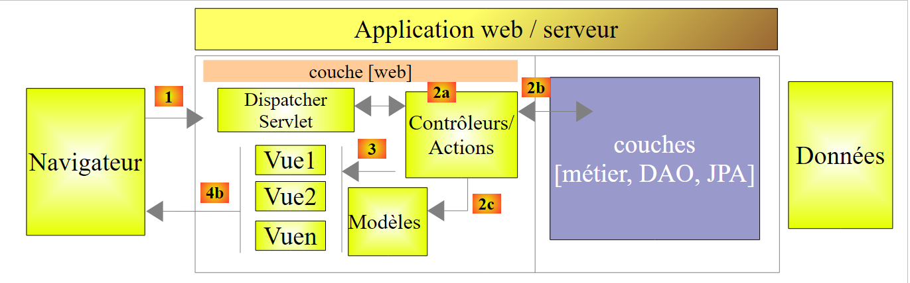 |
The processing of a client request proceeds as follows:
- request - The requested URL requests are in the form http://machine:port/context/Action/param1/param2/....?p1=v1&p2=v2&... [Dispatcher Servlet] is the Spring class that handles incoming URL requests. It "routes" the URL to the action that must process it. These actions are methods of specific classes called [Contrôleurs]. The C in MVC is here the string [Dispatcher Servlet, Contrôleur, Action]. If no action has been configured to handle the incoming URL, the [Dispatcher Servlet] servlet will respond that the requested URL was not found (404 error NOT FOUND);
- processing
- the selected action can use the parami parameters that the [Dispatcher Servlet] servlet passed to it. These may come from several sources:
- the path [/param1/param2/...] of the URL,
- the [p1=v1&p2=v2] parameters of the URL,
- from parameters posted by the browser with its request;
- when processing the user’s request, the action may require the [metier] and [2b] layers. Once the client’s request has been processed, it may trigger various responses. A classic example is:
- an error page if the request could not be processed correctly
- a confirmation page otherwise
- the action instructs a specific view to be displayed [3]. This view will display data known as the view model. This is the M in MVC. The action will create this M template [2c] and request that a view V be displayed [3];
- response—the selected view V uses the model M constructed by the action to initialize the dynamic parts of the response HTML that it must send to the client, then sends this response.
The architecture of our Angular client will be similar, with slightly different terminology. First, Angular applications are generally single-page web applications (APU) or Single Page Applications (SPA):

- the user requests the initial URL of the application in the form: http://machine:port/context. The browser queries a web server to retrieve the requested document. This document is a HTML page styled by CSS and made dynamic by Javascript;
- then the user will interact with the views presented to them. We can distinguish between various types of interactions:
- those that require no interaction with the outside world, such as hiding or showing view elements. These are handled by the embedded Javascript;
- those that require data from a remote web service. This data will be retrieved via a AJAX call (Asynchronous Javascript and Xml), a model will be constructed, and a view displayed;
- those that require a view other than the initial view. It will be requested via an Ajax call to the server that delivered the initial page. Then the previous process will repeat. The resulting page will be cached in the browser. On the next call, it will not be requested from the remote HTML server;
Ultimately, the browser makes only a single HTTP call, the one that retrieves the initial page. Subsequent HTTP requests, to the HTML page server or remote web services, are made by the Javascript embedded in the pages.
We will now present the application’s architecture within the browser. We will disregard the HTML server that delivers the application’s HTML pages. For the sake of explanation, we can assume that they are all present in the browser’s cache.
 |
First, we need to situate this architecture:
- in [1], we are in a browser;
- in [2], a user interacts with the views displayed by the browser;
- in [3], data is retrieved from the network, often from web services;
The user interacts with views: they fill out forms and submit them. Let’s explain this process using the V1 view above. We’ll assume this is the application’s initial view. It was obtained as follows:
- the user requests the application’s initial URL in the form: http://machine:port/context;
- the browser requested the document associated with this URL. It received the HTML / CSS / JS page from view V1;
- the Javascript embedded in the page then took over and handed control to controller C1 [5];
- which constructed the M1 model [8] [9] of view V1. Building this model may have required the use of internal services [6] and querying external services [7];
The user now has a V1 view in front of them. Let’s imagine it’s a form. They fill it out and then submit it:
- in [4], the user submits the form;
- In [5], this event will be handled by one of the methods of controller C1;
If the event results in only a simple change to view V1 (hiding/showing areas), controller C1 will update the M1 model for view V1 and then redraw view V1. To do this, it may need one of the services from the [services] or [6] layer.
If the event requires external data:
- in [6], controller C1 will request the [DAO] layer to retrieve it;
- in [7], the layer will make one or more calls to AJAX to obtain it;
- in [8] and [9], the M1 model will be modified and the V1 view displayed;
If the event triggers a view change, in both of the previous cases, instead of displaying view V1, controller C1 will request a new URL [10]. This is an internal URL within the browser. It does not immediately result in a HTTP call to the HTML page server. This change from URL is handled by a router configured such that each internal URL corresponds to a view V and its controller C. The router then displays the new view Vn. Before display, its controller Cn takes over, constructs the model Mn, and then displays the view Vn [11]. If the HTML page for view Vn was not cached in the browser, it will be requested from the HTML page server.
The [Présentation] layer of this architecture is similar to the JSF architecture (Java Server Faces):
- the V view corresponds to the Facelet-type view of JSF;
- the C controller corresponds to the JSF bean, a Java class that contains both the M model of the V view and its event handlers;
The [Services] layer differs from the [Services] layers we are accustomed to. In server-side web development, the following layered architecture is most common:
 |
In the diagram above, the [web] layer communicates with the [DAO] layer only through the [métier] layer. Nothing would prevent us from injecting a reference to the [DAO] layer into the [web] layer, which would enable this communication. But we don’t allow it.
With Angular, we do not restrict ourselves in this way. The architecture then becomes as follows:
 |
- in [1], the [présentation] layer can communicate directly with any service;
- in [2], the services are aware of each other. A service can use one or more other services.
3.3. The Angular client views
The Angular client views were already presented in Section 1.3.3. To make this new chapter easier to read, we are repeating them here. The first view is as follows:
 |
- in [6], the application’s login page. This is an appointment scheduling application for doctors;
- in [7], a checkbox that allows the user to enable or disable [debug] mode. The latter is characterized by the presence of the [8] frame, which displays the model of the current view;
- in [9], an artificial wait time in milliseconds. It defaults to 0 (no wait). If N is the value of this wait time, any user action will be executed after a wait time of N milliseconds. This allows you to see the wait management implemented by the application;
- in [10], the URL of the Spring 4 server. Following the previous explanation, this is [http://localhost:8080];
- in [11] and [12], the username and password of the user who wants to use the application. There are two users: admin/admin (login/password) with a role (ADMIN) and user/user with a role (USER). Only the role ADMIN has permission to use the application. The role USER is only there to show what the server responds with in this use case;
- in [13], the button that allows you to connect to the server;
- in [14], the application language. There are two: French (default) and English.
 |
- in [1], you log in;
 |
- Once logged in, you can choose the doctor with whom you want an appointment [2] and the date of the appointment [3];
- you request [4] to view the agenda of the selected doctor for the chosen day;
 |
- once the doctor’s schedule is obtained, you can book a time slot;
 |
- In [6], you select the patient for the appointment and confirm this selection in [7];
 |
Once the appointment is confirmed, you are automatically returned to agenda, where the new appointment is now listed. This appointment can be deleted later in [7].
The main features have been described. They are simple. Those not described are functions in navigation to return to a previous view. Let’s finish with language management:
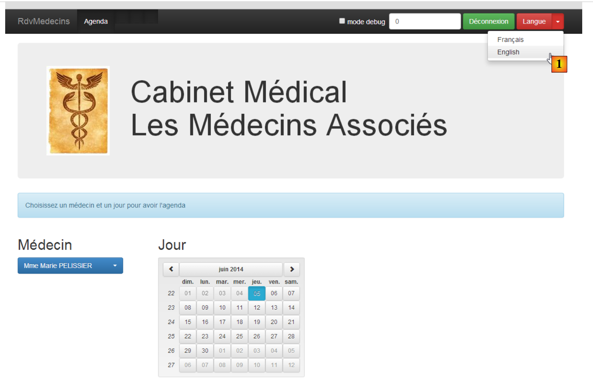 |
- in [1], you switch from French to English;

- in [2], the view switches to English, including the calendar;
3.4. Setting Up the Angular Project
We will build our Angular client step by step. We are using WebStorm.
Let’s create an empty folder named [rdvmedecins-angular-v1] and open it in WebStorm:
 |
- In [1], we open a folder;
- in [2], we select the folder we created;
- in [3], we get an empty WebStorm project;
 |
- In [4], the project is configured via option and [File / Settings];
- In [5] and [6], we configure the [Spelling] property that manages spell checking. By default, this is enabled. Since the downloaded software is in English, our French comments in the programs will be flagged as possible spelling errors. We therefore disable this spell checker [7];
 |
- In [8], create a new file;
- in [9], we choose to create the file [package.json], which describes the application using the syntax shown in JSON;
- In [10], the generated file is modified as shown in [11];
- In [12], we save this file to both [package.json] and [bower.json];
 |
- in [13], we reconfigure the project;
 |
- In [14], configure the [Javascript / Bower] property, which will allow us to declare the Javascript libraries we need;
- In [15], specify the file [bower.json] that we just created;
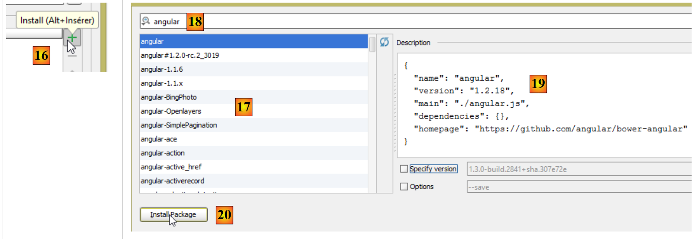 |
- In [16], add a library named Javascript;
- in [17], all downloadable Javascript libraries are displayed;
- in [18], we can set a filter to narrow down the list in [17]. Here, we specify that we want the [Angular JS] library;
- In [19], the library’s specifications appear. Here we see that Angular’s version 1.2.18 will be downloaded;
- in [20], it is being downloaded;
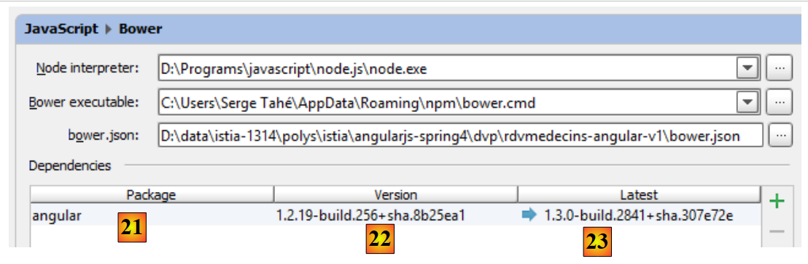 |
- in [21], we see that it has been downloaded;
- in [22], we see the downloaded version. This is actually version 1.2.19;
- in [23], we see the latest available version;
 |
- In [24], following the same procedure as before, the following libraries are downloaded:
to encode the string "user:password" in Base64; | ||
to internationalize the calendar | ||
to route the application's internal URL to the correct controller and view; | ||
enables the internationalization of views. It is a project independent of Angular. Here, two languages will be used: French and English; | ||
provides Bootstrap-compatible visual components. We will use its calendar here; | ||
the CSS Bootstrap framework. It will be used to build the views; | ||
provides a "table"-type visual component. It is "responsive" in the sense that it can adapt to the screen size; | ||
provides a "dropdown list" component; |
 |
- in [25], the downloaded libraries were installed in the [bower_components] folder;
- In [26], we can see that the JQuery library has been downloaded. This is because Bootstrap uses it. The dependency installation system for a project (Javascript) is analogous to Maven in the Java world: if a downloaded library has dependencies of its own, those dependencies are automatically downloaded;
The [bower.json] file has changed:
All downloaded dependencies have been added to the file.
3.5. The Angular client's initial page
We create an initial version of the Angular client's home page:
 |
- in [1] and [2], we create a file named HTML, [app-01], [3], and [4];
The file [app-01.html] will be our main page for a while. We will configure it to import the files CSS and JS that the application needs:
<!DOCTYPE html>
<html>
<head>
<title>RdvMedecins</title>
<!-- META -->
<meta http-equiv="Content-Type" content="text/html; charset=utf-8">
<meta name="viewport" content="width=device-width, initial-scale=1.0">
<meta name="description" content="Angular client for RdvMedecins">
<meta name="author" content="Serge Tahé">
<!-- on CSS -->
<link href="bower_components/bootstrap/dist/css/bootstrap.min.css" rel="stylesheet" />
<link href="bower_components/bootstrap/dist/css/bootstrap-theme.min.css" rel="stylesheet"/>
<link href="bower_components/bootstrap-select/bootstrap-select.min.css" rel="stylesheet"/>
<link href="bower_components/footable/css/footable.core.min.css" rel="stylesheet"/>
</head>
<body>
<div class="container">
<h1>Rdvmedecins - v1</h1>
</div>
<!-- Bootstrap core JavaScript ================================================== -->
<script type="text/javascript" src="bower_components/jquery/dist/jquery.min.js"></script>
<script type="text/javascript" src="bower_components/bootstrap/dist/js/bootstrap.min.js"></script>
<script type="text/javascript" src="bower_components/bootstrap-select/bootstrap-select.min.js"></script>
<script type="text/javascript" src="bower_components/footable/dist/footable.min.js"></script>
<!-- angular js -->
<script type="text/javascript" src="bower_components/angular/angular.min.js"></script>
<script type="text/javascript" src="bower_components/angular-ui-bootstrap-bower/ui-bootstrap-tpls.min.js"></script>
<script type="text/javascript" src="bower_components/angular-route/angular-route.min.js"></script>
<script type="text/javascript" src="bower_components/angular-translate/angular-translate.min.js"></script>
<script type="text/javascript" src="bower_components/angular-base64/angular-base64.min.js"></script>
</body>
</html>
- lines 11-12: the CSS files for Bootstrap;
- line 13: the CSS file for the [boostrap-select] component;
- line 14: the CSS file for the [footable] component;
- lines 21–24: the JS files for the Bootstrap components;
- line 21: the Bootstrap components are powered by JQuery;
- line 22: the Bootstrap file JS;
- line 23: the JS file for the [boostrap-select] component;
- line 24: the JS file for the [footable] component;
- lines 26–30: the JS files for Angular and related projects;
- line 26: the Angular file JS. It must be loaded after JQuery if this library is used;
- line 27: the JS file from the [angular-ui-bootstrap] project;
- line 28: the JS file from the [angular-route] router;
- line 29: the file JS from the Angular application internationalization module;
- line 30: the file JS from the module [angular-base64];
The validity of the [app-01.html] file can be verified:
 |
- in [1], we request a code inspection;
- in [2], the result when everything is correct;
This systematic code inspection prior to execution is recommended. Here, this check allows for the detection of any file reference errors in CSS and JS. If a path is incorrect, the code inspector will flag it.
- In [3], the page can be loaded in a browser using a debugger. The following result is obtained in the browser:
 |
- In [4], the page [app-01.html] was served by an internal WebStorm server running here on port 63342;
- In [5], the debugger console. If any errors had occurred, they would have appeared here. This is also where the screen displays generated by the [console.log(expression)] instruction in Javascript are sent. We will make extensive use of this feature;
Debug mode allows you to modify the page in WebStorm and see the results of those changes in the browser without having to reload the page. So if we add line 3 below:
<div class="container">
<h1>Rdvmedecins - v1</h1>
<h2>Version 1</h2>
</div>
and return to the browser, we see that the page has changed:
 |
3.6. Introduction to Bootstrap
We will now illustrate some of the Bootstrap features used in the application. I have only limited knowledge of this framework, gained by copying and pasting code found on the Internet. I will explain the role of the classes CSS that I believe I understand. I will refrain from commenting on the others.
3.6.1. Example 1
In Angular, operations that fetch information from external sources are asynchronous. This means that the operation is initiated, and control immediately returns to the view, allowing the user to continue interacting with it. The application is notified when the operation is complete via an event. This event is handled by a function JS, which can then update the current view or change it. If the operation is likely to take a long time, it is useful to give the user the option to cancel it. We will offer this option systematically. To do this, we will use a Bootstrap banner:

To achieve this result, we duplicate [app-01.html] into [app-02.html] and modify the following lines:
<div class="container">
<h1>Rdvmedecins - v1</h1>
<div class="alert alert-warning">
<h1>Opération en cours. Veuillez patienter...
<button class="btn btn-primary pull-right">Annuler</button>
<img src="assets/images/waiting.gif" alt=""/>
</h1>
</div>
</div>
- line 1: the class CSS [container] defines a display area within the browser;
- line 3: the class CSS [alert] displays a colored area. The class [alert-warning] uses a predefined color;
- line 5: the class [btn] styles a button. The class [btn-primary] gives it a specific color. The class [pull-right] positions it to the right of the alert banner;
- line 6: a loading animation;
3.6.2. Example 2
The different views of the application will have a common title:

To achieve this result, we duplicate [app-01.html] into [app-03.html] and modify the following lines:
<div class="container">
<h1>Rdvmedecins - v1</h1>
<!-- Bootstrap Jumbotron -->
<div class="jumbotron">
<div class="row">
<div class="col-md-2">
<img src="assets/images/caduceus.jpg" alt="RvMedecins"/>
</div>
<div class="col-md-10">
<h1>Les Médecins associés</h1>
</div>
</div>
</div>
</div>
- The colored area is created using the [jumbotron] class in line 4;
- line 5: the class [row] defines a 12-column row;
- line 6: the class [col-md-2] defines a two-column area within the row;
- line 7: an image is placed in these two columns;
- Lines 9–11: Text is placed in the remaining 10 columns;
3.6.3. Example 3
The views will have a top control bar. It will contain control options, links, or buttons. It will also contain form elements. For example:
 |
To achieve this result, we duplicate [app-01.html] into [app-04.html] and modify the following lines:
<div class="container">
<h1>Rdvmedecins - v1</h1>
<div class="navbar navbar-inverse navbar-fixed-top" role="navigation">
<div class="container">
<div class="navbar-header">
<button type="button" class="navbar-toggle" data-toggle="collapse" data-target=".navbar-collapse">
<span class="sr-only">Toggle navigation</span>
<span class="icon-bar"></span>
<span class="icon-bar"></span>
<span class="icon-bar"></span>
</button>
<a class="navbar-brand" href="#">RdvMedecins</a>
</div>
<div class="navbar-collapse collapse">
<form class="navbar-form navbar-right">
<!-- mode debug -->
<label style="width: 100px">
<input type="checkbox">
<span style="color: white">Debug</span>
</label>
<!-- identification form -->
<div class="form-group">
<input type="text" class="form-control" placeholder="Temps d'attente"
style="width: 150px"/>
<input type="text" class="form-control" placeholder="URL du service web"
style="width: 200px"/>
<input type="text" class="form-control" placeholder="Login"
style="width: 100px"/>
<input type="password" class="form-control" placeholder="Mot de passe"
style="width: 100px"/>
</div>
<button class="btn btn-success">
Connexion
</button>
</form>
</div>
<button class="btn btn-success">
Connexion
</button>
</form>
</div>
</div>
</div>
</div>
- Line 4: The class [navbar] styles the bar defined by navigation. The [navbar-inverse] class gives it a black background. The [navbar-fixed-top] class ensures that when the page displayed by the browser is scrolled, the navigation bar remains at the top of the screen;
- lines 6–14: define the [1] area. This is typically a series of classes that I don’t understand. I use the component as-is;
- line 15: defines a "responsive" area of the command bar. On a smartphone, this area disappears into a menu area;
- line 16: the class [navbar-form] styles a form in the command bar. The class [navbar-right] positions it to the right of the form;
- lines 23–32: the four input fields of the form from line 17, [3]. They are inside a class [form-group] that styles the elements of a form, and each of them has the class [form-control];
- line 33: the class [btn] that we have already encountered, enhanced with the class [btn-success], which gives it its green color;
3.6.4. Example 4
The control bar will allow you to change the language using a drop-down list:

To achieve this result, we duplicate [app-01.html] into [app-05.html] and add the following lines to the control bar:
<button class="btn btn-success">
Connexion
</button>
<!-- languages -->
<div class="btn-group">
<button type="button" class="btn btn-danger">
Langues
</button>
<button type="button" class="btn btn-danger dropdown-toggle" data-toggle="dropdown">
<span class="caret"></span>
<span class="sr-only">Toggle Dropdown</span>
</button>
<ul class="dropdown-menu" role="menu">
<li>
<a href="">Français</a>
</li>
<li>
<a href="">English</a>
</li>
</ul>
</div>
</form>
The added lines are lines 4–21.
- Line 5: The class [btn-group] styles a group of buttons. There are two of them on lines 6 and 9;
- Lines 6–8: The first button defines the label of the drop-down list. The class [btn-danger] gives it a red color;
- Lines 9–12: The second button is the drop-down list button. It is positioned next to the first one, giving the impression of a single component;
- line 10: displays the down arrow indicating that the button is a drop-down list;
- line 11: for screen readers;
- lines 13–20: the items in the drop-down list are the elements of an unordered list;
3.6.5. Example 5
To submit a form or navigate, the user will have options or buttons in the command bar as shown below:
 |
Menu options have been implemented in [1]. To achieve this result, we duplicate [app-01.html] into [app-06.html] and add the following lines:
<div class="navbar navbar-inverse navbar-fixed-top" role="navigation">
<div class="container">
<div class="navbar-header">
...
</div>
<!-- menu options -->
<div class="collapse navbar-collapse">
<ul class="nav navbar-nav">
<li class="active">
<a href="">
<span>Home</span>
</a>
</li>
<li class="active">
<a href="">
<span>Agenda</span>
</a>
</li>
<li class="active">
<a href="">
<span>Valider</span>
</a>
</li>
<li class="active">
<a href="">
<span>Annuler</span>
</a>
</li>
</ul>
<!-- right buttons -->
<form class="navbar-form navbar-right" role="form">
...
</form>
</div>
</div>
</div>
</div>
- The menu options are generated by lines 8–29. These are again elements of an <ul> list. The [active] class makes the text underlined, indicating that the option can be clicked.
3.6.6. Example 6
We will present the doctors and the clients in dropdown lists as shown below:
 |
The dropdown list used is not a native Bootstrap component. It is the [bootstrap-select] component (http://silviomoreto.github.io/bootstrap-select/). To achieve this result, we duplicate [app-01.html] into [app-07.html] and add the following lines:
<!DOCTYPE html>
<html>
<head>
...
<link href="bower_components/bootstrap-select/bootstrap-select.min.css" rel="stylesheet"/>
</head>
<body>
<div class="container">
<h1>Rdvmedecins - v1</h1>
<h2><label for="medecins">Médecins</label></h2>
<select id="medecins" data-style="btn btn-primary" class="selectpicker">
<option value="1">Mme Marie PELISSIER</option>
<option value="1">Mr Jacques BROMARD</option>
<option value="1">Mr Philippe JANDOT</option>
<option value="1">Mme Justine JACQUEMOT</option>
</select>
</div>
<!-- Bootstrap core JavaScript ================================================== -->
...
<script type="text/javascript" src="bower_components/bootstrap-select/bootstrap-select.min.js"></script>
<!-- local script -->
<script>
$('.selectpicker').selectpicker();
</script>
</body>
</html>
- Line 5: You must import the stylesheet for [bootstrap-select];
- line 13: the [data-style] attribute is used by [bootstrap-select]. It is used to style the drop-down list. Here, it is styled as a blue button [btn-primary];
- line 13: the [class] attribute is used on line 23. Can be any value;
- lines 14–17: the elements of the drop-down list. These are standard HTML tags;
- line 22: JS must be imported from [bootstrap-select];
- lines 24–26: a JS script executed when the page finishes loading;
- line 25: a JQuery instruction. The [selectpicker] method (selectpicker()) is applied to all elements with the [selectpicker] class ($('.selectpicker')). There is only one, the <select> tag on line 13. The [selectpicker] method comes from the JS file referenced on line 22;
3.6.7. Example 7
To display a doctor’s agenda, we will use a ‘responsive’ table provided by the JS [footable] library:
 |
- in [1]: the table with a normal display;
- in [2]: the table when the browser window is resized. The [Action] column automatically wraps to the next line. This is called a "responsive" or simply adaptive component.
We duplicate [app-01.html] into [app-08.html] and add the following lines:
...
<link href="bower_components/footable/css/footable.core.min.css" rel="stylesheet"/>
<link href="assets/css/rdvmedecins.css" rel="stylesheet"/>
...
<div class="container">
<h1>Rdvmedecins - v1</h1>
<div class="row alert alert-warning">
<div class="col-md-6">
<table id="creneaux" class="table">
<thead>
<tr>
<th data-toggle="true">
<span>Créneau horaire</span>
</th>
<th>
<span>Client</span>
</th>
<th data-hide="phone">
<span>Action</span>
</th>
</thead>
<tbody>
<tr>
<td>
<span class='status-metro status-active'>
9h00-9h20
</span>
</td>
<td>
<span></span>
</td>
<td>
<a href="" class="status-metro status-active">
Réserver
</a>
</td>
</tr>
<tr>
<td>
<span class='status-metro status-suspended'>
9h20-9h40
</span>
</td>
<td>
<span>Mme Paule MARTIN</span>
</td>
<td>
<a href="" class="status-metro status-suspended">
Supprimer
</a>
</td>
</tr>
</tbody>
</table>
</div>
</div>
</div>
...
<script src="bower_components/footable/dist/footable.min.js" type="text/javascript"></script>
- Lines 2 and 60 are already present in [app-01.html]. These are the files CSS and JS provided by the library [footable];
- Line 3 references the following CSS file:
@CHARSET "UTF-8";
#notches th {
text-align: center;
}
#creneaux td {
text-align: center;
font-weight: bold;
}
.status-metro {
display: inline-block;
padding: 2px 5px;
color:#fff;
}
.status-metro.status-active {
background: #43c83c;
}
.status-metro.status-suspended {
background: #fa3031;
}
The styles [status-*] are taken from an example of how to use the table [footable] found on the library's website.
- line 8: places the table in a single row [row] and a colored box [alert alert-warning];
- line 9: the table will occupy 6 columns [col-md-6];
- line 10: the table HTML is formatted by Bootstrap [class='table'];
- line 13: the attribute [data-toggle] indicates the column containing the symbol [+/-] that expands/collapses the row;
- line 19: the [data-hide='phone'] attribute specifies that the column should be hidden if the screen is the size of a phone screen. The value 'tablet' can also be used;
3.6.8. Example 8
To assist the user, we will create tooltips around the main components of the views:
 |
To achieve this, we duplicate [app-01.html] into [app-09.html] and add the following lines:
<!DOCTYPE html>
<html ng-app="rdvmedecins">
<head>
...
</head>
<body>
<div class="container">
<h1>Rdvmedecins - v1</h1>
<div class="navbar navbar-inverse navbar-fixed-top" role="navigation">
<div class="container">
<div class="navbar-header">
<button type="button" class="navbar-toggle" data-toggle="collapse" data-target=".navbar-collapse">
<span class="sr-only">Toggle navigation</span>
<span class="icon-bar"></span>
<span class="icon-bar"></span>
<span class="icon-bar"></span>
</button>
<a class="navbar-brand" href="#">RdvMedecins</a>
</div>
<!-- menu options -->
<div class="collapse navbar-collapse">
<ul class="nav navbar-nav">
<li class="active">
<a href="">
<span tooltip="Retourne à la page d'accueil" tooltip-placement="bottom">Home</span>
</a>
</li>
<li class="active">
<a href="">
<span tooltip="Affiche l'agenda" tooltip-placement="top">Agenda</span>
</a>
</li>
<li class="active">
<a href="">
<span tooltip="Valide le rendez-vous" tooltip-placement="right">Valider</span>
</a>
</li>
<li class="active">
<a href="">
<span tooltip="Annule l'opération en cours" tooltip-placement="left">Annuler</span>
</a>
</li>
</ul>
</div>
</div>
</div>
</div>
<!-- Bootstrap core JavaScript ================================================== -->
<...
<script type="text/javascript" src="bower_components/angular-ui-bootstrap-bower/ui-bootstrap-tpls.min.js"></script>
<!-- local script -->
<script>
// --------------------- module Angular
angular.module("rdvmedecins", ['ui.bootstrap']);
</script>
</body>
</html>
The tooltips are provided by the [angular-ui-bootstrap] library, which itself relies on the [angular] library. Line 50 imports the [angular-ui-bootstrap] library. To implement the components of the [angular-ui-bootstrap] library, we need to create an Angular module. This is done on lines 52–55. These lines define an Angular module named [rdvmedecins] (first parameter). An Angular module can use other Angular modules. These are called module dependencies. They are provided in an array as the second parameter of the [angular.module] function. Here, the module named [ui.bootstrap] is provided by the [angular-ui-bootstrap] library. This module will provide the tooltips.
Line 54 defines an Angular module. By default, this has no effect on the page. We specify that the page should be managed by Angular by linking it to an Angular module. This is what is done on line 2. The [ng-app='rdvmedecins'] attribute links the page to the module created on line 54. The page will then be analyzed by Angular. The [tooltip] attributes will be detected and processed by the [ui.bootstrap] module.
The syntax for the tooltip is as follows:
<span tooltip="Retourne à la page d'accueil" tooltip-placement="bottom">Home</span>
Above, we add a tooltip to the text [Home]:
- [tooltip]: defines the tooltip text;
- [tooltip-placement]: defines its position (bottom, top, left, right);
Angular JS allows you to add new tags or attributes to those already existing in the HTML language. This extension of the HTML language is implemented using Angular directives. Here, the attributes [tooltip] and [tooltip-placement] are attributes created by [angular-ui-bootstrap].
3.6.9. Example 9
To help the user choose the date of an appointment, we will provide a calendar:

As with the tooltips, this calendar is provided by the [angular-ui-bootstrap] library. To achieve this result, we duplicate [app-01.html] into [app-10.html] and add the following lines:
<!DOCTYPE html>
<html ng-app="rdvmedecins">
<head>
...
<body>
<div class="container">
<h1>Rdvmedecins - v1</h1>
<div>
<pre>Date <em>{{jour | date:'fullDate'}}</em></pre>
<div class="row">
<div class="col-md-2">
<h4>Calendrier</h4>
<div style="display:inline-block; min-height:290px;">
<datepicker ng-model="jour" show-weeks="true" class="well"></datepicker>
</div>
</div>
</div>
</div>
</div>
</div>
...
<!-- local script -->
<script>
// --------------------- module Angular
angular.module("rdvmedecins", ['ui.bootstrap'])
</script>
</body>
</html>
As before, the page is associated with an Angular module (lines 2 and 28). The calendar is defined by the <datepicker> tag on line 16, defined by the [angular-ui-bootstrap] library:
- [show-weeks='true']: to display the week numbers;
- [class='well']: to surround the calendar with a gray area with rounded corners;
- [ng-model='jour']: The [ng-*] attributes are Angular attributes. The [ng-model] attribute refers to data that will be placed in the view template. When the user clicks on a date, it will be placed in the [jour] variable of the model. This variable is used on line 10. The {{expression}} syntax allows you to evaluate an expression composed of elements from the model. Here, {{day}} will display the value of the model variable [jour]. A key feature of Angular is that the view automatically updates in response to changes in the [jour] variable. Thus, when the user changes the dates, these changes will be immediately displayed on line 10. Generally speaking, the process works as follows:
- a view V is associated with a model M;
- Angular watches the model M and automatically updates the view V when there is a change to its model M;
The syntax {{day|date}} is called a filter. It is not the value of [jour] that is displayed, but the value of [jour] filtered by a filter called [date]. This filter is predefined in Angular. It is used to format dates. It accepts parameters specifying the desired format. Thus, the expression {{day | date:'fullDate'}} indicates that we want the full date format, in this case [Friday, June 20, 2014], because the calendar is set to English by default. We will discuss its internationalization shortly.
3.6.10. Conclusion
We have presented the elements of the CSS Bootstrap framework that we will be using. These were passive components: their events were not handled. Thus, clicking on buttons or links did nothing. These events will be handled in Javascript. It is possible to use this language without frameworks, but as was the case on the server side, certain frameworks are essential on the client side. This is the case with the Angular framework JS, which introduces a new approach to developing Javascript applications executed by a browser. We will now introduce it.
3.7. Introduction to Angular JS
We will now illustrate some of the features of the Angular JS framework used in the application. We have already encountered a few of them:
- a page HTML is powered by Angular JS if a module is attached to it:
<html ng-app="rdvmedecins">
- Angular allows you to create new HTML tags and attributes via directives:
- Angular allows you to create filters:
- A view V displays a model M. Angular observes the model M and automatically updates the view V when there is a change to its model M. The value of a variable in the model M is displayed in the view V using:
We will begin by delving deeper into the implementation of the Model-View-Controller design pattern in Angular. Let’s review the relationships between them from an architectural perspective:
 |
- View V1 displays Model M1 constructed by Controller C1. The latter contains not only Model M1 but also the event handlers for View V1. We are in cycle 5, 8, 9:
- [5]: an event occurs in view V1. It is handled by controller C1;
- the controller performs its task [6-7] and then builds the M1 model [8];
- [9]: The V1 view displays the new M1 model. As mentioned, this final step is automatic. Unlike in other frameworks, there is no explicit push (C1 pushes model M1 into V1) or explicit pull (view V1 fetches model M1 from C1). There is an implicit push that the developer does not see;
- then the cycle 5, 8, 9 resumes;
3.7.1. Example 1: The Angular MVC model
Let’s revisit the calendar example. We’ve seen the directive that generates it:
<datepicker ng-model="jour" show-weeks="true" class="well"></datepicker>
This directive supports other attributes besides those shown above, including the [min-date] attribute, which sets the minimum date that can be selected in the calendar. This will be useful for us. When the user selects an appointment date, it must be equal to or later than the current date. We will therefore write:
<datepicker ng-model="jour" ... min-date="dateMin"></datepicker>
where [dateMin] will be a page model variable with a value equal to today’s date. This will result in the following page:
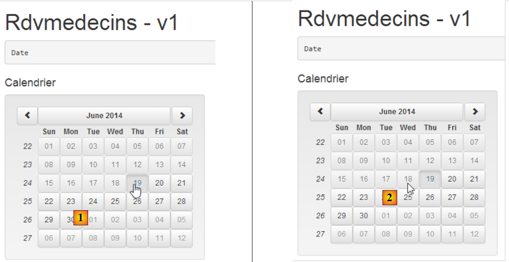 |
- in [1], the date is June 19, 2014. The cursor indicates that June 19 can be selected;
- in [2], the cursor indicates that June 18 cannot be selected;
We duplicate [app-10.html] into [app-11.html] and make the following changes:
<!DOCTYPE html>
<html ng-app="rdvmedecins">
<head>
...
</head>
<body ng-controller="rdvMedecinsCtrl">
<div class="container">
<h1>Rdvmedecins - v1</h1>
<div>
<pre>Date <em>{{jour | date:'fullDate' }}</em></pre>
<div class="row">
<div class="col-md-2">
<h4>Calendrier</h4>
<div style="display:inline-block; min-height:290px;">
<datepicker ng-model="jour" show-weeks="true" class="well" min-date="minDate"></datepicker>
</div>
</div>
</div>
</div>
</div>
<!-- Bootstrap core JavaScript ================================================== -->
...
<!-- local script -->
<script>
// --------------------- module Angular
angular.module("rdvmedecins", ['ui.bootstrap']);
// contrôleur
angular.module("rdvmedecins")
.controller('rdvMedecinsCtrl', ['$scope',
function ($scope) {
// date minimale
$scope.minDate = new Date();
}]);
</script>
</body>
</html>
Let’s first examine the local script in lines 26–37:
- line 28: creation of the [rdvmedecins] module with its dependency on the [ui.bootstrap] module, which provides the calendar;
- lines 30–35: creation of a controller. This is what will hold our page template. There will be no event handler here;
- lines 30–31: the controller [rdvMedecinsCtrl] belongs to the module [rdvmedecins]. You can add as many controllers as you want to a module. In our application, we will have:
- an application management module;
- one controller per view;
- the second parameter of the [controller] function is an array of the form ['O1', 'O2', ..., 'On', function(O1, O2, ..., On)]. The last parameter is the function that implements the controller. Its parameters are objects that Angular JS will provide to the function.
Let’s return to the architecture of an Angular application:
 |
Above, the C1 controller contains all the event handlers for the V1 view, as well as the M1 model for that view. The event handlers may require one or more [6] services to perform their tasks. All of these are passed as parameters to the controller's constructor:
Si services are singletons. Angular creates a single instance of each. They are identified by an Si name. Why do they appear twice in the table above? In production, the JS scripts are minified. During this minification process, the table above becomes:
The parameters lose their names. However, these are the service names. It is therefore important to preserve these names. This is why they are passed as strings as parameters preceding the function. The strings are not changed during the minification process. When Angular builds the controller with the new array, it will replace a1 with S1, a2 with S2, ... The order of the parameters is therefore important. It must match the order of the services preceding the function definition.
Let’s return to the definition of the [rdvMedecinsCtrl] controller:
// controller
angular.module("rdvmedecins")
.controller('rdvMedecinsCtrl', ['$scope',
function ($scope) {
// minimum date
$scope.minDate = new Date();
}]);
- lines 3-4: the only object injected into the controller is the $scope object. This is a predefined object that represents the M model for the views associated with the controller. To enrich a view’s model, simply add fields to the $scope object;
- which is what is done in line 6. We create the field [minDate] with the current date as its value;
The view V uses this model M as follows:
<body ng-controller="rdvMedecinsCtrl">
<div class="container">
...
<div style="display:inline-block; min-height:290px;">
<datepicker ng-model="jour" show-weeks="true" class="well" min-date="minDate"></datepicker>
</div>
...
</div>
...
- line 1: the page body is associated with the [rdvMedecinsCtrl] controller via the [ng-controller] attribute. This means that everything within the <body> tag will use the [rdvMedecinsCtrl] controller to manage its events and retrieve its M model. A HTML page can depend on multiple controllers, whether nested within one another or not:
Above:
- the content of [div1] (lines 1–10) displays template M1 managed by controller c1. Tags in this area can reference event handlers from controller c1;
- the content of [div11] (lines 3-4) displays the M11 template managed by controller c11 as well as the M1 template. There is template inheritance. The tags in this area can reference both event handlers from controller c11 and event handlers from controller c1. They cannot reference either the M12 model from controller c12 or its event handlers. Controller c12 is not defined in lines 3–5;
- lines 7–9: we can apply a similar line of reasoning to the one used previously;
Let’s return to the calendar code:
<datepicker ng-model="jour" show-weeks="true" class="well" min-date="minDate"></datepicker>
The [min-date] attribute is initialized with the value [minDate] from the model. Implicitly, [$scope.minDate]. The field is always looked up in the $scope object.
3.7.2. Example 2: Date Localization
For now, the calendar is of little use to us since it is an English calendar. It is possible to localize it:
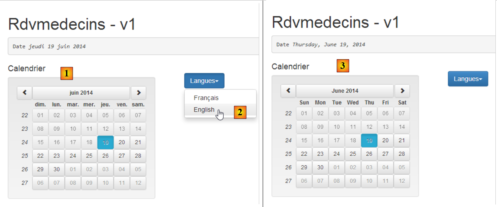 |
- in [1], we have a French calendar;
- in [2], we switch it to English;
- in [3], the English calendar;
We duplicate the page [app-11.html] into [app-12.html], then modify the latter as follows:
<!DOCTYPE html>
<html ng-app="rdvmedecins">
<head>
...
</head>
<body ng-controller="rdvMedecinsCtrl">
<div class="container">
<h1>Rdvmedecins - v1</h1>
<pre>Date <em>{{jour | date:'fullDate' }}</em></pre>
<div class="row">
<!-- the calendar-->
<div class="col-md-4">
<h4>Calendrier</h4>
<div style="display:inline-block; min-height:290px;">
<datepicker ng-model="jour" show-weeks="true" class="well" min-date="minDate"></datepicker>
</div>
</div>
<!-- languages -->
<div class="col-md-2">
<div class="btn-group" dropdown is-open="isopen">
<button type="button" class="btn btn-primary dropdown-toggle" style="margin-top: 30px">
Langues<span class="caret"></span>
</button>
<ul class="dropdown-menu" role="menu">
<li><a href="" ng-click="setLang('fr')">Français</a></li>
<li><a href="" ng-click="setLang('en')">English</a></li>
</ul>
</div>
</div>
</div>
</div>
...
<script type="text/javascript" src="rdvmedecins.js"></script>
</body>
</html>
There are few changes. The only addition is lines 21–31 for the language dropdown list. For the first time, we encounter an event handler on lines 27–28:
- line 27: the [ng-click] attribute is an Angular attribute that specifies the event handler to be executed when the element with this attribute is clicked. Here, the [$scope.setLang('fr')] function will be executed. It will set the calendar to French;
- line 28: here, we set the calendar to English;
- line 35: since the controller’s Javascript is quite large, we place it in a separate file named [rdvmedecins.js];
Angular handles view localization with a module called [ngLocale]. The definition of our [rdvmedecins] module will therefore be as follows:
// --------------------- Angular module
angular.module("rdvmedecins", ['ui.bootstrap', 'ngLocale']);
Line 2: Don’t forget the dependencies, as Angular’s error messages can sometimes be vague. Omitting a dependency is particularly difficult to detect. Here, we have a new dependency on the [ngLocale] module.
By default, Angular only handles the localization of dates, numbers, etc., which have local variants. It does not handle the internationalization of text. For this, we will use the [angular-translate] library. Localization is handled by the [angular-i18n] library. This library includes as many files as there are variants for dates, numbers, etc.
 |
For the French calendar, we will use the file [angular-locale_fr-fr.js], and for the English calendar, the file [angular-locale_en-us.js]. Let's take a look at what's in the file [angular-locale_fr-fr.js], for example:
'use strict';
angular.module("ngLocale", [], ["$provide", function($provide) {
var PLURAL_CATEGORY = {ZERO: "zero", ONE: "one", TWO: "two", FEW: "few", MANY: "many", OTHER: "other"};
$provide.value("$locale", {
"DATETIME_FORMATS": {
"AMPMS": [
"AM",
"PM"
],
"DAY": [
"dimanche",
"lundi",
"mardi",
"mercredi",
"jeudi",
"vendredi",
"samedi"
],
"MONTH": [
"janvier",
"f\u00e9vrier",
"mars",
"avril",
"mai",
"juin",
"juillet",
"ao\u00fbt",
"septembre",
"octobre",
"novembre",
"d\u00e9cembre"
],
"SHORTDAY": [
"dim.",
"lun.",
"mar.",
"mer.",
"jeu.",
"ven.",
"sam."
],
"SHORTMONTH": [
"janv.",
"f\u00e9vr.",
"mars",
"avr.",
"mai",
"juin",
"juil.",
"ao\u00fbt",
"sept.",
"oct.",
"nov.",
"d\u00e9c."
],
"fullDate": "EEEE d MMMM y",
"longDate": "d MMMM y",
"medium": "d MMM y HH:mm:ss",
"mediumDate": "d MMM y",
"mediumTime": "HH:mm:ss",
"short": "dd/MM/yy HH:mm",
"shortDate": "dd/MM/yy",
"shortTime": "HH:mm"
},
"NUMBER_FORMATS": {
"CURRENCY_SYM": "\u20ac",
"DECIMAL_SEP": ",",
"GROUP_SEP": "\u00a0",
"PATTERNS": [
{
"gSize": 3,
"lgSize": 3,
"macFrac": 0,
"maxFrac": 3,
"minFrac": 0,
"minInt": 1,
"negPre": "-",
"negSuf": "",
"posPre": "",
"posSuf": ""
},
{
"gSize": 3,
"lgSize": 3,
"macFrac": 0,
"maxFrac": 2,
"minFrac": 2,
"minInt": 1,
"negPre": "(",
"negSuf": "\u00a0\u00a4)",
"posPre": "",
"posSuf": "\u00a0\u00a4"
}
]
},
"id": "fr-fr",
"pluralCat": function (n) { if (n >= 0 && n <= 2 && n != 2) { return PLURAL_CATEGORY.ONE; } return PLURAL_CATEGORY.OTHER;}
});
}]);
Here are the elements needed to create a French calendar:
- lines 10–18: the table of days of the week;
- lines 19–32: the array of months of the year;
- lines 33–41: the abbreviated table of days of the week;
- lines 42–55: the table of abbreviated months of the year;
- lines 56–63: date and time formats. In line 62, we recognize the 'jj/mm/aa' format for French dates;
- lines 65-95: information on number formatting. This is not relevant here;
- line 96: the 'fr-fr' identifier for the file's locale (fr-fr: French (France), fr-ca: French (Canada), ...)
In the file [angular-locale_en-us.js], we have exactly the same thing, but this time for English (USA, en-us).
The code above isn’t very easy to read. Upon closer inspection, we see that all this code defines the variable [$locale] on line 4. It is by changing the value of this variable that we achieve the internationalization of dates, numbers, currency, etc. Curiously, Angular does not allow us to change the [$locale] variable at runtime. We define it once and for all by importing the file for the desired locale:
<script type="text/javascript" src="bower_components/angular-i18n/angular-locale_fr-fr.js"></script>
There is no point in importing all the files for the desired locales, because, as we have seen, each file does only one thing: define the variable [$locale]. The last file imported takes precedence, and there is no way to change the locale afterward.
While browsing the web for a solution to this problem, I couldn’t find one. I’m proposing one here: [https://github.com/stahe/angular-ui-bootstrap-datepicker-with-locale-updated-on-the-fly]. The idea is to put the different locales we need into a dictionary. That’s where we’ll go to retrieve them when we need to change them. The code Javascript from [rdvmedecins.js] has the following structure:
 |
If we remove the locale definitions, which take up 200 lines (lines 15–215 above), the code is simple:
- line 6: defines the [rdvmedecins] module and its dependencies;
- lines 8–10: defines the page controller [rdvMedecinsCtrl];
- line 9: the controller’s constructor takes two parameters:
- $scope: to create the view template;
- $locale: which is the variable that manages the calendar’s locale. This is the one that needs to be changed when switching languages;
- line 13: the model variable [minDate] is initialized with today's date;
- line 15: defines the dictionary [locales]. Note that we did not write [$scope.locales]. The variable [locales] is not part of the template exposed to the view;
- lines 15–215: define a dictionary {'fr':locale-fr-fr, 'en':locale-en-us}. The values [locale-fr-fr] and [locale-en-us] are taken respectively from the files JS, [angular-locale_fr-fr.js], and [angular-locale_en-us.js]. The hardest part is not making a mistake with the many parentheses in this dictionary...
- Line 217: The variable $locale is initialized with locales['fr'], i.e., the French version of the locale (version). You cannot simply write [$locale=locales['fr']], which assigns the address of locales['fr'] to $locale. You must make a value copy. This can be done using the predefined function [angular.copy];
- line 219: the model variable [jour] is initialized with today’s date. This causes the calendar to be displayed with the date set to today;
- lines 223–230: define the event handler that is called when the language changes. Note the syntax:
to define an event handler named [nom_fonction] that accepts the parameters [param1, param2, ...];
Recall the code HTML from the dropdown list:
<!-- languages -->
<div class="col-md-2">
<div class="btn-group" dropdown is-open="isopen">
<button type="button" class="btn btn-primary dropdown-toggle" style="margin-top: 30px">
Langues<span class="caret"></span>
</button>
<ul class="dropdown-menu" role="menu">
<li><a href="" ng-click="setLang('fr')">Français</a></li>
<li><a href="" ng-click="setLang('en')">English</a></li>
</ul>
</div>
</div>
- Line 8: Selecting French triggers a call to [setLang('fr')];
- line 9: selecting English triggers a call to [setLang('en')];
- line 3: the [is-open] attribute is a Boolean that controls whether the drop-down list is open (true) or closed (false). It is initialized with the [isopen] variable from the view model;
Let’s return to the code for [rdvmedecins.js]:
- line 225: we set the value of the variable [$locale] to the appropriate value from the dictionary [locales];
- Line 227: We stated that when the model M of a view V changes, the view V is automatically refreshed with the new model. On line 225, we changed the value of the variable [$locale], which is not part of the model M displayed by view V. We need to find a way to change this model M so that the calendar refreshes and uses its new locale. Here, we change the variable [jour] in the calendar model. We initialize it with a new pointer (new) that points to a date identical to the one displayed. [$scope.jour.getTime()] is the number of milliseconds elapsed between January 1, 1970, and the date displayed by the calendar. Using this number, we reconstruct a new date. Of course, we will get the same date, and the calendar will remain positioned on the date it was displaying. However, the value of [$scope.jour]—which is actually a pointer—will have changed, and the calendar will refresh;
- line 229: we set the value of the model variable [isopen] to false. This variable controls one of the attributes of the dropdown list:
<div class="btn-group" dropdown is-open="isopen">
<button type="button" class="btn btn-primary dropdown-toggle" style="margin-top: 30px">
Langues<span class="caret"></span>
</button>
...
</div>
Line 1 above, the [is-open] attribute will be set to false, which will close the dropdown list.
3.7.3. Example 3: Internationalization of text
Let’s revisit the calendar localization:
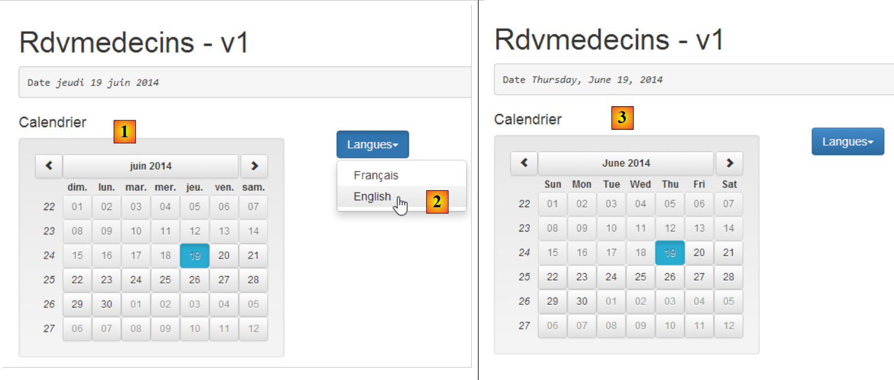 |
In [3], we see that the calendar is in English, but the texts in [Calendrier, Langues] are not. By default, Angular does not provide a tool for internationalizing messages. Here, we will use the [angular-translate] library (https://github.com/angular-translate/angular-translate).
We will develop the following example:
 |
- in [1], the view in French;
- in [2], the English view;
Let’s look at the configuration required for internationalization. The script [rdvmedecins.js] is modified as follows:
// --------------------- Angular module
angular.module("rdvmedecins", ['ui.bootstrap', 'ngLocale', 'pascalprecht.translate']);
// configuration i18n
angular.module("rdvmedecins")
.config(['$translateProvider', function ($translateProvider) {
// messages français
$translateProvider.translations("fr", {
'msg_header': 'Cabinet Médical<br/>Les Médecins Associés',
'msg_langues': 'Langues',
'msg_agenda': 'Agenda de {{titre}} {{prenom}} {{nom}}<br/>le {{jour}}',
'msg_calendrier': 'Calendrier',
'msg_jour': 'Jour sélectionné : ',
'msg_meteo': "Aujourd'hui, il va pleuvoir..."
});
// messages anglais
$translateProvider.translations("en", {
'msg_header': 'The Associated Doctors',
'msg_langues': 'Languages',
'msg_agenda': "{{titre}} {{prenom}} {{nom}}'s Diary<br/> on {{jour}}",
'msg_calendrier': 'Calendar',
'msg_jour': 'Selected day: ',
'msg_meteo': 'Today, it will be raining...'
});
// langue par défaut
$translateProvider.preferredLanguage("fr");
}]);
- line 2: the first change is the addition of a new dependency. The internationalization of the application requires the Angular module [pascalprecht.translate];
- lines 5–26: define the [config] function of the [rdvmedecins] module. When an Angular application starts, the framework instantiates all services required by the application, including Angular’s predefined services and user-defined services. For now, we have not defined any services. The [config] function of an application’s module is executed before any service instantiation. It can be used to define configuration information for the services that will subsequently be instantiated. Here, the [config] function will be used to define the application’s internationalized messages;
- line 5: the parameter of the [config] function is an array ['O1', 'O2', ..., 'On', function(O1, O2, ..., On)] where Oi is a known object provided by Angular. Here, the [$translateProvider] object is provided by the [pascalprecht.translate] module. [function] is the function executed to configure the application;
- lines 7–14: the function [$translateProvider.translations] takes two parameters:
- the first parameter is a language key. You can use any value you like. Here, we used 'fr' for French translations (line 7) and 'en' for English translations (line 16),
- the second is the list of translations in the form of a dictionary {'key1':'msg1', 'key2':'msg2', ...};
- lines 7–14: the French messages;
- lines 16–23: the English messages;
- line 25: the [preferredLanguage] method sets the default language. Its parameter is one of the arguments used as the first parameter of the [$translateProvider.translations] function, so here it is either 'fr' (line 7) or 'en' (line 16);
- Note that there are three types of messages:
- messages without parameters or HTML elements (lines 9, 11, 12, ...),
- messages with HTML elements (lines 8, 10, ...),
- messages with parameters (lines 10, 19);
We now duplicate [app-11.html] into [app-12.html] and make the following changes:
<div class="container">
<!-- a first text with HTML elements in it -->
<h3 class="alert alert-info" translate="{{'msg_header'}}"></h3>
<!-- a second text with parameters -->
<h3 class="alert alert-warning" translate="{{msg.text}}" translate-values="{{msg.model}}"></h3>
<!-- a third text translated by the controller -->
<h3 class="alert alert-danger">{{msg2}}</h3>
<pre>{{'msg_jour'|translate}}<em>{{jour | date:'fullDate' }}</em></pre>
<div class="row">
<!-- the calendar-->
<div class="col-md-4">
<h4>{{'msg_calendrier'|translate}}</h4>
<div style="display:inline-block; min-height:290px;">
<datepicker ng-model="jour" show-weeks="true" class="well" min-date="minDate"></datepicker>
</div>
</div>
<!-- languages -->
<div class="col-md-2">
<div class="btn-group" dropdown is-open="isopen">
<button type="button" class="btn btn-primary dropdown-toggle" style="margin-top: 30px">
{{'msg_langues'|translate}}<span class="caret"></span>
</button>
<ul class="dropdown-menu" role="menu">
<li><a href="" ng-click="setLang('fr')">Français</a></li>
<li><a href="" ng-click="setLang('en')">English</a></li>
</ul>
</div>
</div>
</div>
</div>
- Translations occur on lines 3, 5, 9, 13, and 23;
- three syntaxes can be distinguished:
- the [translate={{'msg_key'}}] syntax (line 3), where [msg_key] is one of the keys in a translation dictionary. This syntax is suitable for messages with or without HTML elements but not for those with parameters;
- the syntax [translate={{'msg_key'}} translate-values={{dictionnaire]}}] (line 5), suitable for messages with or without HTML elements and with parameters;
- the syntax [{{'msg_key'|translate}}] (lines 9, 13, 23) is suitable for messages without parameters and without HTML elements;
Let’s look at the different messages in this view:
Medical Practice<br/>Les Médecins Associés | The Associated Doctors | |
Calendar | Calendar | |
| Languages | Languages |
Selected day: | Selected day: |
Let's now examine line 5:
<h3 class="alert alert-warning" translate="{{msg.text}}" translate-values="{{msg.model}}"></h3>
Note that [msg.text] and [msg.model] are not enclosed in single quotes. These are not strings but model elements:
- msg.text: defines the key of the configured message to be used;
- msg.model: is the dictionary providing the parameter values;
The field names [text, model] can be anything. In the view’s [rdvMedecinsCtrl] controller, the [msg] object is defined as follows:

- line 245: the definition of the [msg] object;
- line 245: the field [text] has the value of the key [msg_agenda], which is associated with two values:
- Agenda of {{title}} {{first_name}} {{last_name}}<br/>on {{day}} in the French dictionary;
- {{title}} {{first name}} {{last name}}'s Diary<br/> on {{day}} in the English dictionary;
The message to be displayed therefore has four parameters: [titre, prenom, nom, jour];
- line 245: the field [model] is a dictionary that assigns a value to these four parameters. There is an issue with the parameter [jour]. We want to display the full name of the day. It differs depending on whether it is in French or English. We therefore use the filter [date], which has already been used in the view in the form {{ day | date:'fullDate'}}. It is possible to use any filter in the Javascript code in the form $filter('filter')(value, options), where $filter is a predefined Angular object and 'filter' is the name of the filter;
- lines 33–34: the predefined object $filter is passed as a parameter to the controller, allowing it to be used on line 245;
Let’s return to another line in the displayed view:
<!-- a third text translated by the controller -->
<h3 class="alert alert-danger">{{msg2}}</h3>
All previous translations were performed in the view using attributes from the [pascalprecht.translate] module. We can also choose to perform this translation on the server side. That is what is done here. In the controller (line 247 in the screenshot above), we have the following code:
$scope.msg2 = $filter('translate')('msg_meteo');
We use the same syntax as for the 'date' filter because 'translate' is also a filter. Here, we request the message with the key 'msg_meteo'.
Let’s examine the mechanism for language changes. We saw that the [config] configuration function for the [rdvmedecins] module had designated French as the default language (line 9 below):
// i18n configuration
angular.module("rdvmedecins")
.config(['$translateProvider', function ($translateProvider) {
// french messages
$translateProvider.translations("fr", {...});
// english messages
$translateProvider.translations("en", {...});
// default language
$translateProvider.preferredLanguage("fr");
}]);
Note that the default locale was also French. In the initialization of the [rdvmedecins] controller, we wrote:
// we put the locale in French
angular.copy(locales['fr'], $locale);
- Line 2: [locales] is a dictionary we have built;
There is no connection between the message internationalization provided by the [pascalprecht.translate] module and the date localization we have implemented. The latter uses a variable $locale that is not used by the [pascalprecht.translate] module. These are two processes that are completely separate.
It is now time to look at what happens when the user changes the language:

- line 251: when the language changes, the [setLang] function is called with one of the two ['fr','en'] parameters;
- lines 252–257: have already been explained—they change the calendar variable [$locale]. This has no effect on the translation language;
- line 259: the translation language is changed. We use the [$translate] object provided by the [pascalprecht.translate] module. To do this, it must be injected into the controller:
// controller
angular.module("rdvmedecins")
.controller('rdvMedecinsCtrl', ['$scope', '$locale', '$translate', '$filter',
function ($scope, $locale, $translate, $filter) {
In lines 3 and 4 above, we inject the $translate object;
- the lang parameter of the [$translate.use(lang)] function must have a value that is one of the keys used in the configuration as the first parameter of the [$translateProvider.translations] function, i.e., either 'fr' or 'en'. This is indeed the case;
- line 261: we recalculate the value of msg2. Why? In the view, after the language change performed by line 259, all existing [translate] attributes will be re-evaluated. This will not be the case for the expression {{msg2}}, which does not have this attribute. Therefore, its new value is calculated in the controller. This must be done after the language change in line 259 so that the new language is used for the calculation of [msg2];
If we stop there, we observe two anomalies:
 |
- in [1], the day remains in French while the rest of the view is in English;
- In [2] and [3], the selected date is June 24, whereas in [1], the date remains set to June 20;
Let’s try to explain this before finding solutions. The message [1] is constructed in the controller with the following code:
$scope.msg = {'text': 'msg_agenda', 'model': {'titre': 'Mme', 'prenom': 'Laure', 'nom': 'PELISSIER', 'jour': $filter('date')($scope.jour, 'fullDate')}};
and displayed in the view with the following code:
<h3 class="alert alert-warning" translate="{{msg.text}}" translate-values="{{msg.model}}"></h3>
The [1] anomaly (the day remained in French while the rest of the view is in English) seems to indicate that while the [translate] attribute is re-evaluated during a language change, the [translate-values] attribute was not. We can then force this evaluation in the controller:
// ------------------- evts manager
// language change
$scope.setLang = function (lang) {
...
// update msg2
$scope.msg2 = $filter('translate')('msg_meteo');
// and msg day
$scope.msg.model.jour = $filter('date')($scope.jour, 'fullDate');
};
Every time the language changes, line 8 above recalculates the displayed day. This effectively solves the first problem but not the second (the day displayed in the message does not change when another day is selected in the calendar). The reason for this behavior is as follows. The message is displayed in the view with the following code:
<h3 class="alert alert-warning" translate="{{msg.text}}" translate-values="{{msg.model}}"></h3>
The displayed view V changes only if its model M changes. However, in this case, selecting a new day in the calendar triggers an event that is not handled, which means that the model [msg] does not change and therefore the view does not change. We update the calendar definition in the view:
<datepicker ng-model="jour" show-weeks="true" class="well" min-date="minDate"
ng-click="calendarClick()"></datepicker>
Above, we specify that a click on the calendar must be handled by the [$scope.calendarClick] function. This is as follows:

- line 267: the calendar click handler;
- line 269: we force the update of the displayed day using the message [msg];
3.7.4. Example 4: A configuration service
Let’s revisit the architecture of an Angular application JS:
 |
Here, we will focus on the concept of a service. It is a fairly broad concept. While the [DAO] layer above is clearly a service, any Angular object can become a service:
- a service follows a specific syntax. It has a name, and Angular identifies it by that name;
- a service can be injected by Angular into controllers and other services;
Some of the services we will configure in the [rdvmedecins] module will need to be configured. Since a service can be injected into another service, it is tempting to perform the configuration in a service we will name [config] and inject this service into the services and controllers that need to be configured. We will now describe this process.
We duplicate [app-13.html] into [app-14.html] and make the following changes:
<div class="container">
<!-- waiting msg control -->
<label>
<input type="checkbox" ng-model="waiting.visible">
<span>Voir le message d'attente</span>
</label>
<!-- the waiting message -->
<div class="alert alert-warning" ng-show="waiting.visible">
<h1>{{ waiting.text | translate}}
<button class="btn btn-primary pull-right" ng-click="waiting.cancel()">
{{'msg_cancel'|translate}}</button>
<img src="assets/images/waiting.gif" alt=""/>
</h1>
</div>
...
</div>
...
<script type="text/javascript" src="rdvmedecins-02.js"></script>
- lines 3-6: a checkbox that controls whether or not the waiting message in lines 9-15 is displayed. The value of the checkbox is stored in the variable [waiting.visible] of the M model of the V view. This value is true if the checkbox is checked and false otherwise. This works both ways. If we set the variable [waiting.visible] to true, the checkbox will be checked. There is a bidirectional association between view V and its model M;
- lines 9–15: a wait message with a button to cancel the wait (line 11);
- line 9: the message is only visible if the variable [waiting.visible] has the value true. So when we check the box on line 4:
- the value true is assigned to the variable [waiting.visible] (ng-model, line 4);
- since there has been a change to the model M, the view V is automatically re-evaluated. The loading message will then be made visible (ng-show, line 9);
- the reasoning is similar when unchecking the checkbox on line 4: the waiting message is hidden;
- line 10: the waiting message is translated (translate filter);
- line 11: when the button is clicked, the [waiting.cancel()] method is executed (ng-click attribute);
- line 12: the button label is translated;
- line 19: the application’s Javascript code is moved to a new file named JS [rdvmedecins-02] to avoid losing the code that has already been written and now needs to be reorganized;
This results in the following view:
 |
- in [1], checkbox unchecked;
- in [2], checkbox checked;
The script [rdvmedecins-02] is a reorganization of the script [rdvmedecins]:

- line 6: the [rdvmedecins] module of the application;
- lines 9–10: the application configuration function;
- lines 38–39: the [config] service;
- lines 283–284: the [rdvMedecinsCtrl] controller;
Previously, we had defined the dictionary locales={'fr':..., 'en': ...} in the controller, which was 200 lines long. This dictionary is clearly a configuration element, so we migrate it to the [config] service in lines 38-39. This service is defined as follows:

- Lines 38–39: A service is created using the [factory] function of the [angular.module] object. The syntax of this function is the same as for the previous ones: factory('nom_service', ['O1','O2', ...., 'On', function (O1, O2, ..., On){...}]), where the Oi are the names of objects known to Angular (predefined or created by the developer) that Angular injects as parameters into the factory function. Since the function has no parameters here, we used a shorter syntax that is also accepted: `factory('nom_service', function (){...})]`;
- line 40: the function [factory] must implement the service using an object that it returns. It is this object that is the service. This is why the function is called a factory (object creation factory);
In general, service code takes the following form:
Angular.module('nom_module')
.factory('nom_service',['O1','O2', ...., 'On', function (O1, O2, ..., On){
// service preparation
...
// render the object implementing the service
return {
// fields
...
// methods
...
}
});
- line 6: we return a JS object that can contain both fields and methods. It is the methods that perform the service;
Here, the [config] service defines only fields and no methods. We will put everything that can be configured in the application here:
- lines 42–47: the keys for the messages to be translated;
- lines 59–62: the URL of the application;
- lines 64–69: the URL for the remote web service;
- line 71: a HTTP call to a web service that does not respond, possibly long. Here, we set the maximum wait time for the web service response to 1 second. After this time has elapsed, the HTTP call fails and a JS exception is thrown;
- line 73: before each call to the server, we will simulate a wait whose duration is set here in milliseconds. A wait of 0 means there is no wait. The application will be designed so that the user can cancel an operation they have initiated. For it to be cancellable, it must last at least a few seconds. We will use this artificial wait to simulate long-running operations;
- line 75: in [debug=true] mode, additional information is displayed in the current view. By default, this mode is enabled. In production, we would set this field to false;
- lines 77–278: the dictionary for the two locales 'fr' and 'en'. It was previously in the [rdvMedecinsCtrl] controller;
With this service, the [rdvMedecinsCtrl] controller changes as follows:

- lines 284–285: the [config] service is injected into the controller;
- line 290: the dictionary [locales] is now found in the service [config] and no longer in the controller;
- line 294: the [waiting] object that controls the display of the waiting message. The key for the wait message is found in the [config] service (text field). By default, the wait message is hidden (visible field). The cancel field has the value of the function name on line 316. This field is therefore a method or function;
- line 316: the function [cancel] is private (we did not write $scope.cancel=function(){}). Let’s go back to the code for the cancel button:
<button class="btn btn-primary pull-right" ng-click="waiting.cancel()">
When the user clicks the cancel button, the [$scope.waiting.cancel()] method is called. Ultimately, the private cancel function on line 316 is executed. It simply hides the waiting message by setting the [waiting.visible] model variable to false (line 318);
3.7.5. Example 5: Asynchronous Programming
We will now introduce a new service with a new concept: asynchronous programming.
 |
Our application will have three services:
- [config]: the configuration service we just presented;
- [utils]: a utility methods service. We will present two of them;
- [dao]: the service for accessing the appointment scheduling web service. We will introduce it shortly;
We are going to write the following application:
 |
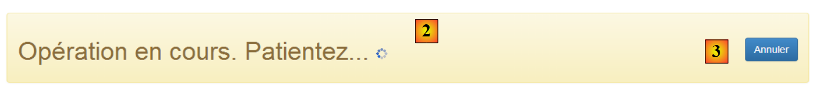 |
- the goal is to display the [2] banner for a duration set by [1]. The wait can be canceled by [3].
We duplicate [app-01.html] into [app-15.html] and modify the code as follows:
<!DOCTYPE html>
<html ng-app="rdvmedecins">
<head>
<title>RdvMedecins</title>
...
</head>
<body ng-controller="rdvMedecinsCtrl">
<div class="container">
<!-- the waiting message -->
<div class="alert alert-warning" ng-show="waiting.visible" ng-cloak="">
<h1>{{ waiting.text | translate}}
<button class="btn btn-primary pull-right" ng-click="waiting.cancel()">{{'msg_cancel'|translate}}</button>
<img src="assets/images/waiting.gif" alt=""/>
</h1>
</div>
<!-- the form -->
<div class="alert alert-info" ng-hide="waiting.visible">
<div class="form-group">
<label for="waitingTime">{{waitingTimeText | translate}}</label>
<input type="text" id="waitingTime" ng-model="waiting.time"/>
</div>
<button class="btn btn-primary" ng-click="execute()">Exécuter</button>
</div>
</div>
..
<script type="text/javascript" src="rdvmedecins-03.js"></script>
</body>
</html>
- line 11: the [ng-cloak] attribute prevents the field from being displayed until its Angular expressions have been evaluated. This prevents the field from briefly appearing before the [ng-show] attribute is evaluated, which will actually cause it to be hidden;
- line 22: the user's input (wait time) will be stored in the [waiting.time] model (ng-model attribute);
- line 28: the page uses a new script [rdvmedecins-03];
The [rdvmedecins-03] script is as follows:

- line 6: the Angular module that manages the application;
- line 10: the [config] function used to internationalize messages;
- line 41: the [config] service we described;
- line 286: the [utils] service that we are going to build;
- line 315: the [rdvmedecinsCtrl] controller that we are going to build;
We add a new message key to the [config] function (lines 6, 11):
angular.module("rdvmedecins")
.config(['$translateProvider', function ($translateProvider) {
// french messages
$translateProvider.translations("fr", {
...
'msg_waiting_time_text': "Temps d'attente : "
});
// english messages
$translateProvider.translations("en", {
...
'msg_waiting_time_text': "Waiting time:"
});
// default language
$translateProvider.preferredLanguage("fr");
}]);
We add a new line (line 6) to the [config] service for this message key:
angular.module("rdvmedecins")
.factory('config', function () {
return {
// messages to be internationalized
...
waitingTimeText: 'msg_waiting_time_text',
The [utils] service contains two methods (lines 4, 12):
angular.module("rdvmedecins")
.factory('utils', ['config', '$timeout', '$q', function (config, $timeout, $q) {
// display the Json representation of an object
function debug(message, data) {
if (config.debug) {
var text = data ? message + " : " + angular.toJson(data) : message;
console.log(text);
}
}
// waiting
function waitForSomeTime(milliseconds) {
// asynchronous waiting milliseconds milli-seconds
var task = $q.defer();
$timeout(function () {
task.resolve();
}, milliseconds);
// we return the task
return task;
};
// service authority
return {
debug: debug,
waitForSomeTime: waitForSomeTime
}
}]);
- Line 2: The service is called [utils] (first parameter). It depends on three services: two predefined Angular services, $timeout and $q, and the service config. The [$timeout] service allows a function to be executed after a certain amount of time has elapsed. The [$q] service allows asynchronous tasks to be created;
- line 4: a local function [debug];
- line 12: a local function [waitForSomeTime];
- lines 23–26: the instance of the [utils] service. This is an object that exposes two methods, those on lines 4 and 12. Note that the object’s fields can have any names. For consistency, they have been given the names of the functions they reference;
- lines 4–9: the method [debug] writes a message [message] to the console and, if applicable, the representation JSON of an object [data]. This allows objects of any complexity to be displayed;
- lines 12–20: the [waitForSomeTime] method creates an asynchronous task that lasts [milliseconds] milliseconds;
- line 14: creation of a task using the predefined object [$q] (https://docs.angularjs.org/api/ng/service/$q). Below is the API for the task named [deferred] in the Angular documentation:

- An asynchronous task [task] is created by the statement [$q.defer()];
- it is terminated using one of two methods:
- [task.resolve(value)]: which successfully completes the task and returns the value [value] to those waiting for the task to finish;
- [task.reject(value)]: which terminates the task unsuccessfully and returns the value [value] to those waiting for the task to finish;
The task [task] can periodically provide information to those waiting for it to finish:
- [task.notify(value)]: sends the value [value] to those waiting for the task to finish. The task continues to run;
Those who want to wait for the task to finish use the task's [promise] field:
The object [promise] has the following API (http://www.frangular.com/2012/12/api-promise-angularjs.html):
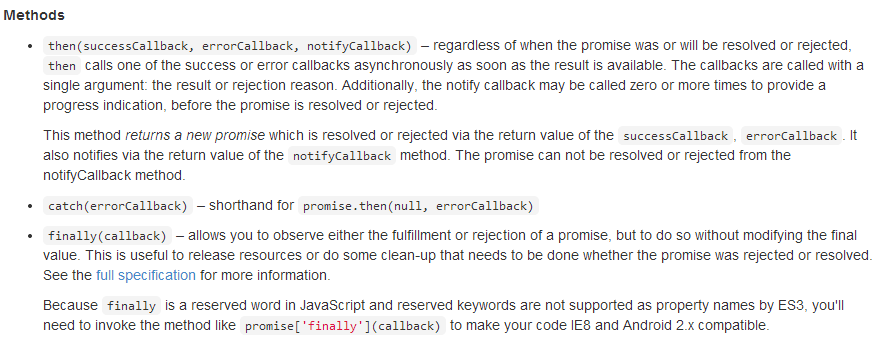
To handle both success and failure of the task, we write:
- line 1: retrieve the task's promise;
- line 2: we define the functions to be executed in case of success or failure. We can omit the failure function. The function [successCallback] will only be executed at the end of task [task] if [task.resolve()] succeeds. The function [errorCallBack] will only be executed at the end of task [task] if it fails ([task.reject()]).
- Line 3: We define the function to be executed after one of the two preceding functions has been executed. Here, we place the code common to both functions, [successCallback, errorCallBack].
Let’s return to the code for function [waitForSomeTime]:
// waiting
function waitForSomeTime(milliseconds) {
// asynchronous waiting of milliseconds milliseconds
var task = $q.defer();
$timeout(function () {
task.resolve();
}, milliseconds);
// we return the task
return task;
};
- line 4: a task is created;
- lines 5–7: the [$timeout] object allows you to define a function (first parameter) that executes after a certain delay expressed in milliseconds (second parameter). Here, the second parameter of the [$timeout] function is the method parameter (line 1);
- line 6: after the delay [milliseconds], the task is successfully completed;
- line 9: the task [task] is returned. It is important to note here that line 9 is executed immediately after the definition of the object [$timeout]. We do not wait for the [milliseconds] timeout to elapse. The code in lines 2–10 is therefore executed at two different times:
- the first time when the [$timeout] object is defined;
- a second time when the [milliseconds] timeout has elapsed;
This is an asynchronous function: its result is obtained at a later time than its execution.
The controller code that uses the [config] service is as follows:
// controller
angular.module("rdvmedecins")
.controller('rdvMedecinsCtrl', ['$scope', 'utils', 'config', '$filter',
function ($scope, utils, config, $filter) {
// ------------------- model initialization
// waiting message
$scope.waiting = {text: config.msgWaiting, visible: false, cancel: cancel, time: undefined};
$scope.waitingTimeText = config.waitingTimeText;
// waiting task
var task;
// logs
utils.debug("libellé temps d'attente", $filter('translate')($scope.waitingTimeText));
utils.debug("locales['fr']=", config.locales['fr']);
// execution action
$scope.execute = function () {
// log
utils.debug('début', new Date());
// the waiting msg is displayed
$scope.waiting.visible = true;
// simulated waiting
task = utils.waitForSomeTime($scope.waiting.time);
// end of wait
task.promise.then(function () {
// success
utils.debug('fin', new Date());
}, function () {
// failure
utils.debug('Opération annulée')
});
task.promise['finally'](function () {
// end of wait in all cases
$scope.waiting.visible = false;
});
};
// cancel wait
function cancel() {
// complete the task
task.reject();
}
}]);
- line 3: the controller uses the [config] service;
- line 7: the field [time] has been added to the object [$scope.waiting]. The object [$scope.waiting.time] receives the value of the timeout set by the user;
- line 8: the key of the wait message displayed by the view is placed in the [$scope.waitingTimeText] template. Generally, everything displayed by a V view must be placed in the [$scope] object;
- line 10: a local variable. It is not exposed to view V;
- lines 12–13: use of the [debug] method from the [config] service. The following result is displayed on the console:
Line 2: We obtain the notation JSON for the object locales['fr'].
- Line 16: the method executed when the user clicks the [Executer] button;
- Line 18: Displays the start time of the method's execution;
- line 22: the task [waitForSomeTime] is launched. We do not wait for it to finish. Execution continues with the following line 24;
- lines 24–30: defines the functions to be executed when the task completes successfully (line 26) and in case of an error (line 29);
- line 26: displays the time the method execution ended;
- line 29: displays that the operation has been canceled. This occurs only when the user clicks the [Annuler] button. The instruction on line 41 then stops the asynchronous task with a failure code;
- lines 31–34: define the function to be executed after one of the two preceding functions has been executed;
It is important to understand the execution sequences of this code. If the user sets a 3-second timeout and does not cancel the wait:
- when they click the [Exécuter] button, the [$scope.execute] function executes. Lines 16–34 are executed without waiting for the 3 seconds. At the end of this execution, the view V is synchronized with the model M. The waiting message is displayed (ng-show=$scope.waiting.visible=true, line 20) and the form is hidden (ng-hide=$scope.waiting.visible=true, line 20);
- from this point on, the user can interact with the view again. In particular, they can click the [Annuler] button;
- if they do not, after 3 seconds, the function [$timeout] (see lines 5–7 below) is executed:
// waiting
function waitForSomeTime(milliseconds) {
// asynchronous waiting of milliseconds milliseconds
var task = $q.defer();
$timeout(function () {
task.resolve();
}, milliseconds);
// we return the task
return task;
};
- After 3 seconds, the code is executed. This code completes task [task] with a success code (resolve). This will trigger the execution of all the code that was waiting for this completion (line 4 below):
// simulated waiting
task = utils.waitForSomeTime($scope.waiting.time);
// end of wait
task.promise.then(function () {
// success
utils.debug('fin', new Date());
}, function () {
// failure
utils.debug('Opération annulée')
});
task.promise['finally'](function () {
// end of wait in all cases
$scope.waiting.visible = false;
});
- Line 6 above (successful completion) will therefore be executed. Then lines 11–14 will be executed. Once this code is executed, we return to view V, which will then be synchronized with its model M. The waiting message is hidden (ng-show=$scope.waiting.visible=false, line 13) and the form is displayed (ng-hide=$scope.waiting.visible=false, line 13);
The screen displays are then as follows:
As shown above, there is a 3-second delay (06:01–05:58) between the start and end of the wait. If, on the other hand, the user cancels the wait before the 3 seconds are up, the following display appears:
Finally, it is important to understand that at any given time there is only one execution thread, known as the UI (User Interface) thread. The completion of an asynchronous task is signaled by an event, just as clicking a button is. This event is not processed immediately. It is placed in the queue of events awaiting execution. When its turn comes, it is processed. This processing uses the UI thread, and therefore during this time, the interface is frozen. It does not respond to user input. For this reason, it is important that event processing be fast. Because each event is processed by the UI thread, there is never a need to resolve synchronization issues between threads running simultaneously. At any given moment, only the UI thread is executing.
3.7.6. Example 6: The HTTP Services
We now present the [dao] service that communicates with the web server:
 |
3.7.6.1. The V view
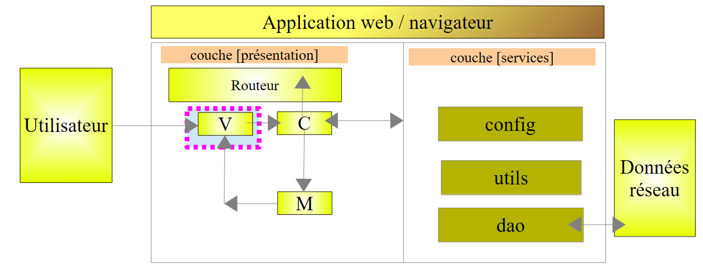 |
We will write a form to request the list of doctors:

We duplicate [app-01.html] into [app-16.html], which we then modify as follows:
<div class="container" ng-cloak="">
<h1>Rdvmedecins - v1</h1>
<!-- the waiting message -->
<div class="alert alert-warning" ng-show="waiting.visible" ng-cloak="">
<h1>{{ waiting.text | translate}}
<button class="btn btn-primary pull-right" ng-click="waiting.cancel()">{{'msg_cancel'|translate}}</button>
<img src="assets/images/waiting.gif" alt=""/>
</h1>
</div>
<!-- the request -->
<div class="alert alert-info" ng-hide="waiting.visible">
<div class="form-group">
<label for="waitingTime">{{waitingTimeText | translate}}</label>
<input type="text" id="waitingTime" ng-model="waiting.time"/>
</div>
<div class="form-group">
<label for="urlServer">{{urlServerLabel | translate}}</label>
<input type="text" id="urlServer" ng-model="server.url"/>
</div>
<div class="form-group">
<label for="login">{{loginLabel | translate}}</label>
<input type="text" id="login" ng-model="server.login"/>
</div>
<div class="form-group">
<label for="password">{{passwordLabel | translate}}</label>
<input type="password" id="password" ng-model="server.password"/>
</div>
<button class="btn btn-primary" ng-click="execute()">{{medecins.title|translate:medecins.model}}</button>
</div>
<!-- list of doctors -->
<div class="alert alert-success" ng-show="medecins.show">
{{medecins.title|translate:medecins.model}}
<ul>
<li ng-repeat="medecin in medecins.data">{{medecin.titre}}{{medecin.prenom}} {{medecin.nom}}</li>
</ul>
</div>
<!-- the error list -->
<div class="alert alert-danger" ng-show="errors.show">
{{errors.title|translate:errors.model}}
<ul>
<li ng-repeat="message in errors.messages">{{message|translate}}</li>
</ul>
</div>
</div>
...
<script type="text/javascript" src="rdvmedecins-04.js"></script>
- Lines 13–31: implement the form. This form is not visible when the waiting message is displayed (ng-hide="waiting.visible"). Note that the four entries are stored in (ng-model attributes) [waiting.time (ligne 16), server.url (ligne 20), server.login (ligne 24), server.password (ligne 28)];
- lines 34–39: display the list of doctors. This list is not always visible (ng-show="medecins.show").
- line 35: an alternative to the syntax already encountered;
- line 36: an unordered list;
- line 37: the list of doctors will be found in the [medecins.data] model. The Angular directive [ng-repeat] allows you to iterate over a list. The syntax ng-repeat="doctor in medecins.data" instructs the system to repeat the <li> tag for each item in the [medecins.data] list. The current item in the list is called [medecin];
- line 37: for each <li>, the title, first name, and last name of the current doctor designated by the variable [medecin] are written;
- lines 42–47: display the list of errors. This list is not always visible (ng-show="errors.show"). This display follows the same pattern as the display of the list of doctors. Generally, to display a list of objects, the Angular directive [ng-repeat] is used;
- line 51: the code Javascript is now in the file [rdvmedecins-04]
3.7.6.2. The C controller and the M model
 |
The code Javascript changes as follows:
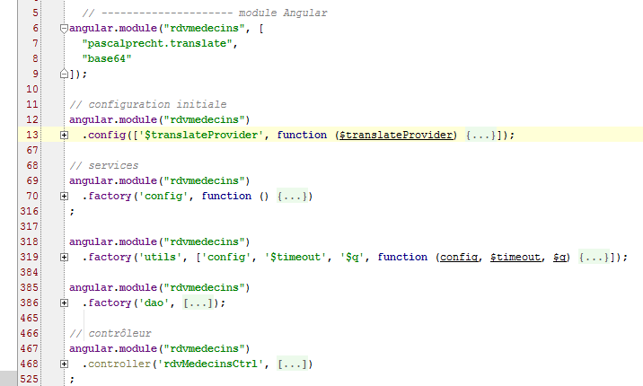
- lines 6–9: the [rdvmedecins] module declares a dependency on the [base64] module provided by the [angular-base64] library, which is one of the project’s dependencies. This module is used to encode the string [login:password] sent to the web service for authentication using Base64;
- lines 12–13: the initialization function containing our internationalized messages. New messages appear. We will not present them again;
- lines 69–70: the [config] service that configures our application. New message keys are added here. We will not cover them again;
- lines 318–319: the [utils] service, which contains utility methods. New ones have been added. We will present them;
- lines 385–386: the [dao] service responsible for communication with the web service. This is the one we will focus on;
- lines 467–468: the C controller for the V view we just discussed. We’ll cover it now because it acts as the orchestrator that responds to user requests;
3.7.6.3. The C controller
The controller code is as follows:
angular.module("rdvmedecins")
.controller('rdvMedecinsCtrl', ['$scope', 'utils', 'config', 'dao', '$translate',
function ($scope, utils, config, dao, $translate) {
// ------------------- model initialization
// model
$scope.waiting = {text: config.msgWaiting, visible: false, cancel: cancel, time: undefined};
$scope.waitingTimeText = config.waitingTimeText;
$scope.server = {url: undefined, login: undefined, password: undefined};
$scope.medecins = {title: config.listMedecins, show: false, model: {}};
$scope.errors = {show: false, model: {}};
$scope.urlServerLabel = config.urlServerLabel;
$scope.loginLabel = config.loginLabel;
$scope.passwordLabel = config.passwordLabel;
// asynchronous task
var task;
// execution action
$scope.execute = function () {
// the UI is updated
$scope.waiting.visible = true;
$scope.medecins.show = false;
$scope.errors.show = false;
// simulated waiting
task = utils.waitForSomeTime($scope.waiting.time);
var promise = task.promise;
// waiting
promise = promise.then(function () {
// we ask for the list of doctors;
task = dao.getData($scope.server.url, $scope.server.login, $scope.server.password, config.urlSvrMedecins);
return task.promise;
});
// analyze the result of the previous call
promise.then(function (result) {
// result={err: 0, data: [med1, med2, ...]}
// result={err: n, messages: [msg1, msg2, ...]}
if (result.err == 0) {
// we put the acquired data into the model
$scope.medecins.data = result.data;
// the UI is updated
$scope.medecins.show = true;
$scope.waiting.visible = false;
} else {
// there were errors in obtaining the list of doctors
$scope.errors = { title: config.getMedecinsErrors, messages: utils.getErrors(result), show: true, model: {}};
// the UI is updated
$scope.waiting.visible = false;
}
});
};
// cancel wait
function cancel() {
// complete the task
task.reject();
// the UI is updated
$scope.waiting.visible = false;
$scope.medecins.show = false;
$scope.errors.show = false;
}
}
])
;
- line 2: the controller has a new dependency, on the [dao] service;
- lines 6–13: the M model of view V is initialized for its first display;
- line 8: [$scope.server] will be used to retrieve three of the four pieces of information from form V; the fourth is stored in [$scope.waiting.time] (line 6);
- line 9: [$scope.medecins] will gather the information needed to display the list of doctors:
<!-- list of doctors -->
<div class="alert alert-success" ng-show="medecins.show">
{{medecins.title|translate:medecins.model}}
<ul>
<li ng-repeat="medecin in medecins.data">{{medecin.titre}}{{medecin.prenom}} {{medecin.nom}}</li>
</ul>
</div>
The [medecins.title] attribute will be the banner title. It is defined in the [config] service. The [medecins.show] attribute controls whether the banner is displayed (ng-show="medecins.show"). The [medecins.model] attribute is an empty dictionary and will remain so. It is simply used to illustrate the use of the translation variant used in line 3. Not yet defined, the [medecins.data] attribute will contain the list of doctors (line 5).
- Line 10: [$scope.errors] will collect the information needed to display the list of errors:
<!-- the error list -->
<div class="alert alert-danger" ng-show="errors.show">
{{errors.title|translate:errors.model}}
<ul>
<li ng-repeat="message in errors.messages">{{message|translate}}</li>
</ul>
</div>
The [errors.title] attribute will be the banner title. It is defined in the [config] service. The [errors.show] attribute will control whether the banner is displayed (ng-show="errors.show" attribute). The [errors.model] attribute is an empty dictionary and will remain so. It is simply used to illustrate the use of the translation variant used in line 3. Not yet defined, the [errors.messages] attribute will contain the list of error messages to be displayed (line 5).
- line 16: the asynchronous task. The controller will launch two asynchronous tasks in succession. References to these successive tasks will be placed in the variable [task]. This will allow them to be canceled (line 55);
- line 19: the method executed when the user clicks the [Liste des médecins] button:
<button class="btn btn-primary" ng-click="execute()">Liste des médecins</button>
- lines 21–23: the user interface is updated: the loading message is displayed, and everything else is hidden;
- line 25: the asynchronous wait task is created. A signal (task completed) will be received after the time entered by the user in the form has elapsed;
- line 26: we retrieve the promise of the asynchronous task. The program that launches the task works with this promise. However, we must have a reference to the task itself in order to be able to cancel it (line 55);
- lines 28–32: we define the work to be done once the wait is complete;
- line 30: we use the [dao.getData] method to launch a new asynchronous task. We pass it the information it needs:
- the root URL of the [$scope.server.url] web service, for example [http://localhost:8080];
- the [$scope.server.login] login to authenticate, for example [admin];
- the password [$scope.server.password] to log in, for example [admin];
- the URL that performs the requested service [config.urlSvrMedecins], here [/getAllMedecins]. In total, the complete URL will be [http://localhost:8080/getAllMedecins];
The method [dao.getData] returns a result that can take two forms:
- (continued)
- {err: 0, data: [med1, med2, ...]} where [medi] is an object representing a doctor (title, first name, last name),
- {err: n, messages: [msg1, msg2, ...]} where [msgi] is an error message and n is not equal to 0;
- line 31: the task’s promise is returned. Here, there is something to understand. We have two promises:
- promise.then(): returns a first promise [promise1];
- return task.promise: returns a second promise [promise2];
- Ultimately, promise=promise.then(...; return task.promise) is a chain of two promises [promise2.promise1]. [promise1] will only be evaluated once the promise [promise2] is resolved, i.e., when the task [dao.getData] is completed. The promise [promise1] does not depend on any asynchronous tasks. It will therefore be fulfilled immediately;
- lines 34–50: From the previous explanation, it follows that these lines will only be executed once the task [dao.getData] is completed. The parameter [result] passed to the function on line 34 is constructed by the method [dao.getData] and passed to the calling code by the operation [task.resolve(result)], where [result] has the following form:
- {err: 0, data: [med1, med2, ...]} where [medi] is an object representing a doctor (title, first name, last name),
- {err: n, messages: [msg1, msg2, ...]} where [msgi] is an error message and n is not equal to 0;
- line 37: check the error code [result.err];
- lines 38–42: if there is no error (result.err == 0), then retrieve the list of doctors and display it;
- lines 44–47: if, on the other hand, there is an error (result.err ≠ 0), then retrieve the list of error messages and display it;
- lines 53–56: the wait message with its cancel button remains visible until both asynchronous operations are complete. Let’s see what happens depending on when the cancellation occurs:
- First, it is important to understand that lines 19–50 are executed all at once. Only one asynchronous task has been launched at this point, the one on line 25.
- after this initial execution, view V is updated, and thus the waiting banner and its cancel button are visible. If the user cancels the wait before the task on line 25 is complete, the method on line 53 is then executed and the task is canceled with a failure (line 55);
- lines 56–59: the interface is updated: the form is redisplayed and everything else is hidden,
- it then returns to view V and the browser processes the next event. Since the task has completed, the promise for this task is resolved, which triggers an event. It is then processed;
- Lines 28–32 are then executed. There is no function defined for the failure case, so no code is executed. A new promise is obtained—the one always returned by [promise.then] and always obtained—
- since the event has been handled, control returns to view V and the browser will handle the next event. Since the [promise] in line 28 has been handled, the one in line 34 will be resolved, which will trigger a new event. It is then handled;
- lines 34–49 will then be executed in turn, since the promise used in line 34 has been fulfilled. Again, because there is no function defined for the failure case, no code is executed,
- and we thus reach line 50. There is no longer any task waiting, and the new view V is displayed;
- Now suppose that the cancellation occurs while the second asynchronous task [dao.getData] is running. The previous reasoning applies again. The end of the task will trigger the execution of lines 34–50 with a task failure. We will soon discover that the [dao.getData] method makes an asynchronous call to the web service via HTTP. This call will not be canceled, but its result will not be utilized.
It is important to understand this constant back-and-forth between displaying view V and processing browser events. Events are triggered by the user (a click) or by system operations such as the completion of an asynchronous operation. The browser’s idle state is the rendering of the V view. It is pulled out of this idle state by an event that occurs, which it then processes. As soon as the event has been processed, it returns to its idle state. The V view is then updated if the processed event has modified its M model. The browser is pulled out of its idle state by the next event.
Everything happens in a single thread. Two events are never processed simultaneously. Their execution is sequential. The browser moves on to the next event only when the previous one releases control, usually because it has been fully processed.
There is one more point to explain. To display error messages, we write:
$scope.errors = { title: config.getMedecinsErrors, messages: utils.getErrors(result), show: true, model: {}};
The list of messages is provided by the [utils.getErrors] method defined in the [utils] service. This method is as follows:
// error analysis in server response JSON
function getErrors(data) {
// data {err:n, messages:[]}, err!=0
// errors
var errors = [];
// error code
var err = data.err;
switch (err) {
case 2 :
// not authorized
errors.push('not_authorized');
break;
case 3 :
// forbidden
errors.push('forbidden');
break;
case 4 :
// local error
errors.push('not_http_error');
break;
case 6 :
// document not found
errors.push('not_found');
break;
default :
// other cases
errors = data.messages;
break;
}
// if no msg, we put one
if (! errors || errors.length == 0) {
errors=['error_unknown'];
}
// return the list of errors
return errors;
}
- lines 2-3: the received parameter [data] is an object with two attributes:
- [err]: an error code;
- [messages]: a list of messages;
- line 5: we are going to create an array of error messages. These messages are internationalized. For this reason, it is not the messages themselves that are placed in the array, but their internationalization keys, except on line 27. In this case, we use the [messages] attribute of the [data] parameter. These messages are actual messages and not message keys. However, view V will treat them as message keys, which will then not be found. In this case, module [translate] displays the message key it did not find—in this instance, a real message. This is the desired result;
- lines 32–34: handle the case where [data.messages] line 27 is null. This occurs with the written web service. This case should have been avoided.
3.7.6.4. The [dao] service
 |
The [dao] service handles exchanges with the HTTP web service / JSON. Its code is as follows:
angular.module("rdvmedecins")
.factory('dao', ['$http', '$q', 'config', '$base64', 'utils',
function ($http, $q, config, $base64, utils) {
// logs
utils.debug("[dao] init");
// ----------------------------------méthodes privées
// obtain data from the web service
function getData(serverUrl, username, password, urlAction, info) {
// asynchronous operation
var task = $q.defer();
// url query HTTP
var url = serverUrl + urlAction;
// basic authentication
var basic = "Basic " + $base64.encode(username + ":" + password);
// the answer
var réponse;
// all http requests must be authenticated
var headers = $http.defaults.headers.common;
headers.Authorization = basic;
// query HTTP
var promise;
if (info) {
promise = $http.post(url, info, {timeout: config.timeout});
} else {
promise = $http.get(url, {timeout: config.timeout});
}
promise.then(success, failure);
// the task itself is returned so that it can be cancelled
return task;
// success
function success(response) {
// response.data={status:0, data:[med1, med2, ...]} or {status:x, data:[msg1, msg2, ...]}
utils.debug("[dao] getData[" + urlAction + "] success réponse", response);
// answer
var payLoad = response.data;
réponse = payLoad.status == 0 ? {err: 0, data: payLoad.data} : {err: 1, messages: payLoad.data};
// we return the answer
task.resolve(réponse);
}
// failure
function failure(response) {
utils.debug("[dao] getData[" + urlAction + "] error réponse", response);
// status analysis
var status = response.status;
var error;
switch (status) {
case 401 :
// unauthorized
error = 2;
break;
case 403:
// forbidden
error = 3;
break;
case 404:
// not found
error = 6;
break;
case 0:
// local error
error = 4;
break;
default:
// something else
error = 5;
}
// we return the answer
task.resolve({err: error, messages: [response.statusText]});
}
}
// --------------------- service instance [dao]
return {
getData: getData
}
}]);
- lines 77-79: the service has only one field: the [getData] method, which retrieves information from the web service /JSON;
- line 2: a dependency named [$http] appears, which we haven’t encountered yet. This is a predefined Angular service that enables communication with a remote entity via HTTP;
- line 6: a log to see at what point in the application's lifecycle the code is executed;
- line 10: the [getData] method accepts five parameters:
- [serverUrl]: the root URL of the web service (http://localhost:8080);
- [urlAction]: the URL of the specific service being requested (/getAllMedecins);
- [username]: the user's login;
- [password]: their password;
- [info]: an object containing additional information when the URL for the specific requested service is requested via a POST operation. In the case of URL (/getAllMedecins), this parameter was not passed. It is therefore [undefined];
- line 12: an asynchronous task is created;
- line 14: the URL completes the requested service (http://localhost:8080/getAllMedecins);
- line 16: authentication is performed by sending the following header:
where [code] is the Base64-encoded string [username:password];
Line 16 constructs the [Basic code] portion of the HTTP header;
- Line 18: the web service response;
- Line 20: the HTTP headers sent by default by Angular in a HTTP request are defined in the [$http.defaults.headers.common] object. The [Authorization:Basic code] header is not included;
- line 21: we add it to the HTTP headers to be sent systematically. To the left of the assignment is the [Authorization] header to be initialized, and to the right is the header’s value, in this case the value defined on line 16. So if we write:
Angular will send the header HTTP:
- Line 23: The methods of service [$http] return promises. These will be stored in variable [promise];
- Line 27: Because here the parameter [info] has the value [undefined], line 27 is executed. URL (http://localhost:8080/getAllMedecins) is requested with a GET. To avoid waiting too long, we set a maximum timeout for receiving the server’s response. By default, this timeout is one second;
- line 29: we define the two methods to be executed when the promise is fulfilled:
- [success]: defined on line 34, is the method to execute when the promise is fulfilled upon successful completion of the task;
- [failure]: defined on line 45, is the method to execute when the promise is fulfilled upon task failure;
- Both methods (or rather, functions) are defined within the function [getData]. This is possible in Javascript. The variables defined in [getData] are known in both internal functions [success, failure];
- line 31: the task created on line 12 is returned. Here, we must recall the calling code:
promise = promise.then(function () {
// we ask for the list of doctors;
task = dao.getData($scope.server.url, $scope.server.login, $scope.server.password, config.urlSvrMedecins);
return task.promise;
});
Line 3 above retrieves a task.
- Line 34: The [success] function is executed later, once the HTTP call completes successfully. This notion of success is tied to the first line of a HTTP response. It takes the form:
The code is a three-digit number indicating whether the call was successful or not. Generally speaking, 2xx and 3xx codes are success codes, while the others are failure codes. The text is a brief explanatory message. Here are two possible responses, one for success and one for failure:
- Line 36: the server’s response is displayed on the console. In error [404 Not Found], we get something like:
[dao] getData[/getAllMedecins] error réponse : {"data":"...","status":404,"config":{...},"statusText":"Not Found"}
In this response, we will only use the fields [data], [status], and [statusText].
- Line 38: We retrieve the [data] field from the response. It will take one of the following forms:
- {status: 0, data: [med1, med2, ...]} where [medi] is an object representing a doctor (title, first name, last name),
- {status: n, data: [msg1, msg2, ...]} where [msgi] is an error message and n is not equal to 0;
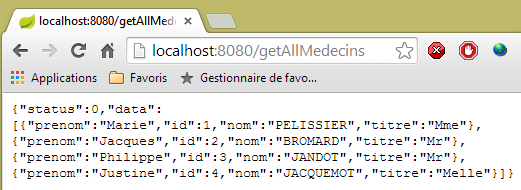 |

- line 39: the response {0,data} or {n,messages} is constructed. The first response contains the doctors in the [data] field. The second indicates an error that occurred on the server side. The server handled this error, generated an error code in [err] and a list of error messages in [data]. In both cases, it returns a 200 status code indicating that the request has been fully processed. This is why both cases are handled in the same function;
- line 41: the task is complete ([task.resolve]) and one of the two responses is returned:
- {err: 0, data: [med1, med2, ...]} where [medi] is an object representing a doctor (title, first name, last name),
- {err: n, messages: [msg1, msg2, ...]} where [msgi] is an error message and n is not equal to 0;
This code must be linked to how this response is retrieved in the controller's calling code:
// analyze the result of the previous call
promise.then(function (result) {
// result={err: 0, data: [med1, med2, ...]}
// result={err: n, messages: [msg1, msg2, ...]}
...
}
The response from [task.resolve(réponse)] is stored above in the variable [result].
- line 45: the [failure] function when the asynchronous task ends in failure. There are two possible cases:
- the server signals this failure by returning a code that is neither 2xx nor 3xx,
- Angular cancels the HTTP call. In this case, no call is made. There is an Angular exception but no HTTP error code returned by the server. This is the case, for example, if an invalid URL is provided that cannot be called;
- line 46: the response is displayed on the console;
- line 48: we recall that the server response has the following format:
{"data":"...","status":404,"config":{...},"statusText":"Not Found"}
Line 48: We retrieve the [status] attribute mentioned above;
- lines 50–70: based on the error code HTTP, we generate a new error code to hide the nature of the HTTP method from the calling codes. We can verify that in the controller using this method, there is nothing to suggest that there is a HTTP call within the method;
- line 51: the error [401] corresponds to a failed authentication (incorrect password, for example),
- line 55: the error [403] corresponds to an unauthorized call. The user authenticated correctly but does not have sufficient permissions to request the URL they requested. This will occur with user [user / user]. This user does exist in the database but does not have permission to use the application. Only user [admin / admin] has this permission;
- line 59: the error [404] corresponds to a URL not found. The error may have several causes:
- The user made a data entry error in the service's URL;
- the web service was not launched;
- the web service did not respond quickly enough (default timeout of one second);
- Line 63: Error code HTTP 0 does not exist. This is a case where Angular did not make the requested HTTP call because the URL entered by the user is invalid and cannot be called. We will subsequently encounter other cases where Angular is prevented from executing the requested HTTP call;
- line 72: the task is completed successfully (task.resolve) by returning a response of type {err, messages}, where the array [messages] consists solely of the message [response.statusText]. If Angular did not make the requested HTTP call, we will have an empty string;
Now that we have both a global and detailed view of the application, we can begin testing.
3.7.6.5. Application Testing - 1
Let’s start with valid inputs:
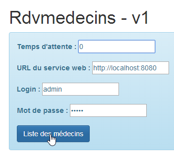
 |
- in [1], we enter 0 to avoid any waiting;
- In [2], we get an error message even though the inputs are correct. We haven’t covered the various error messages. The one displayed in [2] is a generic message associated with error 0, which corresponds to an Angular exception. Angular encountered a problem that prevented it from making a call HTTP. In such cases, you need to check the console logs Javascript. There are two ways to do this:
- enter [F12] in the Chrome browser;
- use the WebStorm console;
In the WebStorm console, we find various messages, including this one:
- line 1: Angular reports an error that we will come back to;
- line 2: the log for the [dao.getData] method. It contains some interesting information:
- [status] is 0, indicating that there was no call to HTTP. Consequently, [statusText] is empty,
- [url] is equal to [http://localhost:8080/getAllMedecins], which is correct;
- the HTTP header for the [Authorization":"Basic YWRtaW46YWRtaW4=] authentication is also correct;
So why didn’t it work? The key phrase in the logs is [No 'Access-Control-Allow-Origin' header is present]. To understand it, a lengthy explanation is needed. Let’s start by reviewing the general architecture of the client/server application:

- the HTML / CSS / JS pages of the Angular application come from the [1] server;
- in [2], the [dao] service makes a request to another server, the [2] server. Well, that is prohibited by the browser running the Angular application because it is a security vulnerability. The application can only query the server it came from, i.e., the [1] server;
In fact, it is inaccurate to say that the browser prevents the Angular application from querying the [2] server. It actually queries it to ask whether it allows a client that does not originate from its own domain to query it. This sharing technique is called Cross-Origin Resource Sharing (CORS). The [2] server grants permission by sending specific CORS headers. It is because our [2] server did not send these headers that the browser refused to make the HTTP call requested by the application.
Let’s now go into the details. Let’s examine the network traffic that occurred during the HTTP call. To do this, in the Chrome browser, we press [F12] to open the developer tools and select the [Network] tab to view the network traffic:
 |
- In [1], we select the [network] tab;
- In [2], we request the list of doctors;
We obtain the following information in the [network] tab:
 |
- in [1], the information sent to the server;
- in [2], the server’s response;
We can see in [1] that the browser sent a request HTTP [OPTIONS] for the requested URL. [OPTIONS] is one of the possible HTTP commands, along with the better-known [GET] and [POST]. It allows you to request information from a server, specifically regarding the HTTP options it supports, hence the command’s name. The server responds with [2]. To indicate that it accepts clients requests that are not within its domain, it must return a specific header called [Access-Control-Allow-Origin]. And it is because it did not return this header that Angular did not execute the requested HTTP call and returned the error:
XMLHttpRequest cannot load http://localhost:8080/getAllMedecins. No 'Access-Control-Allow-Origin' header is present on the requested resource. Origin 'http://localhost:63342' is therefore not allowed access.
We must therefore modify our server so that it sends the expected HTTP header.
3.7.6.6. Modifying the web server / JSON
We return to Eclipse. To preserve our progress, we duplicate the current version from the web server / JSON [rdvmedecins-webapi-v2] into [rdvmedecins-webapi-v3] [1]:
 |
We make an initial modification to [ApplicationModel], which is one of the web service configuration elements:
package rdvmedecins.web.models;
...
@Component
public class ApplicationModel implements IMetier {
// the [métier] layer
@Autowired
private IMetier métier;
// data from the [métier] layer
private List<Medecin> médecins;
private List<Client> clients;
private List<String> messages;
// configuration data
private boolean CORSneeded = true;
...
public boolean isCORSneeded() {
return CORSneeded;
}
}
- line 17: we create a boolean variable that indicates whether or not to accept clients requests from outside the server's domain;
- lines 21–23: the method for accessing this information;
Then we create a new Spring controller MVC [3]:
 |
The [RdvMedecinsCorsController] class is as follows:
package rdvmedecins.web.controllers;
import javax.servlet.http.HttpServletResponse;
import org.springframework.beans.factory.annotation.Autowired;
import org.springframework.stereotype.Controller;
import org.springframework.web.bind.annotation.RequestMapping;
import org.springframework.web.bind.annotation.RequestMethod;
import rdvmedecins.web.models.ApplicationModel;
@Controller
public class RdvMedecinsCorsController {
@Autowired
private ApplicationModel application;
// sending options to the customer
private void sendOptions(HttpServletResponse response) {
if (application.isCORSneeded()) {
// set header CORS
response.addHeader("Access-Control-Allow-Origin", "*");
}
}
// list of doctors
@RequestMapping(value = "/getAllMedecins", method = RequestMethod.OPTIONS)
public void getAllMedecins(HttpServletResponse response) {
sendOptions(response);
}
}
- lines 28–31: define a controller for URL and [/getAllMedecins] when requested with the command HTTP and [OPTIONS];
- line 29: the [getAllMedecins] method takes as a parameter the [HttpServletResponse] object, which will be sent to the client that made the request. This object is injected by Spring;
- line 30: the request is delegated to the private method in lines 19–25;
- lines 15–16: the [ApplicationModel] object is injected;
- lines 20–23: if the server is configured to accept clients requests from domains other than its own, then the HTTP header is sent:
Access-Control-Allow-Origin: *
which means that the server accepts clients requests from any domain (*).
We are now ready for further testing. We launch the new version from the web service and find that the problem remains. Nothing has changed. If we add a console output on line 30 above, it is never displayed, indicating that the [getAllMedecins] method on line 29 is never called.
After some research, we discover that Spring MVC handles the commands HTTP and [OPTIONS] itself using default processing. Therefore, it is always Spring that responds, and never the [getAllMedecins] method on line 29. This default behavior of Spring MVC can be changed. We introduce a new configuration class to configure the new behavior:
 |
The new configuration class [WebConfig] is as follows:
package rdvmedecins.web.config;
import org.springframework.boot.autoconfigure.EnableAutoConfiguration;
import org.springframework.context.annotation.Bean;
import org.springframework.web.servlet.DispatcherServlet;
import org.springframework.web.servlet.config.annotation.WebMvcConfigurerAdapter;
@Configuration
public class WebConfig extends WebMvcConfigurerAdapter {
// configuration dispatcherservlet for CORS headers
@Bean
public DispatcherServlet dispatcherServlet() {
DispatcherServlet servlet = new DispatcherServlet();
servlet.setDispatchOptionsRequest(true);
return servlet;
}
}
- line 8: the class is a Spring configuration class. It declares beans that will be placed in the Spring context;
- line 12: the [dispatcherServlet] bean is used to define the servlet that handles requests from clients. It is of type [DispatcherServlet]. This servlet is normally created by default. If we create it ourselves, we can then configure it;
- Line 14: We create an instance of type [DispatcherServlet];
- line 15: we instruct the servlet to forward the HTTP and [OPTIONS] commands to the application;
- line 16: we render the servlet configured in this way;
We still need to modify the [AppConfig] class:
package rdvmedecins.web.config;
import org.springframework.boot.autoconfigure.EnableAutoConfiguration;
import org.springframework.context.annotation.ComponentScan;
import org.springframework.context.annotation.Import;
import rdvmedecins.config.DomainAndPersistenceConfig;
@EnableAutoConfiguration
@ComponentScan(basePackages = { "rdvmedecins.web" })
@Import({ DomainAndPersistenceConfig.class, SecurityConfig.class, WebConfig.class })
public class AppConfig {
}
- Line 11: The new configuration class [WebConfig] is imported;
3.7.6.7. Application Testing - 2
We launch the new version from the web service / JSON and attempt to retrieve the list of doctors using our Angular client. We examine the network traffic in the [Network] tab:
 |
- In [1], we can see that the HTTP [Access-Control-Allow-Origin: *] header is now present in the server response. And yet it still doesn’t work. We examine the console logs in [2]. There we find the following log:
XMLHttpRequest cannot load http://localhost:8080/getAllMedecins. Request header field Authorization is not allowed by Access-Control-Allow-Headers
We see that the browser is waiting for a new header that would tell it we are authorized to send the authentication header:
This could be a good sign. Angular may have intended to send the command HTTP GET. But since this command is accompanied by an authentication header, it is asking whether the server accepts it.
We are modifying our web server / JSON to send this header. The [RdvMedecinsCorsController] class is updated as follows:
// sending options to the customer
private void sendOptions(HttpServletResponse response) {
if (application.isCORSneeded()) {
// set header CORS
response.addHeader("Access-Control-Allow-Origin", "*");
// header [Authorization] is authorized
response.addHeader("Access-Control-Allow-Headers", "Authorization");
}
- Lines 6–7 add the missing header.
We restart the server and request the list of doctors again using the Angular client:
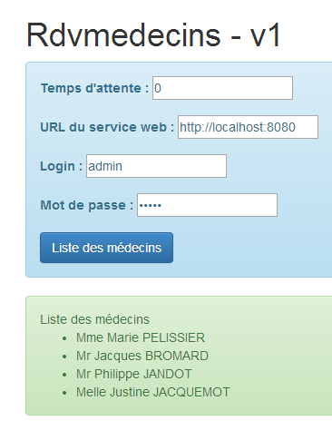 |
This time, it works. The console logs show the response received by the [dao.getData] method:
[dao] getData[/getAllMedecins] success réponse : {"data":{"status":0,"data":[{"id":1,"version":1,"titre":"Mme","nom":"PELISSIER","prenom":"Marie"},{"id":2,"version":1,"titre":"Mr","nom":"BROMARD","prenom":"Jacques"},{"id":3,"version":1,"titre":"Mr","nom":"JANDOT","prenom":"Philippe"},{"id":4,"version":1,"titre":"Melle","nom":"JACQUEMOT","prenom":"Justine"}]},"status":200,"config":{"method":"GET","transformRequest":[null],"transformResponse":[null],"timeout":1000,"url":"http://localhost:8080/getAllMedecins","headers":{"Accept":"application/json, text/plain, */*","Authorization":"Basic YWRtaW46YWRtaW4="}},"statusText":"OK"}
We can see that:
- the server returned an error code [status=200] with the message [statusText=OK]. This is why we are in the [success] function;
- the server returned a [data] object with two fields:
- [status]: (not to be confused with error code HTTP [status]). Here, [status=0] indicates that URL and [/getAllMedecins] were processed without error;
- [data]: which contains the list of doctors (JSON);
Let’s now look at some other interesting cases:
We make a mistake with the [login, password] credentials:
 |
We log in using the [user / user] identity, which does not have access to the application (only [admin] has access):
 |
This time, the error is no longer [Erreur d'authentification] but [Accès refusé].
3.7.7. Example 7: List of clients
We return to the previous application to now display the list of clients in a drop-down list of type [Bootstrap select]) (see section 3.6.6).
3.7.7.1. View V
The initial view will be as follows:
 |
To obtain the V view, we duplicate the [app-16.html] code into [app-17.html] and modify it as follows:
<div class="container" >
<h1>Rdvmedecins - v1</h1>
<!-- the waiting message -->
<div class="alert alert-warning" ng-show="waiting.visible" >
...
</div>
<!-- the request -->
<div class="alert alert-info" ng-hide="waiting.visible" >
...
<button class="btn btn-primary" ng-click="execute()">{{clients.title|translate}}</button>
</div>
<!-- the clients list -->
<div class="row" style="margin-top: 20px" ng-show="clients.show">
<div class="col-md-3">
<h2 translate="{{clients.title}}"></h2>
<select data-style="btn-primary" class="selectpicker">
<option ng-repeat="client in clients.data" value="{{client.id}}">
{{client.titre}} {{client.prenom}} {{client.nom}}
</option>
</select>
</div>
</div>
<!-- the error list -->
<div class="alert alert-danger" ng-show="errors.show">
...
</div>
</div>
....
<script type="text/javascript" src="rdvmedecins-05.js"></script>
- lines 5-7: the loading banner does not change;
- lines 10-13: the form does not change, except for the button label (line 12);
- lines 28-30: the error banner does not change;
- lines 16-25: clients is displayed in a drop-down list styled by the [Bootstrap-selectpicker] component (data-style and class attributes, line 19);
- line 20: the [ng-repeat] directive is used to generate the various options in the drop-down list. Note that the label of a option is of type [Mme Julienne Tatou] and that the value of theoption is of type [100], where 100 is the id identifier of the displayed client;
- Line 34: The code Javascript is migrated to a new file [rdvmedecins-05];
3.7.7.2. The C controller and the M model
The code Javascript from the file [rdvmedecins-05] is obtained by copying the file [rdvmedecins-04]:
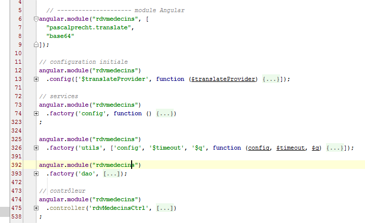
Almost nothing changes, except in the controller, which is now adapted to provide the list of clients:
angular.module("rdvmedecins")
.controller('rdvMedecinsCtrl', ['$scope', 'utils', 'config', 'dao', '$translate',
function ($scope, utils, config, dao, $translate) {
// ------------------- model initialization
// model
$scope.waiting = {text: config.msgWaiting, visible: false, cancel: cancel, time: undefined};
$scope.waitingTimeText = config.waitingTimeText;
$scope.server = {url: undefined, login: undefined, password: undefined};
$scope.clients = {title: config.listClients, show: false, model: {}};
$scope.errors = {show: false, model: {}};
$scope.urlServerLabel = config.urlServerLabel;
$scope.loginLabel = config.loginLabel;
$scope.passwordLabel = config.passwordLabel;
// asynchronous task
var task;
// execution action
$scope.execute = function () {
// the UI is updated
$scope.waiting.visible = true;
$scope.clients.show = false;
$scope.errors.show = false;
// simulated waiting
task = utils.waitForSomeTime($scope.waiting.time);
var promise = task.promise;
// waiting
promise = promise.then(function () {
// the list of clients is requested;
task = dao.getData($scope.server.url, $scope.server.login, $scope.server.password, config.urlSvrClients);
return task.promise;
});
// analyze the result of the previous call
promise.then(function (result) {
// result={err: 0, data: [client1, client2, ...]}
// result={err: n, messages: [msg1, msg2, ...]}
if (result.err == 0) {
// we put the acquired data into the model
$scope.clients.data = result.data;
// the UI is updated
$scope.clients.show = true;
$scope.waiting.visible = false;
// style the drop-down list
$('.selectpicker').selectpicker();
} else {
// there were errors in obtaining the list of clients
$scope.errors = { title: config.getClientsErrors, messages: utils.getErrors(result), show: true, model: {}};
// the UI is updated
$scope.waiting.visible = false;
}
});
};
// cancel wait
function cancel() {
// complete the task
task.reject();
// the UI is updated
$scope.waiting.visible = false;
$scope.clients.show = false;
$scope.errors.show = false;
}
}
])
;
- Very little has changed in the controller. It used to provide a list of doctors. It now provides a list of clients;
- line 9: [$scope.clients] will be the template for the clients banner in the V view;
- line 30: it is the URL [/getAllClients] that is now used;
- lines 35-36: the two response formats returned by the [dao.getData] method. We now have clients instead of doctors;
- line 44: a fairly rare instruction in Angular code. We are directly manipulating the DOM (Document Object Model). Here we want to apply the [selectpicker] method (part of [bootstrap-select.min.js]) to the elements of DOM that have the class [selectpicker] [$('.selectpicker')]. There is only one: the dropdown list:
<select data-style="btn-primary" class="selectpicker" select-enable="">
....
</select>
In section 3.6.6, it was shown that this styled the drop-down list as follows:
 | 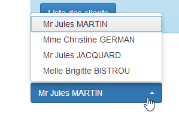 |
As was done for doctors, we also need to modify the web service.
3.7.7.3. Modification of the web service - 1
 |
The [RdvMedecinsController] class is enhanced with a new method:
package rdvmedecins.web.controllers;
...
@Controller
public class RdvMedecinsCorsController {
@Autowired
private ApplicationModel application;
// sending options to the customer
private void sendOptions(HttpServletResponse response) {
if (application.isCORSneeded()) {
// set header CORS
response.addHeader("Access-Control-Allow-Origin", "*");
// header [Authorization] is authorized
response.addHeader("Access-Control-Allow-Headers", "Authorization");
}
}
// list of doctors
@RequestMapping(value = "/getAllMedecins", method = RequestMethod.OPTIONS)
public void getAllMedecins(HttpServletResponse response) {
sendOptions(response);
}
// clients list
@RequestMapping(value = "/getAllClients", method = RequestMethod.OPTIONS)
public void getAllClients(HttpServletResponse response) {
sendOptions(response);
}
}
- lines 29–32: the [getAllClients] method will handle the HTTP and [OPTIONS] requests sent to it by the browser;
3.7.7.4. Application Testing – 1
We are now ready to test. We start the web server and then enter valid values into the Angular form. We get the following response:

This error message is displayed when Angular was unable to make the requested HTTP request. We must then look for the causes in the console logs. There we find the following message:
XMLHttpRequest cannot load http://localhost:8080/getAllClients. No 'Access-Control-Allow-Origin' header is present on the requested resource. Origin 'http://localhost:63342' is therefore not allowed access.
A problem we thought was resolved. Let’s now examine the network traffic that occurred:

We see that operation [getAllClients] with the method HTTP [OPTIONS]completed successfully, but the operation [getAllClients] with the method HTTP [GET] was canceled. The response to the request [OPTIONS] was as follows:
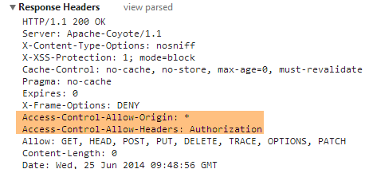
The headers for HTTP from CORS are present. Let’s now examine the exchanges for HTTP during GET:

The HTTP request appears to be correct. In particular, we can see the authentication header.
In addition to the previous error message, the following message appears in the console logs:
[dao] getData[/getAllClients] error réponse : {"data":"","status":0,"config":{"method":"GET","transformRequest":[null],"transformResponse":[null],"timeout":1000,"url":"http://localhost:8080/getAllClients","headers":{"Accept":"application/json, text/plain, */*","Authorization":"Basic YWRtaW46YWRtaW4="}},"statusText":""}
This is the log that the [dao.getData] method systematically generates upon receiving the response to its HTTP request. Two things stand out:
- [status=0]: this means that Angular canceled the request HTTP;
- [method=GET]: and it is the request GET that was canceled;
When combined with the first message, this means that for the GET request as well, Angular is expecting headers for CORS. However, currently, our web service only sends them for the HTTP and [OPTIONS] requests. It is very strange to encounter this error now and not for the list of doctors. I have no explanation.
We therefore need to modify the web service again.
3.7.7.5. Web service modification – 2
 |
The methods [GET] and [POST] are handled in the [RdvMedecinsController] class. We need to modify it so that these methods send the CORS headers. We do this as follows:
@RestController
public class RdvMedecinsController {
@Autowired
private ApplicationModel application;
@Autowired
private RdvMedecinsCorsController rdvMedecinsCorsController;
...
// clients list
@RequestMapping(value = "/getAllClients", method = RequestMethod.GET)
public Reponse getAllClients(HttpServletResponse response) {
// headers CORS
rdvMedecinsCorsController.getAllClients(response);
// application status
if (messages != null) {
return new Reponse(-1, messages);
}
// clients list
try {
return new Reponse(0, application.getAllClients());
} catch (Exception e) {
return new Reponse(1, Static.getErreursForException(e));
}
}
...
- line 8: we want to reuse the code we placed in the [RdvMedecinsCorsController] controller. So we inject it here;
- line 14: the method that handles the request [GET /getAllClients]. We make two changes:
- line 14: we inject the [HttpServletResponse] object into the method parameters,
- line 16: we use the methods of the [RdvMedecinsCorsController] class to populate this object with the CORS headers;
3.7.7.6. Application Testing – 2
We launch the new version web service and request the list of clients again. We receive the following response:
 |
- In [1], we do receive a response, but it is empty ([2]);
- in [3]: the network exchanges went smoothly;
In the console logs, the [dao.getData] method displayed the response it received:
[dao] getData[/getAllClients] success réponse : {"data":{"status":0,"data":[{"id":1,"version":1,"titre":"Mr","nom":"MARTIN","prenom":"Jules"},{"id":2,"version":1,"titre":"Mme","nom":"GERMAN","prenom":"Christine"},{"id":3,"version":1,"titre":"Mr","nom":"JACQUARD","prenom":"Jules"},{"id":4,"version":1,"titre":"Melle","nom":"BISTROU","prenom":"Brigitte"}]},"status":200,"config":{"method":"GET","transformRequest":[null],"transformResponse":[null],"timeout":1000,"url":"http://localhost:8080/getAllClients","headers":{"Accept":"application/json, text/plain, */*","Authorization":"Basic YWRtaW46YWRtaW4="}},"statusText":"OK"}
So the method did indeed receive the list of clients. Once the code has been verified, we begin to suspect the following instruction, which we don’t fully understand:
// style the drop-down list
$('.selectpicker').selectpicker();
We comment out line 2 and try again. We then get the following response:
 |
We have thus pinpointed the problem. It is the application of the [selectpicker] method to the dropdown list that is causing the issue. When we look at the source code of the page with the error, we see the following:
 |
- we discover that in [1], the drop-down list is indeed present with its items but is not displayed [style='display:none'];
- in [2], the [bootstrap select] button is displayed. The dropdown list items should appear in the <ul role='menu'> list. They are not there, so we have an empty list. It seems that when the [selectpicker] method was applied to the dropdown list, its content was empty at that time;
While searching the web for a solution, we found this one. We replace the code:
// style the drop-down list
$('.selectpicker').selectpicker();
with the following:
// style the drop-down list
$timeout(function(){
$('.selectpicker').selectpicker();
});
The style [bootstrap-select] is applied via a function [$timeout]. We have already encountered this function, which allows a function to be executed after a certain delay. Here, the absence of a delay is equivalent to a zero delay. The preceding lines place an event in the browser’s event queue. When the processing of the current event (click on the [Liste des clients] button) is complete, the V view will be displayed. Immediately afterward, the browser will check its event queue. Because of its zero delay, the [$timeout] event will be at the top of the list and processed. The [bootstrap-select] style is then applied to a populated drop-down list. Let’s see the result:
 |
If we look again at the source code of the displayed page, we see the following:
 |
The [bootstrap-select] button, which was previously empty, now contains the list of clients.
3.7.7.7. Using a directive
In the C controller of view V, we encountered the following code:
// style the drop-down list
$('.selectpicker').selectpicker();
We are manipulating a DOM object. Many Angular developers are averse to manipulating DOM in controller code. For them, this should be done in a directive. An Angular directive can be viewed as an extension of the HTML language. This makes it possible to create new HTML elements or attributes. Let’s look at a first example:
We create the following JS [selectEnable] file:
angular.module("rdvmedecins").directive('selectEnable', ['$timeout', function ($timeout) {
return {
link: function (scope, element, attrs) {
$timeout(function () {
var selectpicker = $('.selectpicker');
selectpicker.selectpicker();
});
}
};
}]);
- The directive follows the controller syntax we are now familiar with:
angular.module("rdvmedecins").directive('selectEnable', ['$timeout', function ($timeout)
The directive belongs to module [rvmedecins]. It is a function that accepts two parameters:
- (continued)
- the first is the name of the [selectEnable] directive;
- the second is an array ['obj1','obj2',..., function(obj1, obj2,...)] where the [obj] are the objects to be injected into the function. Here, the only object injected is the predefined object [$timeout];
- the function [directive] returns an object that can have various attributes. Here, the only attribute is the attribute [link] (line 3). Its value here is a function that takes three parameters:
- scope: the view template in which the directive is used;
- element: the view element, the directive’s target;
- attrs: the attributes of this element;
Let’s look at an example. The [selectEnable] directive could be used in the following context:
In the example above, the [select-enable] attribute applies the [selectEnable] directive to the HTML element <div>. A [doSomething] directive can be applied to any HTML element by adding the [do-something] attribute to it. Note the change in notation between the directive name and its associated attribute. The notation changes from [camelCase] to [camel-case].
The [selectEnable] directive could also be used as follows:
Here, the [doSomething] directive is applied in the form of a HTML <do-something> tag.
Let’s return to the code
and the three parameters of the [link] function in the directive, [scope, element, attrs]:
- scope: is the view template in which the <div> is located;
- element: is the <div> itself;
- attrs: is the array of attributes for the <div>. These can be used to pass information to the directive. Above, we would write attrs['selectEnable'] to obtain the information [data]. Note the change in notation to [selectEnable] to refer to the attribute [select-enable];
Let’s return to the directive’s code:
angular.module("rdvmedecins").directive('selectEnable', ['$timeout', function ($timeout) {
return {
link: function (scope, element, attrs) {
$timeout(function () {
$('.selectpicker').selectpicker();
});
}
};
}]);
- Lines 14–16: This is the code we previously placed in the controller. It is executed when the [select-enable] directive (as an element or attribute) is encountered while rendering the V view.
To implement this directive, we copy the [app-17.html] file into [app-17B.html] and modify it as follows:
<select data-style="btn-primary" class="selectpicker" select-enable="">
<option ng-repeat="client in clients.data" value="{{client.id}}">
{{client.titre}} {{client.prenom}} {{client.nom}}
</option>
</select>
- Line 1: We apply the [selectEnable] directive to the HTML [select] element. Since there is no information to pass to the directive, we simply write [select-enable=""];
We also modify the controller by duplicating the file JS from [rdvmedecins-05.js] into [rdvmedecins-05B.js], and we reference the new file JS in the directive file [app-17B.html] and the [selectEnable.js] directive file. Do not forget this last point. If the directive file is missing, the [select-enable=""] attribute will not be handled, but Angular will not report any errors.
<script type="text/javascript" src="rdvmedecins-05B.js"></script>
<script type="text/javascript" src="selectEnable.js"></script>
In the JS [rdvmedecins-05B.js] file, we remove the following lines from the controller:
// style the drop-down list
$timeout(function(){
$('.selectpicker').selectpicker();
});
as this operation is now handled by the directive.
3.7.7.8. Application testing – 3
When testing the new application [app-17B.html], the following result is obtained:
 |
- In [1], an empty list is returned.
The console logs display the following:
- line 1: initialization of the [dao] service;
- line 2: upon initial display of view V, the [selectEnable] directive is executed;
- line 3: this line appears when the user clicks the [Liste des clients] button. We can see that the [selectEnable] directive is not executed a second time. Ultimately, it was executed when the clients list was empty, so we have an empty drop-down list;
In other words, the operation:
$('.selectpicker').selectpicker();
did not occur at the right time. We can try to resolve the issue in various ways. After numerous unsuccessful tests, we realize that the above operation must occur only once and only when the dropdown list has been populated. To achieve this result, we rewrite the <select> tag as follows:
<select data-style="btn-primary" class="selectpicker" select-enable="" ng-if="clients.data">
<option ng-repeat="client in clients.data" value="{{client.id}}">
{{client.titre}} {{client.prenom}} {{client.nom}}
</option>
</select>
Line 1: The <select> tag is generated only if [clients.data] exists. This is not the case when the V view is initially displayed. Therefore, the <select> tag will not be generated, and the [selectEnable] directive will not be evaluated. When the user clicks the [Liste des clients] button, [clients.data] will have a new value in template M. Because template M has changed, the <select> tag will be re-evaluated and generated here. The [selectEnable] directive will therefore be evaluated as well. When it is evaluated, lines 2–4 of the <select> tag have not yet been evaluated. We therefore have an empty list of clients. If we write the [selectEnable] directive as follows:
angular.module("rdvmedecins").directive('selectEnable', ['$timeout', 'utils', function ($timeout, utils) {
return {
link: function (scope, element, attrs) {
utils.debug("directive selectEnable");
$('.selectpicker').selectpicker();
}
}
}]);
Line 5 will be executed with an empty list, resulting in an empty dropdown list being displayed. You should therefore write:
angular.module("rdvmedecins").directive('selectEnable', ['$timeout', 'utils', function ($timeout, utils) {
return {
link: function (scope, element, attrs) {
utils.debug("directive selectEnable");
$timeout(function () {
$('.selectpicker').selectpicker();
})
}
}
}]);
to get the expected result. Because of the [$timeout] in line 5, line 6 will only be executed after the V view has been fully rendered, i.e., at a point when the <select> tag contains all its elements.
3.7.8. Example 8: A doctor's agenda
We now present an application that displays a doctor's agenda.
3.7.8.1. The application’s V view
We will present the following form:
 |
- in [1], we request the agenda of Ms. PELISSIER [2], on June 25, 2014 [3];
We obtain the following result: [4]:
 |
We will examine the two views separately.
3.7.8.2. The form
We duplicate the file [app-17.html] into [app-18.html], then modify the code as follows:
<div class="container">
<h1>Rdvmedecins - v1</h1>
<!-- the waiting message -->
<div class="alert alert-warning" ng-show="waiting.visible">
...
</div>
<!-- the request -->
<div class="alert alert-info" ng-hide="waiting.visible">
<div class="row" style="margin-bottom: 20px">
<div class="col-md-3">
<h2 translate="{{medecins.title}}"></h2>
<select data-style="btn-primary" class="selectpicker">
<option ng-repeat="medecin in medecins.data" value="{{medecin.id}}">
{{medecin.titre}} {{medecin.prenom}} {{medecin.nom}}
</option>
</select>
</div>
<div class="col-md-3">
<h2 translate="{{calendar.title}}"></h2>
<div style="display:inline-block; min-height:290px;">
<datepicker ng-model="calendar.jour" min-date="calendar.minDate" show-weeks="true"
class="well well-sm"></datepicker>
</div>
</div>
</div>
<button class="btn btn-primary" ng-click="execute()">{{agenda.title|translate}}</button>
</div>
<!-- the error list -->
<div class="alert alert-danger" ng-show="errors.show">
...
</div>
<!-- the agenda -->
<div id="agenda" ng-show="agenda.show">
...
</div>
</div>
...
<script type="text/javascript" src="rdvmedecins-06.js"></script>
- lines 5-7: the waiting message does not change;
- lines 12-19: the list of doctors of type [bootstrap select];
- lines 20-26: the calendar of type [ui-bootstrap] that we have already presented. Note that the selected day is placed in the model of type [calendar.jour] (ng-model attribute);
- line 28: the button that requests agenda;
- lines 32–34: the list of errors remains unchanged;
- lines 37–39: the agenda, which we will cover later;
- line 42: the JS code is transferred to the [rdvmedecins-06.js] file by copying the [rdvmedecins-05.js] file;
3.7.8.3. The C controller
The application code JS becomes the following:

Only the [utils] service and the [rdvMedecinsCtrl] controller will be affected by the changes.
The [rdvMedecinsCtrl] controller becomes as follows:
// contrôleur
angular.module("rdvmedecins")
.controller('rdvMedecinsCtrl', ['$scope', 'utils', 'config', 'dao', '$translate', '$timeout', '$filter', '$locale',
function ($scope, utils, config, dao, $translate, $timeout, $filter, $locale) {
// ------------------- model initialization
// modèle
$scope.waiting = {text: config.msgWaiting, visible: false, cancel: cancel, time: 3000};
$scope.server = {url: 'http://localhost:8080', login: 'admin', password: 'admin'};
$scope.errors = {show: false, model: {}};
$scope.medecins = {
data: [
{id: 1, version: 1, titre: "Mme", nom: "PELISSIER", prenom: "Marie"},
{id: 2, version: 1, titre: "Mr", nom: "BROMARD", prenom: "Jacques"},
{id: 3, version: 1, titre: "Mr", nom: "JANDOT", prenom: "Philippe"},
{id: 4, version: 1, titre: "Melle", nom: "JACQUEMOT", prenom: "Justine"}
],
title: config.listMedecins};
$scope.agenda = {title: config.getAgendaTitle, data: undefined, show: false};
$scope.calendar = {title: config.getCalendarTitle, minDate: new Date(), jour: new Date()};
// on style la liste déroulante
$timeout(function () {
$('.selectpicker').selectpicker();
});
// locale française pour le calendrier
angular.copy(config.locales['fr'], $locale);
...
}
])
;
- line 7: set a 3-second timeout before making the call HTTP;
- line 8: the elements required for the connection are hard-coded HTTP;
- lines 10–17: the list of doctors is hard-coded;
- line 18: the [agenda] template configures the display of agenda in the view;
- line 19: the [calendar] model configures the display of the calendar in the view. We set the minimum date [minDate] to today and the current date to today as well;
- lines 21–23: the drop-down list is styled using the method seen previously;
- line 25: the application locale is set to 'fr'. By default, it is 'en';
The method executed when the agenda request is made is as follows:
// execution action
$scope.execute = function () {
// form info
var idMedecin = $('.selectpicker').selectpicker('val');
// check
utils.debug("[homeCtrl] idMedecin", idMedecin);
utils.debug("[homeCtrl] jour", $scope.calendar.jour);
// update to yyyy-MM-dd format
var formattedJour = $filter('date')($scope.calendar.jour, 'yyyy-MM-dd');
// view update
$scope.waiting.visible = true;
$scope.errors.show = false;
$scope.agenda.show = false;
...
};
- Line 4: We retrieve the [value] attribute of the selected doctor. Here, we again use the [selectpicker] method, which comes from the [bootstrap-select.min.js] file. Remember the format of the dropdown list options:
<option ng-repeat="medecin in medecins.data" value="{{medecin.id}}">
{{medecin.titre}} {{medecin.prenom}} {{medecin.nom}}
The value (value attribute) of option is therefore the doctor’s ID, [id].
- line 11: we convert the date selected by the user to the [aaaa-mm-jj] format, which is the date format expected by the web server;
- lines 13–15: when the [execute] method is complete, the loading banner will be displayed and everything else hidden;
The code continues as follows:
// simulated waiting
var task = utils.waitForSomeTime($scope.waiting.time);
// the doctor's agenda is requested
var promise = task.promise.then(function () {
// the URL service path
var path = config.urlSvrAgenda + "/" + idMedecin + "/" + formattedJour;
// the agenda is requested
task = dao.getData($scope.server.url, $scope.server.login, $scope.server.password, path);
// we return the promise of task completion
return task.promise;
});
// analyze the result of the call to the [dao] service
promise.then(function (result) {
// end of wait
$scope.waiting.visible = false;
// mistake?
if (result.err == 0) {
// we prepare the agenda model
$scope.agenda.data = result.data;
$scope.agenda.show = true;
// timetable display formatting
angular.forEach($scope.agenda.data.creneauxMedecin, function (creneauMedecin) {
creneauMedecin.creneau.text = utils.getTextForCreneau(creneauMedecin.creneau);
});
// we create an evt to style the table after the view is displayed
$timeout(function () {
$("#creneaux").footable();
});
} else {
// there were errors in obtaining the agenda
$scope.errors = {
title: config.getAgendaErrors,
messages: utils.getErrors(result),
show: true
};
}
- line 2: the asynchronous task that waits for 3 seconds;
- lines 5–10: the code that will be executed when this wait is complete;
- line 6: we construct the URL query [/getAgendaMedecinJour/1/2014-06-25];
- line 8: URL is queried. An asynchronous task starts;
- line 10: the promise for this asynchronous task is resolved;
- lines 14–38: the code that will be executed once the HTTP call has returned its response;
- line 13: [result] is the response sent by the [dao.getData] method. Here, it is important to remember the format of the web server’s response:
 |
The parameter [result.data] on line 19 is the attribute [data] [1] mentioned above. This attribute, in turn, contains the [creneauxMedecin] [2] attribute mentioned above. This is an array of time slots, each containing two pieces of information:
- [rv]: the JSON form of an appointment or [null] if no appointment has been scheduled for that time slot;
- [hDeb, mDeb, hFin, mFin]: the time information for the time slot;
Let’s return to the controller’s code:
- line 15: the wait is over;
- line 19: the [$scope.agenda] template is populated, which controls the display of the agenda;
- line 20: agenda is made visible;
- lines 22–24: we iterate through each of the C elements in the [creneauxMedecin] array we just mentioned;
- line 23: each C element has a [creneau] attribute, which is the time slot. This is enhanced with a [text] attribute, which will be the text representation of the time slot in the form [10h20:10h40];
- lines 26–28: we make the table HTML, used to display the time slots from agenda, responsive. We covered this concept in section 3.6.7;
 |
- line 27: to make the table responsive, we must apply the [footable] method to it. Here we encounter the same difficulty as with the [bootstrap-select] component. If we simply write line 17, we see that the table is not responsive. We resolve this issue in the same way using the [$timeout] function (line 26);
- lines 31–34: the case where the HTTP call failed. Error messages are then displayed;
3.7.8.4. Display of agenda
We now return to the code for agenda in the [app-18.html] file. It is as follows:
<!-- the agenda -->
<div id="agenda" ng-show="agenda.show">
<!-- case of a doctor without consultation slots -->
<h4 class="alert alert-danger" ng-if="agenda.data.creneauxMedecin.length==0"
translate="agenda_medecinsanscreneaux"></h4>
<!-- agenda of doctor -->
<div class="row tab-content alert alert-warning" ng-if="agenda.data.creneauxMedecin.length!=0">
<div class="tab-pane active col-md-6">
<table creneaux-table id="creneaux" class="table">
<thead>
<tr>
<th data-toggle="true">
<span translate="agenda_creneauhoraire"></span>
</th>
<th>
<span translate="agenda_client">Client</span>
</th>
<th data-hide="phone">
<span translate="agenda_action">Action</span>
</th>
</tr>
</thead>
<tbody>
<tr ng-repeat="creneauMedecin in agenda.data.creneauxMedecin">
<td>
<span
ng-class="! creneauMedecin.rv ? 'status-metro status-active' : 'status-metro status-suspended'">
{{creneauMedecin.creneau.text}}
</span>
</td>
<td>
<span>{{creneauMedecin.rv.client.titre}} {{creneauMedecin.rv.client.prenom}} {{creneauMedecin.rv.client.nom}}</span>
</td>
<td>
<a href="" ng-if="!creneauMedecin.rv" translate="agenda_reserver" class="status-metro status-active">
</a>
<a href="" ng-if="creneauMedecin.rv" translate="agenda_supprimer" class="status-metro status-suspended">
</a>
</td>
</tr>
</tbody>
</table>
</div>
</div>
</div>
- lines 4-5: Recall that [agenda.data] is the agenda, and that [agenda.data.creneauxMedecin] is an array of objects of type [creneauMedecin]. Each element of the latter type has a [creneauMedecin.creneau] attribute, which is a time slot. Each time slot has two elements of interest to us:
- [creneauMedecin.creneau.rv], which is the potential RV (rv!=null) taken from the time slot;
- [creneauMedecin.creneau.text], which is the text [début:fin] for the time slot;
- Line 4: displays a special message if the doctor has no time slots. This is unlikely, but it turns out that our database is incomplete and this scenario does occur. Whether or not the message HTML is generated is controlled by the directive [ng-if];

The directive [ng-if] differs from the directives [ng-show, ng-hide]. The latter simply hide a field present in the document. If [ng-if='false'], then the field is removed from the document. We have used it here for illustration purposes;
- line 9: the [id='creneaux'] attribute is important. It is used in the following instruction:
$("#creneaux").footable();
- lines 10–22: display the headers of the [1] table;
- lines 23–45: display the contents of the [2] table;
 |
- line 24: loops through the [agenda.data.creneauxMedecin] table;
- lines 26–29: write the text [3]. Use the [ng-class] directive, which will generate the [class] attribute for the element. Here, if we have [creneauMedecin.rv==null], this means the time slot is available, and we apply a green background to the text. Otherwise, we apply a red background;
- line 32: we write the name of the customer for whom RV or [4] was selected. If [rv==null], this information does not exist, but Angular handles this case correctly and does not report an error;
- lines 34–39: display one of the two buttons, [Réserver] or [Supprimer]. Whether or not an appointment exists determines which button is selected;
3.7.8.5. Modifying the Web Server
As in the previous examples, the web server must be modified so that URL and [/getAgendaMedecinJour] send the CORS headers:
|
In the [RdvMedecinsCorsController] class, add a new method:
// agenda of doctor
@RequestMapping(value = "/getAgendaMedecinJour/{idMedecin}/{jour}", method = RequestMethod.OPTIONS)
public void getAgendaMedecinJour(HttpServletResponse response) {
sendOptions(response);
}
This method will send the CORS headers for the HTTP and [OPTIONS] requests. We must do the same for the HTTP and [GET] requests in the [RdvMedecinsController] class:
@RequestMapping(value = "/getAgendaMedecinJour/{idMedecin}/{jour}", method = RequestMethod.GET)
public Reponse getAgendaMedecinJour(@PathVariable("idMedecin") long idMedecin, @PathVariable("jour") String jour, HttpServletResponse response) {
// headers CORS
rdvMedecinsCorsController.getAgendaMedecinJour(response);
...
}
3.7.8.6. Using Directives
As we did previously, we will move the processing of DOM into directives. We have two instances of DOM processing:
- when the view is first displayed:
// style the drop-down list
$timeout(function () {
$('.selectpicker').selectpicker();
});
- When agenda is displayed:
// we create an evt to style the table after the view is displayed
$timeout(function () {
$("#creneaux").footable();
});
For the first case, we will use the [selectEnable] directive already presented. For the second case, we create the [footable] directive in the following JS [footable.js] file:
angular.module("rdvmedecins").directive('footable', ['$timeout', 'utils', function ($timeout, utils) {
return {
link: function (scope, element, attrs) {
utils.debug("directive footable");
$timeout(function () {
$("#creneaux").footable();
})
}
}
}]);
We are therefore using the same technique as for the [selectEnable] directive.
The code HTML [app-18.html] is duplicated in [app-18B.html]. Then we modify it as follows:
<select data-style="btn-primary" class="selectpicker" select-enable="">
<option ng-repeat="medecin in medecins.data" value="{{medecin.id}}">
{{medecin.titre}} {{medecin.prenom}} {{medecin.nom}}
</option>
</select>
- line 1: we apply the [selectEnable] directive (via the [select-enable] attribute) to the <select> tag for doctors;
<div class="row tab-content alert alert-warning" ng-if="agenda.data.creneauxMedecin.length!=0">
<div class="tab-pane active col-md-6">
<table id="creneaux" class="table" footable="">
<thead>
<tr>
- line 3: the [footable] directive (via the [footable] attribute) is applied to the HTML table of the agenda;
<script type="text/javascript" src="rdvmedecins-06B.js"></script>
<!-- directives -->
<script type="text/javascript" src="selectEnable.js"></script>
<script type="text/javascript" src="footable.js"></script>
- lines 3-4: the JS files are referenced in both directives;
- line 1: the code JS from [app-18B.html] is the code JS from [app-18.html] duplicated in the file [rdvmedecins-06B.js];
The file [rdvmedecins-06B.js] is identical to the file [rdvmedecins-06.js] except for two details. The lines handling DOM are removed:
// style the drop-down list
$timeout(function () {
$('.selectpicker').selectpicker();
});
// we create an evt to style the table after the view is displayed
$timeout(function () {
$("#creneaux").footable();
});
Once this is done, running the [app-18B.html] application yields the same results as running [app-18.html].
3.7.9. Example 9: Creating and Canceling Reservations
We now present an application that allows you to create and cancel reservations.
3.7.9.1. View V of the application
We will present the following form:
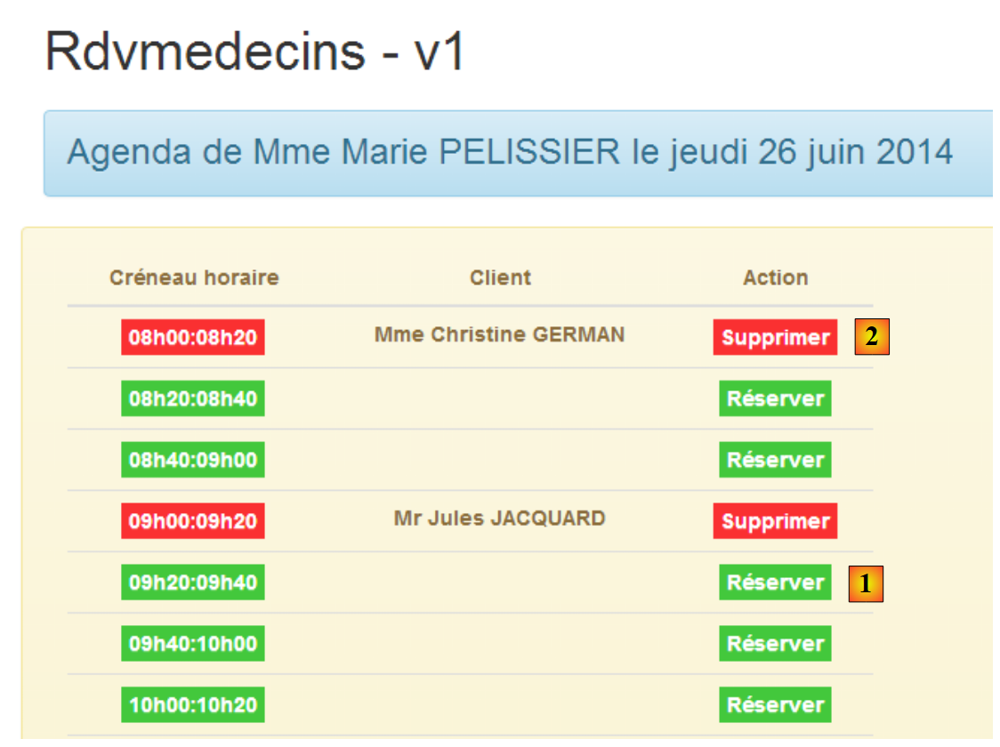 |
- In [1], you can make a reservation. The reservation will be made for a random customer;
- in [2], you can delete the reservations you have made;
We duplicate the file [app-18.html] into [app-19.html], then modify the code as follows:
<div class="container">
<h1>Rdvmedecins - v1</h1>
<!-- the waiting message -->
<div class="alert alert-warning" ng-show="waiting.visible">
...
</div>
<!-- the error list -->
<div class="alert alert-danger" ng-show="errors.show">
...
</div>
<!-- the agenda -->
<div id="agenda" ng-show="agenda.show">
..
<!-- agenda of doctor -->
<div class="row tab-content alert alert-warning" ng-if="agenda.data.creneauxMedecin.length!=0">
<div class="tab-pane active col-md-6">
<table id="creneaux" class="table" footable="">
...
<tbody>
<tr ng-repeat="creneauMedecin in agenda.data.creneauxMedecin">
...
<td>
<a href="" ng-if="!creneauMedecin.rv" translate="agenda_reserver" class="status-metro status-active" ng-click="reserver(creneauMedecin.creneau.id)">
</a>
<a href="" ng-if="creneauMedecin.rv" translate="agenda_supprimer" class="status-metro status-suspended" ng-click="supprimer(creneauMedecin.rv.id)">
</a>
</td>
</tr>
</tbody>
</table>
</div>
</div>
</div>
</div>
....
<script type="text/javascript" src="rdvmedecins-07.js"></script>
<script type="text/javascript" src="footable.js"></script>
- lines 5-7: the waiting message is the same as in the previous version;
- lines 10-12: the error message is the same as that of the previous version;
- lines 15-36: agenda is the same as the previous version, with two minor differences:
- line 26: clicking the [réserver] button (ng-click attribute) is handled by the [reserver] method of the M model in the V view. It is passed the reservation time slot number;
- line 26: clicking the [supprimer] button is handled by the [reserver] method of the M model in the V view. It is passed the ID of the appointment to be deleted;
- line 39: the code JS that manages the application is in the file [rdvmedecins-07.js];
- line 40: the code JS from the directive [footable] applied on line 20;
3.7.9.2. Controller C
The code JS from [rdvmedecins-07.js] is first obtained by copying the file [rdvmedecins-06.js]. It is then modified. We still have the usual large blocks of code. The modifications are mainly made in the controller:
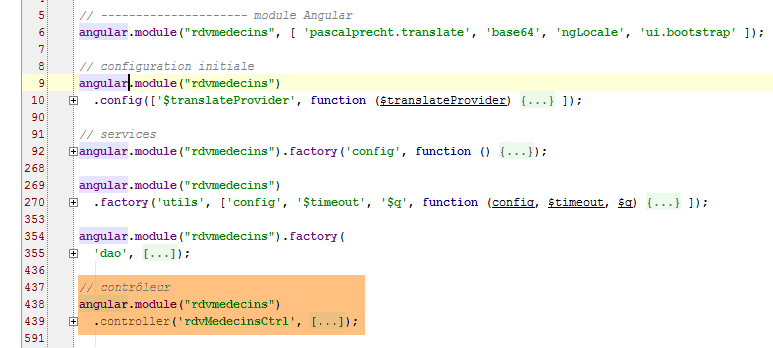
We will describe the C controller for view V in several steps.
3.7.9.3. Initialization of the C controller
The controller initialization code is as follows:
angular.module("rdvmedecins")
.controller('rdvMedecinsCtrl', ['$scope', 'utils', 'config', 'dao', '$translate', '$timeout', '$filter', '$locale',
function ($scope, utils, config, dao, $translate, $timeout, $filter, $locale) {
// ------------------- model initialization
// model
$scope.waiting = {text: config.msgWaiting, visible: false, cancel: cancel, time: 3000};
$scope.server = {url: 'http://localhost:8080', login: 'admin', password: 'admin'};
$scope.errors = {show: false, model: {}};
$scope.medecins = {
data: [
{id: 1, version: 1, titre: "Mme", nom: "PELISSIER", prenom: "Marie"},
{id: 2, version: 1, titre: "Mr", nom: "BROMARD", prenom: "Jacques"},
{id: 3, version: 1, titre: "Mr", nom: "JANDOT", prenom: "Philippe"},
{id: 4, version: 1, titre: "Melle", nom: "JACQUEMOT", prenom: "Justine"}
],
title: config.listMedecins
};
var médecin = $scope.medecins.data[0];
var clients = [
{id: 1, version: 1, titre: "Mr", nom: "MARTIN", prenom: "Jules"},
{id: 2, version: 1, titre: "Mme", nom: "GERMAN", prenom: "Christine"},
{id: 3, version: 1, titre: "Mr", nom: "JACQUARD", prenom: "Maurice"},
{id: 4, version: 1, titre: "Melle", nom: "BISTROU", prenom: "Brigitte"}
];
// for the date
angular.copy(config.locales['fr'], $locale);
var today = new Date();
var formattedDay = $filter('date')(today, 'yyyy-MM-dd');
var fullDay = $filter('date')(today, 'fullDate');
$scope.agenda = {title: config.agendaTitle, data: undefined, show: false, model: {titre: médecin.titre, prenom: médecin.prenom, nom: médecin.nom, jour: fullDay}};
// ---------------------------------------------------------------- agenda initial
// the global asynchronous task
var task;
// the agenda is requested
getAgenda();
// ------------------------------------------------------------------ réservation
$scope.reserver = function (creneauId) {
....
};
// ------------------------------------------------------------ suppression RV
$scope.supprimer = function (idRv) {
...
};
// obtaining the agenda
function getAgenda() {
...
}
// cancel wait
function cancel() {
...
}
} ]);
- line 6: configuration of the wait message. By default, we will wait 3 seconds before making a HTTP call;
- line 7: information required for HTTP calls;
- line 8: error message configuration;
- lines 9–17: hard-coded doctors;
- line 18: a specific doctor. Reservations will be made for this doctor’s time slots;
- lines 19-24: hard-coded clients values;
- line 26: we want to handle French dates;
- line 27: appointments will be made for today's date;
- line 28: the web booking service expects dates in the 'yyyy-mm-dd' format;
- line 29: today's date in the form [jeudi 26 juin 2014];
- Line 30: Configuration of agenda. The [model] attribute carries the parameters of the internationalized message to be displayed:
agenda_title: "Agenda de {{titre}} {{prenom}} {{nom}} le {{jour}}"
- line 35: the global variable [task] represents the asynchronous task currently being executed at a given moment;
- line 37: the initial agenda is requested;
That is all that is done during the initial page load. If everything goes well, the view displays the agenda for Ms. PELISSIER's day.

3.7.9.4. Obtaining the agenda
The agenda is obtained using the following [getAgenda] method:
// obtaining the agenda
function getAgenda() {
// the URL service path
var path = config.urlSvrAgenda + "/" + médecin.id + "/" + formattedDay;
// the agenda is requested
task = dao.getData($scope.server.url, $scope.server.login, $scope.server.password, path);
// waiting msg
$scope.waiting.visible = true;
// analyze the result of the call to the [dao] service
task.promise.then(function (result) {
// end of wait
$scope.waiting.visible = false;
// mistake?
if (result.err == 0) {
// we prepare the agenda model
$scope.agenda.data = result.data;
$scope.agenda.show = true;
// timetable display formatting
angular.forEach($scope.agenda.data.creneauxMedecin, function (creneauMedecin) {
creneauMedecin.creneau.text = utils.getTextForCreneau(creneauMedecin.creneau);
});
} else {
// there were errors in obtaining the agenda
$scope.errors = {title: config.getAgendaErrors, messages: utils.getErrors(result), show: true};
}
});
}
This code is the same as the one studied in the previous application. There are two changes:
- there is no simulated wait before the HTTP call;
- line 4: we use the doctor created during controller initialization as well as the formatted day that was constructed;
This code has been isolated into a function because it is also used by the functions [reserver] and [supprimer].
3.7.9.5. Booking a time slot
 |  |
Note that the clients values are chosen randomly.
The reservation code is as follows:
$scope.reserver = function (creneauId) {
utils.debug("réservation du créneau", creneauId);
// we create a RV with a random customer in the slot identified by [id]
var idClient = clients[Math.floor(Math.random() * clients.length)].id;
utils.debug("réservation du créneau pour le client", idClient);
// simulated waiting
$scope.waiting.visible = true;
var task = utils.waitForSomeTime($scope.waiting.time);
// we add the
var promise = task.promise.then(function () {
// the URL service path
var path = config.urlSvrResaAdd;
// data to be sent to the service
var post = {jour: formattedDay, idCreneau: creneauId, idClient: idClient};
// start the asynchronous task
task = dao.getData($scope.server.url, $scope.server.login, $scope.server.password, path, post);
// we return the promise of task completion
return task.promise;
});
// task result analysis
promise = promise.then(function (result) {
if (result.err != 0) {
// there were errors validating the rv
$scope.errors = {title: config.postResaErrors, messages: utils.getErrors(result, $filter), show: true};
} else {
// the new agenda is requested
getAgenda();
}
});
};
- line 1: note that the parameter of the [reserver] function is the slot number (attribute id);
- line 4: a customer is randomly selected from the list of clients defined in the initialization code. We retain their [id] identifier;
- lines 7–8: the 3-second wait;
- lines 11-18: these lines are executed only after the 3 seconds have elapsed;
- line 12: the URL of the [/ajouterRv] reservation service. This URL is unique compared to those we have encountered so far. It is defined as follows in the web service:
@RequestMapping(value = "/ajouterRv", method = RequestMethod.POST, consumes = "application/json; charset=UTF-8")
public Reponse ajouterRv(@RequestBody PostAjouterRv post, HttpServletResponse response) {
- (continued)
- line 1: URL has no parameters and is requested with a POST;
- line 2: the posted parameters are in the form of a JSON object. This will be deserialized into the [post] parameter (@RequestBody);
We saw an example of this POST (section 2.12.2):
 |
- in [0], the URL from the web service;
- in [1], the method POST is used;
- in [2], the text JSON of the information transmitted to the web service in the form {day, idClient, idCreneau};
- in [3], the client specifies to the web service that it is sending it information JSON;
Let’s return to the code JS in the function [reserver]:
- line 14: the value to be posted is created as a JS object. Angular will serialize it to JSON when it is posted;
- line 16: the HTTP call is made. The value to be posted is the last parameter of the [dao.getData] function. When this parameter is present, the [dao.getData] function calls POST instead of GET (see the code in section 3.7.6.4);
- line 18: the promise from the HTTP call is returned;
- lines 23–29: are executed only after the HTTP call has returned its response;
- line 23: the parameter [result] is in the form [err,data] or [err,messages], where [err] is an error code;
- lines 23–26: if there were errors, display the error message;
- line 28: if the reservation was successful, the new agenda is displayed again;
3.7.9.6. Server modification
 |
In the [RdvMedecinsCorsController] class, we add the following method:
// sending options to the customer
private void sendOptions(HttpServletResponse response) {
if (application.isCORSneeded()) {
// set header CORS
response.addHeader("Access-Control-Allow-Origin", "*");
// header [authorization] is authorized
response.addHeader("Access-Control-Allow-Headers", "authorization");
}
@RequestMapping(value = "/ajouterRv", method = RequestMethod.OPTIONS)
public void ajouterRv(HttpServletResponse response) {
sendOptions(response);
}
The addition is made in lines 10–13. The headers in lines 2–8 will be sent for URL and [/ajouterRv] (line 10) and the method HTTP and [OPTIONS] (line 10).
The [RdvMedecinsController] class is modified as follows:
@RequestMapping(value = "/ajouterRv", method = RequestMethod.POST, consumes = "application/json; charset=UTF-8")
public Reponse ajouterRv(@RequestBody PostAjouterRv post, HttpServletResponse response) {
// headers CORS
rdvMedecinsCorsController.ajouterRv(response);
...
For the [POST] method (line 1) and the URL and [/ajouterRv] methods (line 1), the method we just added in [RdvMedecinsCorsController] is called (line 4), thus returning the same headers as for the HTTP and [OPTIONS] methods.
3.7.9.7. Tests
Let’s run an initial test where we reserve any available time slot:
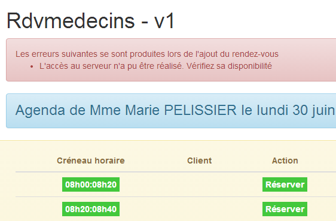 |
As always in these cases, we need to check the console logs:
[dao] getData[/ajouterRv] error réponse : {"data":"","status":0,"config":{"method":"POST","transformRequest":[null],"transformResponse":[null],"timeout":1000,"url":"http://localhost:8080/ajouterRv","data":{"jour":"2014-06-30","idCreneau":1,"idClient":4},"headers":{"Accept":"application/json, text/plain, */*","Authorization":"Basic YWRtaW46YWRtaW4=","Content-Type":"application/json;charset=utf-8"}},"statusText":""}
The [dao.getData] method failed with [status=0], which means that Angular canceled the request. The cause of the error is in the logs:
XMLHttpRequest cannot load http://localhost:8080/ajouterRv. Request header field Content-Type is not allowed by Access-Control-Allow-Headers.
If we look at the network traffic, we see the following:
 |
- in [1] and [2]: there was only one request, HTTP, the request [OPTIONS];
- in [3], the Angular client requests two authorizations:
- permission to send the headers HTTP and [accept, authorization, content-type];
- permission to send a command POST;
- in [4]: the server authorizes the header [authorization]. Remember that on the server side, we are the ones sending this authorization;
The new feature is therefore that, for a POST operation, the Angular client requests additional authorizations from the server. We must therefore modify the server to grant them:
|
In the [RdvMedecinsCorsController] class, we modify the private method that generates the HTTP headers sent for the OPTIONS, GET, and POST:
// sending options to the customer
private void sendOptions(HttpServletResponse response) {
if (application.isCORSneeded()) {
// set header CORS
response.addHeader("Access-Control-Allow-Origin", "*");
// certain headers are allowed
response.addHeader("Access-Control-Allow-Headers", "accept, authorization, content-type");
// the POST is authorized
response.addHeader("Access-Control-Allow-Methods", "POST");
}
}
- line 7: we added authorization for the headers HTTP and [accept, content-type];
- line 9: we added an authorization for the POST method;
We reran the test after restarting the server:
 |
This time, the reservation was successful.
3.7.9.8. Deleting an appointment
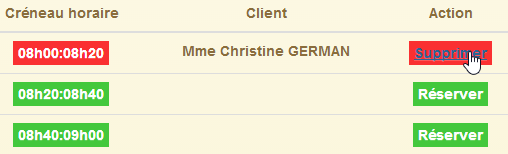 |  |
The code for the [supprimer] function is as follows:
$scope.supprimer = function (idRv) {
utils.debug("suppression rv n°", idRv);
// simulated waiting
$scope.waiting.visible = true;
task = utils.waitForSomeTime($scope.waiting.time);
// we add the
var promise = task.promise.then(function () {
// the URL service path
var path = config.urlSvrResaRemove;
// data to be sent to the service
var post = {idRv: idRv};
// start the asynchronous task
task = dao.getData($scope.server.url, $scope.server.login, $scope.server.password, path, post);
// we return the promise of task completion
return task.promise;
});
// task result analysis
promise = promise.then(function (result) {
if (result.err != 0) {
// there were errors deleting the rv
$scope.errors = {title: config.postRemoveErrors, messages: utils.getErrors(result, $filter), show: true};
// the UI is updated
$scope.waiting.visible = false;
} else {
// the new agenda is requested
getAgenda();
}
});
};
- line 1: remember that the function parameter is the appointment ID to be deleted. This code is very similar to the booking code. We will only comment on the differences;
- line 9: the service’s URL is [/supprimerRV] here, and it is also accessed via a POST:
@RequestMapping(value = "/supprimerRv", method = RequestMethod.POST, consumes = "application/json; charset=UTF-8")
public Reponse supprimerRv(@RequestBody PostSupprimerRv post, HttpServletResponse response) {
The posted parameter is again transmitted in JSON format. In section 2.12.17, we demonstrated the nature of the manually generated POST:
 |
- in [1], the URL of the web service;
- in [2], the POST method is used;
- in [3], the text JSON of the information transmitted to the web service in the form {idRv};
- in [4], the client specifies to the web service that it is sending it JSON information;
Let’s return to the code JS in the function [supprimer]:
- line 11: we create the posted object. Angular will automatically serialize it into JSON;
The rest of the code is similar to that of the reservation.
3.7.9.9. Server-side changes
On the server side, we make the following changes:
|
In the [RdvMedecinsCorsController] class, we add the following method:
// sending options to the customer
private void sendOptions(HttpServletResponse response) {
if (application.isCORSneeded()) {
// set header CORS
response.addHeader("Access-Control-Allow-Origin", "*");
// certain headers are allowed
response.addHeader("Access-Control-Allow-Headers", "accept, authorization, content-type");
// the POST is authorized
response.addHeader("Access-Control-Allow-Methods", "POST");
}
}
...
@RequestMapping(value = "/supprimerRv", method = RequestMethod.OPTIONS)
public void supprimerRv(HttpServletResponse response) {
sendOptions(response);
}
The addition is made on lines 13–16. The headers in lines 2–10 will be sent for URL and [/supprimerRv] (line 13) and the method HTTP and [OPTIONS] (line 13).
The [RdvMedecinsController] class is modified as follows:
@RequestMapping(value = "/supprimerRv", method = RequestMethod.POST, consumes = "application/json; charset=UTF-8")
public Reponse supprimerRv(@RequestBody PostSupprimerRv post, HttpServletResponse response) {
// headers CORS
rdvMedecinsCorsController.supprimerRv(response);
...
For the [POST] method (line 1) and the URL [/supprimerRv] (line 1), the method we just added in [RdvMedecinsCorsController] is called (line 4), thus returning the same headers as for the HTTP and [OPTIONS] methods.
3.7.10. Example 10: Creating and Canceling Reservations - 2
We now present the same application as before, but instead of making a reservation for a random customer, the customer will be selected from a drop-down list.
3.7.10.1. View V of the application
We will present the following form:
 |
The clients will be selected in [1].
The code is similar to that of the previous application, so we will only present the main differences.
We duplicate the [app-19.html] file into [app-20.html], then we create the code for the clients [1] dropdown list:
<!-- the clients list -->
<div class="alert alert-info">
<h3>{{agenda.title|translate:agenda.model}}</h3>
<div class="row" ng-show="clients.show">
<div class="col-md-3">
<h2 translate="{{clients.title}}"></h2>
<select data-style="btn-primary" class="selectpicker" select-enable="" ng-if="clients.data">
<option ng-repeat="client in clients.data" value="{{client.id}}">
{{client.titre}} {{client.prenom}} {{client.nom}}
</option>
</select>
</div>
</div>
</div>
- lines 8-12: the drop-down list will be implemented using the [bootstrap-select] component;
- line 1: the [selectEnable] directive is applied via the [select-enable] attribute;
- Line 1: The <select> tag is generated only if [clients.data] exists (# null, undefined). This point is important and is explained in section 3.7.7.8;
In addition, we are importing new JS files:
<script type="text/javascript" src="rdvmedecins-08.js"></script>
<!-- directives -->
<script type="text/javascript" src="selectEnable.js"></script>
<script type="text/javascript" src="footable.js"></script>
- line 1: the [rdvmedecins-08.js] file is obtained by copying the [rdvmedecins-0.js] file;
- lines 3-4: the files for the two directives are imported;
3.7.10.2. The C controller
The C controller code evolves as follows:
// controller
angular.module("rdvmedecins")
.controller('rdvMedecinsCtrl', ['$scope', 'utils', 'config', 'dao', '$translate', '$timeout', '$filter', '$locale',
function ($scope, utils, config, dao, $translate, $timeout, $filter, $locale) {
// ------------------- model initialization
...
// the clients
$scope.clients = {title: config.listClients, show: false, model: {}};
//------------------------------------------- initilisation vue
// the global asynchronous task
var task;
// we request the clients then the agenda
getClients().then(function () {
getAgenda();
});
...
// execution action
function getClients() {
....
};
} ]);
- line 8: the [$scope.clients] object configures the clients drop-down list in view V;
- lines 14–16: asynchronously, we first request the list of clients, then, once obtained, we request the agenda for Ms. PELISSIER for today. The syntax used here works only because the [getClients] function returns a promise;
The [getClients] method requests the list of clients:
function getClients() {
// the UI is updated
$scope.waiting.visible = true;
$scope.clients.show = false;
$scope.errors.show = false;
// the list of clients is requested;
task = dao.getData($scope.server.url, $scope.server.login, $scope.server.password, config.urlSvrClients);
var promise = task.promise;
// analyze the result of the previous call
promise = promise.then(function (result) {
// result={err: 0, data: [client1, client2, ...]}
// result={err: n, messages: [msg1, msg2, ...]}
if (result.err == 0) {
// we put the acquired data into the model
$scope.clients.data = result.data;
// the UI is updated
$scope.clients.show = true;
$scope.waiting.visible = false;
} else {
// there were errors in obtaining the list of clients
$scope.errors = { title: config.getClientsErrors, messages: utils.getErrors(result), show: true, model: {}};
// the UI is updated
$scope.waiting.visible = false;
}
});
// we return the promise
return promise;
};
This is code we have already encountered and discussed. The important point to note is line 31:
- line 27: we return the promise from line 10, i.e., the last promise obtained in the code. This promise will only be obtained once the HTTP call has returned its response;
The [reserver] method changes slightly:
$scope.reserver = function (creneauId) {
utils.debug("réservation du créneau", creneauId);
// create a RV for the selected customer
var idClient = $(".selectpicker").selectpicker('val');
...
});
- Line 4: We no longer book for a random client but for the client selected from the clients list.
3.7.11. Example 11: a [selectEnable2] directive
This example revisits directives.
3.7.11.1. The V
The application displays the following view:
 |
3.7.11.2. The code HTML for the view
The code HTML for the view [app-21.html] is as follows:
<div class="container">
<h1>Rdvmedecins - v1</h1>
<!-- the waiting message -->
<div class="alert alert-warning" ng-show="waiting.visible">
...
</div>
<!-- the error list -->
<div class="alert alert-danger" ng-show="errors.show">
...
</div>
<!-- the clients list -->
<div class="alert alert-info">
<div class="row" ng-show="clients.show">
<div class="col-md-4">
<h2 translate="{{clients.title}}"></h2>
<select data-style="btn-primary" id="selectpickerClients" select-enable2="" ng-if="clients.data">
<option ng-repeat="client in clients.data" value="{{client.id}}">
{{client.titre}} {{client.prenom}} {{client.nom}}
</option>
</select>
</div>
</div>
</div>
<!-- list of doctors -->
<div class="alert alert-info">
<div class="row" ng-show="medecins.show">
<div class="col-md-4">
<h2 translate="{{medecins.title}}"></h2>
<select data-style="btn-primary" id="selectpickerMedecins" select-enable2="" ng-if="medecins.data">
<option ng-repeat="medecin in medecins.data" value="{{medecin.id}}">
{{medecin.titre}} {{medecin.prenom}} {{medecin.nom}}
</option>
</select>
</div>
</div>
</div>
</div>
...
<script type="text/javascript" src="rdvmedecins-09.js"></script>
<!-- guidelines -->
<script type="text/javascript" src="selectEnable2.js"></script>
- lines 19-23: the clients drop-down list;
- line 19: the [selectEnable2] directive is applied ([select-enable2] attribute);
- line 19: only if [clients.data] is not empty;
- line 19: the drop-down list is identified by the attribute [id="selectpickerClients"];
- lines 33–37: the drop-down list of doctors;
- Line 33: The [selectEnable2] directive (attribute [select-enable2]) is applied;
- line 33: only if [medecins.data] is not empty;
- line 33: the drop-down list is identified by the [id="selectpickerMedecins"] attribute;
- line 43: a new file JS [rdvmedecins-09.js] is imported;
- line 45: the file JS is imported from the new directive;
3.7.11.3. The [selectEnable2] directive
The code for the [selectEnable2] directive is as follows:
angular.module("rdvmedecins").directive('selectEnable2', ['$timeout', 'utils', function ($timeout, utils) {
return {
link: function (scope, element, attrs) {
utils.debug("directive selectEnable2 attrs", attrs);
$timeout(function () {
$('#' + attrs['id']).selectpicker();
})
}
}
}]);
- line 4: we display the value of the [attrs] parameter to help understand how the code works. We will find that attrs['id']='selectpickerClients' for the list of clients;
- Line 6: To locate an element of [id='x'] within DOM, we write [$('#x')]. Therefore, you must write [$('#selectpickerClients')] to locate the list of clients. This is achieved using the syntax [$('#' + attrs['id'])];
The [selectEnable2] directive therefore uses the information carried by one of the attributes of the HTML element to which it is applied.
3.7.11.4. The C controller
The C controller is located in the file JS [rdvmedecins-09.js] and has the following structure:
// controller
angular.module("rdvmedecins")
.controller('rdvMedecinsCtrl', ['$scope', 'utils', 'config', 'dao',
function ($scope, utils, config, dao) {
// ------------------- model initialization
// the waiting msg
$scope.waiting = {text: config.msgWaiting, visible: false, cancel: cancel, time: 3000};
// login information
$scope.server = {url: 'http://localhost:8080', login: 'admin', password: 'admin'};
// errors
$scope.errors = {show: false, model: {}};
// the doctors
$scope.medecins = {title: config.listMedecins, show: false, model: {}};
// the clients
$scope.clients = {title: config.listClients, show: false, model: {}};
// the global asynchronous task
var task;
// ---------------------------------------------------- initialisation vue
// the UI is updated
$scope.waiting.visible = true;
$scope.clients.show = false;
$scope.medecins.show = false;
$scope.errors.show = false;
// we ask for the clients then the doctors
getClients().then(function () {
getMedecins();
});
// clients list
function getClients() {
...
}
// list of doctors
function getMedecins() {
...
}
// cancel wait
function cancel() {
...
}
} ]);
- lines 26-28: first request the clients, then the doctors;
3.7.11.5. Tests
Test this new version.
3.7.12. Example 12: a [list] directive
We’re using the same example as before, but we want to streamline the HTML code by using a directive. Currently, we have the following HTML code:
<!-- the clients list -->
<div class="alert alert-info">
<div class="row" ng-show="clients.show">
<div class="col-md-4">
<h2 translate="{{clients.title}}"></h2>
<select data-style="btn-primary" id="selectpickerClients" select-enable2="" ng-if="clients.data">
<option ng-repeat="client in clients.data" value="{{client.id}}">
{{client.titre}} {{client.prenom}} {{client.nom}}
</option>
</select>
</div>
</div>
</div>
<!-- list of doctors -->
<div class="alert alert-info">
<div class="row" ng-show="medecins.show">
<div class="col-md-4">
<h2 translate="{{medecins.title}}"></h2>
<select data-style="btn-primary" id="selectpickerMedecins" select-enable2="" ng-if="medecins.data">
<option ng-repeat="medecin in medecins.data" value="{{medecin.id}}">
{{medecin.titre}} {{medecin.prenom}} {{medecin.nom}}
</option>
</select>
</div>
</div>
</div>
Lines 14–26 are identical to lines 1–13. They apply to doctors instead of clients. We would like to be able to write the following:
<!-- the clients list -->
<list model="clients" ng-if="clients.show"></list>
<!-- list of doctors -->
<list model="medecins" ng-if="medecins.show"></list>
This code uses a new directive, [list], which we will create now.
3.7.12.1. The [list] directive
The [list] directive is placed in the JS [list.js] file. Its code is as follows:
angular.module("rdvmedecins")
.directive("list", ['utils', '$timeout', function (utils, $timeout) {
// returned directive instance
return {
// element HTML
restrict: "E",
// url of the fragment
templateUrl: "list.html",
// scope unique to each directive instance
scope: true,
// function link to document
link: function (scope, element, attrs) {
utils.debug("directive list attrs", attrs);
scope.model = scope[attrs['model']];
utils.debug("directive list model", scope.model);
$timeout(function () {
$('#' + scope.model.id).selectpicker();
})
}
}
}]);
- line 2: defines a directive named 'list';
- line 6: the [restrict] attribute specifies how the directive can be used. [restrict: "E"] means that the [list] directive can be used as the HTML element <list ...>...</list>. [restrict: "A"] means that the [list] directive can be used as an attribute, for example <div ... list='...'>. [restrict: "AE"] means that the [list] directive can be used as both an attribute and an element;
- line 8: the attribute [templateUrl] specifies the name of the fragment HTML to be used when the tag is encountered. This fragment will be the body of the tag;
- line 10: the [scope] attribute sets the scope of the directive’s template. [scope: true] means that two <list> elements will each have their own template. By default (scope not initialized), they share their templates;
- line 12: the [link] function, which we have already used several times;
To understand the code above, you need to remember how the directive will be used:
<!-- the clients list -->
<list model="clients" ng-if="clients.show"></list>
<!-- list of doctors -->
<list model="medecins" ng-if="medecins.show"></list>
The [list] directive is used as the HTML <list> element. This element has two attributes:
- [model]: which will have as its value the element of model M from view V in which the [list] directive is located. This element will populate the directive’s model;
- [ng-if]: which ensures that the HTML code of the directive is not generated if there is nothing to display;
Let’s return to the code for the [link] function in the directive:
link: function (scope, element, attrs) {
utils.debug("directive list attrs", attrs);
scope.model = scope[attrs['model']];
utils.debug("directive list model", scope.model);
$timeout(function () {
$('#' + scope.model.id).selectpicker();
})
}
Let's combine this code JS with the code HTML that uses the directive:
<list model="clients" ng-if="clients.show"></list>
- line 3: attrs['model'] has the value 'clients' here;
- line 3: scope[attrs['model']] has the value scope['clients'] and therefore represents [$scope.clients], i.e., the [clients] field of the view model. This field will have the value {id:'...', data:[client1, client2, ...], show: ..., title:'...'};
- line 3: we add a field [model] to the directive template. This template has inherited from the view template in which it is located. We must therefore avoid conflicts with a potential field [model] that the view might also have. Here, there will be no conflict;
- line 4: we display [scope.model] to better understand the code;
- lines 5–7: we see code we’ve encountered before. The difference is that the component’s id was previously included in an attrs['id'] attribute. Here, it will be included in [scope.model.id];
Now, let’s look at the HTML code generated by the directive. Because of the [templateUrl: "list.html"] attribute of the directive, we need to look for it in the [list.html] file:
<!-- a list of clients or physicians -->
<div class="alert alert-info" ng-show="model.show">
<div class="row">
<div class="col-md-4">
<h2 translate="{{model.title}}"></h2>
<select data-style="btn-primary" id="{{model.id}}" ng-if="model.data">
<option ng-repeat="element in model.data" value="{{element.id}}">
{{element.titre}} {{element.prenom}} {{element.nom}}
</option>
</select>
</div>
</div>
</div>
- The first thing to remember when reading this code is that the directive created an object [scope.model] of the form [{id :'...', data:[client1, client2, ...], show : ..., title :'...'}]. This [model] object (scope is implicit in the HTML code) is used by the HTML code in the directive;
- line 2: use of [model.show] to show/hide the view generated by the directive;
- line 5: use of [model.title] to set a title;
- line 6: use of [model.id] to place a id within the <select> tag. This id is used by the code JS in the directive;
- line 6: use [model.data] to generate the <select> only if there is data to display;
- lines 7–9: use of [model.data] to generate the drop-down list items;
3.7.12.2. The code HTML
The code HTML for the application [app-22.html] is as follows:
<div class="container">
<h1>Rdvmedecins - v1</h1>
<!-- the waiting message -->
<div class="alert alert-warning" ng-show="waiting.visible">
...
</div>
<!-- the error list -->
<div class="alert alert-danger" ng-show="errors.show">
...
</div>
<!-- the clients list -->
<list model="clients" ng-if="clients.show"></list>
<!-- list of doctors -->
<list model="medecins" ng-if="medecins.show"></list>
</div>
...
<script type="text/javascript" src="rdvmedecins-10.js"></script>
<!-- guidelines -->
<script type="text/javascript" src="list.js"></script>
- line 22: don't forget to include the directive code JS;
3.7.12.3. The C controller
The C controller changes very little:
angular.module("rdvmedecins")
.controller('rdvMedecinsCtrl', ['$scope', 'utils', 'config', 'dao',
function ($scope, utils, config, dao) {
// ------------------- model initialization
...
// the doctors
$scope.medecins = {title: config.listMedecins, show: false, id: 'medecins'};
// the clients
$scope.clients = {title: config.listClients, show: false, id: 'clients'};
...
- lines 7 and 9, we add the attribute [id] to the doctors and clients models;
3.7.12.4. The tests
The tests yield the same results as in the previous example.
3.7.13. Example 13: Updating a Directive Template
We continue our study of directives and use the drop-down list example. Here, we want to examine the behavior of the [list] directive when the content of the drop-down list changes.
3.7.13.1. The V views
The different views are as follows:
 |
- in [1], we request the list of clients for the first time;
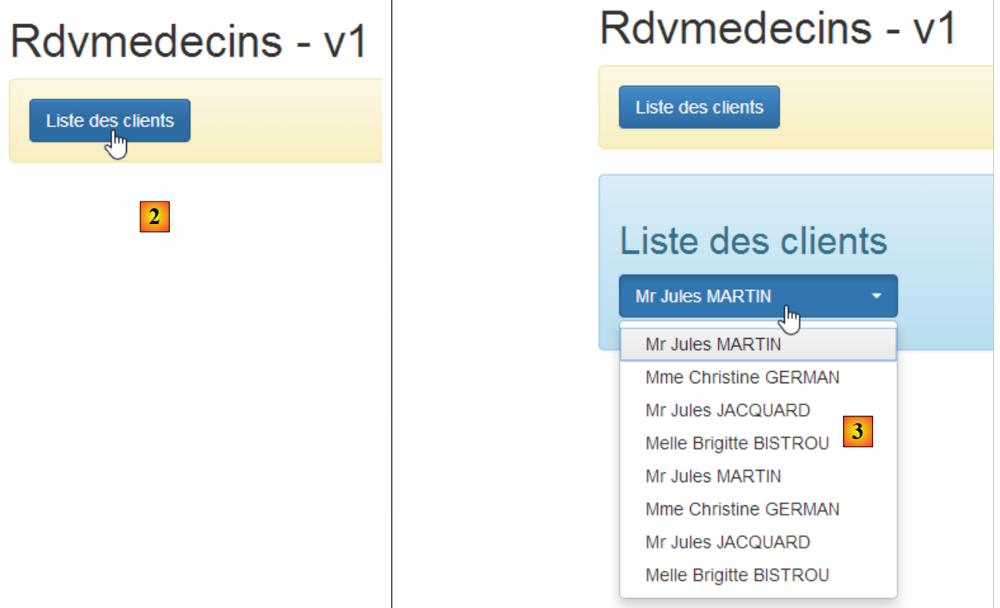 |
- In [2], the list of clients is requested a second time. This second list is then combined with the first [3]. It is the update of the [Bootstrap select] component that we want to examine in this example.
3.7.13.2. The page HTML
The page HTML [app-23.html] is obtained by copying [app-22.html] and then modified as follows:
<div class="container">
<h1>Rdvmedecins - v1</h1>
<!-- the waiting message -->
<div class="alert alert-warning" ng-show="waiting.visible">
...
</div>
<!-- the error list -->
<div class="alert alert-danger" ng-show="errors.show">
...
</div>
<!-- the button -->
<div class="alert alert-warning">
<button class="btn btn-primary" ng-click="getClients()">{{clients.title|translate}}</button>
</div>
<!-- the clients list -->
<list2 model="clients" ng-if="clients.show"></list2>
</div>
...
<script type="text/javascript" src="rdvmedecins-11.js"></script>
<!-- guidelines -->
<script type="text/javascript" src="list2.js"></script>
The changes from the previous version are as follows:
- lines 15–17: addition of a button;
- line 20: use of a new directive [list2];
- line 23: use of a new file JS;
- line 25: import of the JS file from the [list2] directive;
3.7.13.3. The [list2] directive
The [list2] directive in [list2.js] is as follows:
angular.module("rdvmedecins")
.directive("list2", ['utils', '$timeout', function (utils, $timeout) {
// returned directive instance
return {
// element HTML
restrict: "E",
// url of the fragment
templateUrl: "list.html",
// scope unique to each directive instance
scope: true,
// function link to document
link: function (scope, element, attrs) {
utils.debug('directive list2');
scope.model = scope[attrs['model']];
$timeout(function () {
$('#' + scope.model.id).selectpicker('refresh');
})
}
}
}]);
The only difference from the [list] directive is line 16: with the [selectpicker('refresh')] method, we instruct the [Bootstrap-select] component to refresh itself. The idea behind this is that every time the user requests a new list from clients, the drop-down list will be refreshed. It won’t work, but that’s the basic idea.
3.7.13.4. The C controller
The controller is in the file [rdvmedecins-11.js], created by copying the file [rdvmedecins-10.js]:
// the clients
$scope.clients = {title: config.listClients, show: false, id: 'clients', data: []};
...
// clients list
$scope.getClients = function getClients() {
// the UI is updated
$scope.waiting.visible = true;
$scope.errors.show = false;
// the list of clients is requested;
task = dao.getData($scope.server.url, $scope.server.login, $scope.server.password, config.urlSvrClients);
var promise = task.promise;
// analyze the result of the previous call
promise = promise.then(function (result) {
// result={err: 0, data: [client1, client2, ...]}
// result={err: n, messages: [msg1, msg2, ...]}
if (result.err == 0) {
// put the acquired data into a new model to force the view to refresh
$scope.clients = {title: $scope.clients.title, data: $scope.clients.data.concat(result.data), show: $scope.clients.show, id: $scope.clients.id};
// the UI is updated
$scope.clients.show = true;
$scope.waiting.visible = false;
} else {
// there were errors in obtaining the list of clients
$scope.errors = { title: config.getClientsErrors, messages: utils.getErrors(result), show: true, model: {}};
// the UI is updated
$scope.waiting.visible = false;
}
});
}
- line 1: to enable array concatenation in [clients.data], this object is initialized with an empty array;
- line 18: we concatenate the new list from clients with those already present in the [clients.data] array;
Previously, we had written:
Now we write:
To understand this code, you need to remember how model M is used in view V in the case of directive [list2]:
<!-- the clients list -->
<list2 model="clients" ng-if="clients.show"></list2>
The model used by the [list2] directive is [clients]. It will only be re-evaluated in the view V if [clients] changes in the view’s model M. The first idea that comes to mind for the modification is to write:
to account for the fact that the new list from clients must be added to the previous ones. Doing so modifies [clients.data] but not [clients]. I am not familiar with the inner workings of Javascript, but it would not be surprising if [clients] were a pointer, as well as [clients.data]. The pointer [clients] does not change when the pointer [clients.data] is changed. The directive [list2] is therefore not re-evaluated. This is indeed what we observe when debugging the application (F12 in Chrome).
By writing:
$scope.clients = {title: $scope.clients.title, data: $scope.clients.data.concat(result.data), show: $scope.clients.show, id: $scope.clients.id};
We ensure that [$scope.clients] does indeed receive a new value. The pointer [$scope.clients] points to a new object. The directive [list2] should then be re-evaluated. However, we do not get the expected result. Let’s examine the screenshots when we request the list of clients twice:
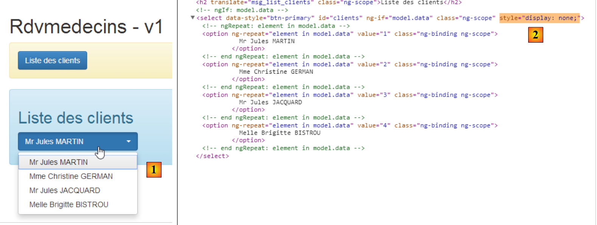 |
- in [1], there are only four elements instead of eight;
- in [2], these four elements are in a [select], but this one is hidden (style='display: none');
 |
- In [3], the four clients elements are found within another HTML structure, and this is the one the user sees when they click on the dropdown list;
Finally, the console logs show the following:
- line 1: the [dao] service is instantiated;
- line 2: the [dao] service obtains an initial list from clients;
- line 3: the [list2] directive is executed;
- line 4: the [dao] service obtains a second list from clients;
The display of line 2 comes from the following code in the directive:
link: function (scope, element, attrs) {
utils.debug('directive list2');
...
}
Let's examine the lifecycle of the [list2] directive:
- between lines 1 and 2, it is not enabled even though the view has been rendered for the first time. This is due to its [ng-if="clients.show"] attribute in view V:
<list2 model="clients" ng-if="clients.show"></list2>
- line 3: after retrieving the first list of doctors, [clients.show] becomes true and the directive is activated;
- after retrieving the second list from clients, we see that the code for directive [list2] is not called. This is why we do not see the second list;
To resolve this issue, we modify the [list2] directive as follows:
angular.module("rdvmedecins")
.directive("list2", ['utils', '$timeout', function (utils, $timeout) {
// returned directive instance
return {
// element HTML
restrict: "E",
// url of the fragment
templateUrl: "list.html",
// scope unique to each directive instance
scope: true,
// function link to document
link: function (scope, element, attrs) {
// every time attrs["model"] changes, the directive template must also change
scope.$watch(attrs["model"], function (newValue) {
utils.debug("directive list2 newValue", newValue);
// update the directive model
scope.model = newValue;
$timeout(function () {
$('#' + scope.model.id).selectpicker('refresh');
})
});
}
}
}]);
- Line 14: The function [scope.$watch] allows you to observe a value in the model. Its syntax is [scope.$watch('var'), f], where [var] is the identifier of a model variable and f is the function to be executed when this variable changes value. Here, we want to monitor the variable [clients]. So we must write [scope.$watch('clients')]. Since we have attrs['model']='clients', we write [scope.$watch(attrs["model"], function (newValue)] ;
- line 14: the second parameter of the function [scope.$watch] is the function to be executed when the observed variable changes value. The parameter [newValue] is the new value of the variable, so for us, the new value of the variable [clients] in the model;
- Line 17: This new value is assigned to the [model] field in the directive template;
Once this change is made, the logs change:
 |
Above, we can see that after obtaining the second list from clients, the [list2] directive is indeed executed again, as confirmed by the result [2].
3.7.14. Example 14: The directives [waiting] and [errors]
Let’s go back to the HTML code from the previous application:
<div class="container">
<h1>Rdvmedecins - v1</h1>
<!-- the waiting message -->
<div class="alert alert-warning" ng-show="waiting.visible">
...
</div>
<!-- the error list -->
<div class="alert alert-danger" ng-show="errors.show">
...
</div>
<!-- the button -->
<div class="alert alert-warning">
<button class="btn btn-primary" ng-click="getClients()">{{clients.title|translate}}</button>
</div>
<!-- the clients list -->
<list2 model="clients" ng-if="clients.show"></list2>
</div>
- lines 5-7: the loading message;
- lines 10-12: the error message;
We decide to place the codes HTML for these two messages in directives.
3.7.14.1. The new code HTML
The new code HTML [app-24.html] is as follows:
<div class="container">
<h1>Rdvmedecins - v1</h1>
<!-- the waiting message -->
<waiting model="waiting"></waiting>
<!-- the error list -->
<errors model="errors"></errors>
<!-- the button -->
<div class="alert alert-warning">
<button class="btn btn-primary" ng-click="getClients()">{{clients.title|translate}}</button>
</div>
<!-- the clients list -->
<list2 model="clients" ng-if="clients.show"></list2>
</div>
...
<script type="text/javascript" src="rdvmedecins-12.js"></script>
<!-- guidelines -->
<script type="text/javascript" src="list2.js"></script>
<script type="text/javascript" src="errors.js"></script>
<script type="text/javascript" src="waiting.js"></script>
- line 5: the directive for the waiting message;
- line 8: the directive for the error message;
- line 19: the new JS file associated with the application;
- lines 21-23: the JS files for the three directives;
3.7.14.2. The [waiting] directive
The code JS for the [waiting] directive is in the following [waiting.js] file:
angular.module("rdvmedecins")
.directive("waiting", ['utils', function (utils) {
// returned directive instance
return {
// element HTML
restrict: "E",
// url of the fragment
templateUrl: "waiting.html",
// scope unique to each directive instance
scope: true,
// function link to document
link: function (scope, element, attrs) {
// each time attr["model"] changes, the page template must also change
scope.$watch(attrs["model"], function (newValue) {
utils.debug("[waiting] watch newValue", newValue);
scope.model = newValue;
});
}
}
}]);
This code follows the same logic as that of the [list2] directive already discussed.
On line 8, we reference the following [waiting.html] file:
<div class="alert alert-warning" ng-show="model.show">
<h1>{{ model.title.text | translate:model.title.values}}
<button class="btn btn-primary pull-right" ng-click="model.cancel()">{{'cancel'|translate}}</button>
<img src="assets/images/waiting.gif" alt=""/>
</h1>
</div>
In the application's JS code, the [$scope.waiting] model for this HTML code will be defined as follows:
// the waiting msg
$scope.waiting = {title: {text: config.msgWaiting, values: {}}, show: false, cancel: cancel, time: 3000};
3.7.14.3. The [errors] directive
The code JS for the directive [errors] is in the following file [errors.js]:
angular.module("rdvmedecins")
.directive("errors", ['utils', function (utils) {
// returned directive instance
return {
// element HTML
restrict: "E",
// url of the fragment
templateUrl: "errors.html",
// scope unique to each directive instance
scope: true,
// function link to document
link: function (scope, element, attrs) {
// each time attr["model"] changes, the page template must also change
scope.$watch(attrs["model"], function (newValue) {
utils.debug("[errors] watch newValue", newValue);
scope.model = newValue;
});
}
}
}]);
This code follows the same logic as that of the [list2] directive already discussed.
On line 8, we reference the following [errors.html] file:
<div class="alert alert-danger" ng-show="model.show">
{{model.title.text|translate:model.title.values}}
<ul>
<li ng-repeat="message in model.messages">{{message|translate}}</li>
</ul>
</div>
In the application code JS, the template [$scope.errors] for this code HTML will be defined as follows:
// there were errors in obtaining the list of clients
$scope.errors = { title: { text: config.getClientsErrors, values: {}}, messages: utils.getErrors(result), show: true, model: {}};
3.7.15. Example 15: navigation
So far, we have used single-page applications. In this example, we will discuss multi-page applications and the navigation between them.
3.7.15.1. The V views of the application
 |
- in [1], the URL of view #1;
- in [2], its content;
- in [3], we move to page 2;
- in [4], view #2;
- in [5], we go to page 3;
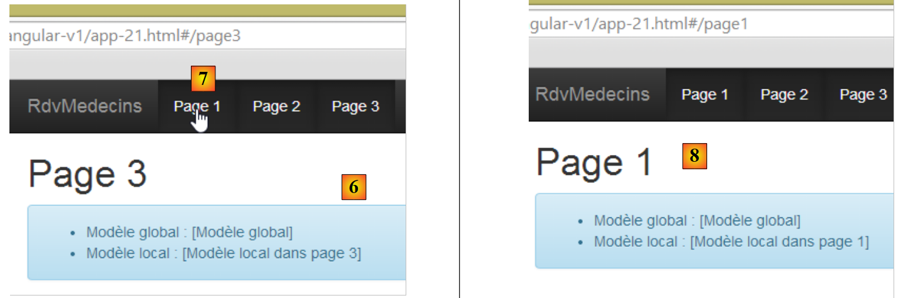 |
- in [6], view #3;
- in [7], we go to page 1;
- in [8], we are back to view #1;
3.7.15.2. Code Organization
We are starting a new code organization:
 |
- the application views will be placed in the [views] folder;
- The application module will be placed in the [modules] folder;
- the application controllers will be placed in the [controllers] folder;
Similarly, in the final version:
- the services will be placed in the [services] folder;
- the directives will be placed in the [directives] folder;
3.7.15.3. The views container
The views from the [views] folder will be displayed in the following container [app-25.html]:
<!DOCTYPE html>
<html ng-app="rdvmedecins">
<head>
...
</head>
<body>
<div class="container" ng-controller="mainCtrl">
<!-- the navigation bar -->
<ng-include src="'views/navbar.html'"></ng-include>
<!-- the current view -->
<ng-view></ng-view>
</div>
...
<!-- the module -->
<script type="text/javascript" src="modules/rdvmedecins-13.js"></script>
<!-- controllers -->
<script type="text/javascript" src="controllers/mainController.js"></script>
<script type="text/javascript" src="controllers/page1Controller.js"></script>
<script type="text/javascript" src="controllers/page2Controller.js"></script>
<script type="text/javascript" src="controllers/page3Controller.js"></script>
</body>
</html>
- line 7: the body of the container is controlled by [mainCtrl];
- line 9: the [ng-include] directive allows an external HTML file to be included, in this case a navigation bar;
- line 12: the various views displayed by the container are rendered within the [ng-view] directive. Ultimately, we have a container that displays:
- always the same navigation bar (line 9);
- different views on line 12;
- lines 16–22: we import the JS files from the [rdvmedecins-13.js] application module and its controllers;
3.7.15.4. The application module
The [rdvmedecins-13.js] file defines the application module and routing between views:
// --------------------- Angular module
angular.module("rdvmedecins", [ 'ngRoute' ]);
angular.module("rdvmedecins").config(["$routeProvider", function ($routeProvider) {
// ------------------------ routage
$routeProvider.when("/page1",
{
templateUrl: "views/page1.html",
controller: 'page1Ctrl'
});
$routeProvider.when("/page2",
{
templateUrl: "views/page2.html",
controller: 'page2Ctrl'
});
$routeProvider.when("/page3",
{
templateUrl: "views/page3.html",
controller: 'page3Ctrl'
});
$routeProvider.otherwise(
{
redirectTo: "/page1"
});
}]);
- line 1: defines the [rdvmedecins] module. It depends on the [ngRoute] module provided by the [angular-route.min.js] library. This module enables the routing defined in lines 6–24;
- line 4: defines the [config] function of the [rdvmedecins] module. Note that this function is executed before any service instantiation. It is a module configuration function. Here, its routing is configured. This is done using the [$routeProvider] object provided by the [ngRoute] module;
- lines 6–10: define the view to display when the user requests the URL [/page1]. This is internal routing within the application. The URL is actually [/rdvmedecins-angular-v1/app-21.html#/page1]. We can see that it is still the URL from the [/rdvmedecins-angular-v1/app-21.html] container that is used, but with additional information following a # character. It is this additional information that Angular routing handles;
- line 8: specifies the fragment HTML to be inserted into the container’s [ng-view] directive:
- line 9: specifies the name of the controller for this fragment;
- lines 11–15: define the view to display when the user requests the URL [/page2];
- lines 16–20: define the view to display when the user requests the URL [/page3];
- lines 21–24: define the routing to be performed when the requested URL is not one of the three previous ones (otherwise, line 21);
- line 23: redirects to URL [/page1], and thus to the view defined in lines 6–10;
3.7.15.5. The view container controller
We saw that the view container declared a controller:
<div class="container" ng-controller="mainCtrl">
The controller [mainCtrl] is defined in the file [mainController.js]:
// controller
angular.module("rdvmedecins")
.controller('mainCtrl', ['$scope', '$location',
function ($scope, $location) {
// page templates
$scope.page1 = {};
$scope.page2 = {};
$scope.page3 = {};
// global model
var main = $scope.main = {};
main.text = "[Modèle global]";
// methods exposed to view
main.showPage1 = function () {
$location.path("/page1");
};
main.showPage2 = function () {
$location.path("/page2");
};
main.showPage3 = function () {
$location.path("/page3");
}
}]);
- line 3: the [mainCtrl] controller requires the [$location] object provided by the [ngRoute] routing module. This object is used to switch views (lines 16, 19, 22);
Let’s return to the container code:
<div class="container" ng-controller="mainCtrl">
<!-- the navigation bar -->
<ng-include src="'views/navbar.html'"></ng-include>
<!-- the current view -->
<ng-view></ng-view>
</div>
- The [mainCtrl] controller builds the model for zone 1-7;
- the view included on line 6 also has a controller. For example, the view [page1] has the controller [page1Ctrl]. This controller builds the model for the area displayed on line 6. We then have two models in this area:
- the model built by the controller [mainCtrl];
- the model built by the controller [page1Ctrl];
There is a naming convention for the models. In the view shown on line 6, the models for controllers [mainCtrl] and [pagexCtrl] are both visible. If two variables in these models have the same name, one will override the other. To avoid this naming conflict, we create four models with four different names:
container | mainCtrl | main | 11 |
page1 | page1Ctrl | page1 | 7 |
page2 | page2Ctrl | page2 | 8 |
page3 | page3Ctrl | page3 | 9 |
- line 12: defines an element [text] in the model [main];
Lines 7–11 have a very specific consequence: they define the [$scope] of the [mainCtrl] controller and, within it, they create four [main, page1, page2, page3] variables. These four variables will be used as the respective templates for the container and the three views it will contain in turn.
3.7.15.6. The navigation bar
The navigation bar is defined as follows in the container:
<div class="container" ng-controller="mainCtrl">
<!-- the navigation bar -->
<ng-include src="'views/navbar.html'"></ng-include>
<!-- the current view -->
<ng-view></ng-view>
</div>
The navigation bar is defined on line 3. This means that it only recognizes the [main] template. Its code is as follows:
<div class="navbar navbar-inverse navbar-fixed-top" role="navigation">
<div class="container">
<div class="navbar-header">
<button type="button" class="navbar-toggle" data-toggle="collapse" data-target=".navbar-collapse">
<span class="sr-only">Toggle navigation</span>
<span class="icon-bar"></span>
<span class="icon-bar"></span>
<span class="icon-bar"></span>
</button>
<a class="navbar-brand" href="#">RdvMedecins</a>
</div>
<div class="collapse navbar-collapse">
<ul class="nav navbar-nav">
<li class="active">
<a href="">
<span ng-click="main.showPage1()">Page 1</span>
</a>
</li>
<li class="active">
<a href="">
<span ng-click="main.showPage2()">Page 2</span>
</a>
</li>
<li class="active">
<a href="">
<span ng-click="main.showPage3()">Page 3</span>
</a>
</li>
</ul>
</div>
</div>
</div>
- On lines 16, 21, and 26, methods from the [main] model are used;
- line 16: clicking the [Page1] link will trigger the execution of the [$scope.main.showPage1] method. This method is defined in the [mainCtrl] controller as follows:
// global model
var main = $scope.main = {};
main.text = "[Modèle global]";
// methods exposed to view
main.showPage1 = function () {
$location.path("/page1");
};
- line 6: from the code above, we can see that the method [main.showPage1] is actually the method [$scope.main.showPage1]. So this is the one that will be executed;
- line 7: we change the application’s URL to [/page1]. Let’s return to the routing defined in the main module:
$routeProvider.when("/page1",
{
templateUrl: "views/page1.html",
controller: 'page1Ctrl'
});
We can see that the fragment [views/page1.html] will be inserted into the container and that its controller is [page1Ctrl].
3.7.15.7. The view [/page1] and its controller
The fragment [views/page1.html] is as follows:
<h1>Page 1</h1>
<div class="alert alert-info">
<ul>
<li>Modèle global : {{main.text}}</li>
<li>Modèle local : {{page1.text}}</li>
</ul>
</div>
Recall that in the view inserted into the container, the [main] template is visible. This is what we want to verify on line 4. Furthermore, the [page1Ctrl] controller of the [views/page1.html] fragment defines a [page1] template. This is the one used on line 5.
The code for the [page1Ctrl] controller is as follows:
angular.module("rdvmedecins")
.controller('page1Ctrl', ['$scope',
function ($scope) {
// page 1 template
var page1=$scope.page1;
page1.text="[Modèle local dans page 1]";
}]);
- line 2: the [$scope] injected here is not empty. Since the [page1Ctrl] controller controls an area inserted into a container controlled by [mainCtrl], the [$scope] in line 2 contains the elements of the [$scope] defined by the [mainCtrl] controller. It is important to understand this. The [$scope] defined by the [mainCtrl] controller contains the following elements: [main, page1, page2, page3]. This means we have access to the models of all views. This isn’t necessarily desirable, but it is the case here. In the final version of the Angular client, we will use this feature to store in the [main] model the information that needs to be shared between views. This will be a concept analogous to the server-side 'session' concept;
- line 6: we retrieve the [page1] model for page 1 from [$scope] and then work with it (line 7). We then get the following display:
 |
The views [/page2] and [/page3] are built on the same template as the view [/page1] (see the screenshots on page 240).
3.7.15.8. Checking navigation
We now want to control navigation as follows: [page1 --> page2 --> page3 --> page1]. Thus, if the user is on page 1 ([/page1]) and typesURL [/page3], then this navigation must not be accepted, and the user must remain on page 1.
To achieve this, we modify the page controllers as follows:
angular.module("rdvmedecins")
.controller('page1Ctrl', ['$scope', '$location',
function ($scope, $location) {
// navigation authorized?
var main = $scope.main;
if (main.lastUrl && main.lastUrl != '/page3') {
// we return to the last URL
$location.path(main.lastUrl);
return;
}
// we store the URL of the page
main.lastUrl = '/page1';
// page template
var page1 = $scope.page1;
page1.text = "[Modèle local dans page 1]";
}]);
- line 12: when a page is displayed, we will store its URL in the [main.lastUrl] template. Here we are using the concept we discussed earlier: using the [main] model to store information shared by all views. In this case, it is the last URL accessed;
- the code in lines 4–12 is duplicated and adapted for the three views. Here we are in the [/page1] view;
- line 5: we retrieve the [main] model;
- line 6: if the [main.lastUrl] template exists and is different from [/page3], then navigation is disallowed (the last visited URL exists and is not /page3);
- line 8: we then return to the last visited URL;
Let's try it:
 |
- in [1], we are on page 1 and we enter the URL from page 3 into [2];
- In [3], the navigation did not occur, and we returned to the URL on page 1;
3.7.16. Conclusion
We have covered all the use cases we will encounter in the final version of the Angular client. When we present this, we will comment more on the application’s features than on its implementation details. For the latter, we will simply refer to the example illustrating the use case under consideration.
3.8. The Final Angular Client
3.8.1. Project Structure
The final project looks like this:
 |
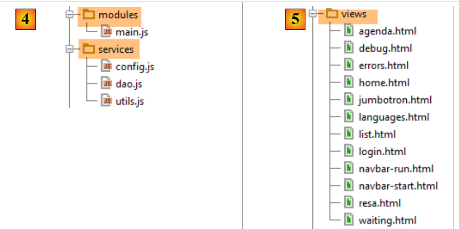 |
- in [1], the entire project. [app.html] is the application’s master page;
- in [2], the controllers;
- in [3], the directives;
- in [4], the services and the application’s Angular module [main.js];
- in [5], the various views that are inserted into the master page [app.html];
3.8.2. Project dependencies
The project dependencies are as follows:
 |
The role of these various elements was explained in section 3.4, page 134.
3.8.3. The master page [app.html]
The master page is as follows:
<!DOCTYPE html>
<html ng-app="rdvmedecins">
<head>
<title>RdvMedecins</title>
<!-- META -->
<meta http-equiv="Content-Type" content="text/html; charset=utf-8">
<meta name="viewport" content="width=device-width, initial-scale=1.0">
<meta name="description" content="Angular client for RdvMedecins">
<meta name="author" content="Serge Tahé">
<!-- on CSS -->
<link rel="stylesheet" href="bower_components/bootstrap/dist/css/bootstrap.min.css"/>
<link href="bower_components/bootstrap/dist/css/bootstrap-theme.min.css" rel="stylesheet"/>
<link href="bower_components/bootstrap-select/bootstrap-select.min.css" rel="stylesheet"/>
<link href="assets/css/rdvmedecins.css" rel="stylesheet"/>
<link href="assets/css/footable.core.min.css" rel="stylesheet"/>
</head>
<!-- [appCtrl] controller, [app] model -->
<body ng-controller="appCtrl">
<div class="container">
...
</div>
<!-- Bootstrap core JavaScript ================================================== -->
<script type="text/javascript" src="bower_components/jquery/dist/jquery.min.js"></script>
<script type="text/javascript" src="bower_components/bootstrap/dist/js/bootstrap.min.js"></script>
<script type="text/javascript" src="bower_components/bootstrap-select/bootstrap-select.min.js"></script>
<script src="bower_components/footable/js/footable.js" type="text/javascript"></script>
<!-- angular js -->
<script type="text/javascript" src="bower_components/angular/angular.min.js"></script>
<script type="text/javascript" src="bower_components/angular-ui-bootstrap-bower/ui-bootstrap-tpls.min.js"></script>
<script type="text/javascript" src="bower_components/angular-route/angular-route.min.js"></script>
<script type="text/javascript" src="bower_components/angular-translate/angular-translate.min.js"></script>
<script type="text/javascript" src="bower_components/angular-base64/angular-base64.min.js"></script>
<!-- modules -->
<script type="text/javascript" src="modules/main.js"></script>
<!-- services -->
<script type="text/javascript" src="services/config.js"></script>
<script type="text/javascript" src="services/dao.js"></script>
<script type="text/javascript" src="services/utils.js"></script>
<!-- guidelines -->
<script type="text/javascript" src="directives/waiting.js"></script>
<script type="text/javascript" src="directives/errors.js"></script>
<script type="text/javascript" src="directives/footable.js"></script>
<script type="text/javascript" src="directives/debug.js"></script>
<script type="text/javascript" src="directives/list.js"></script>
<!-- controllers -->
<script type="text/javascript" src="controllers/appController.js"></script>
<script type="text/javascript" src="controllers/loginController.js"></script>
<script type="text/javascript" src="controllers/homeController.js"></script>
<script type="text/javascript" src="controllers/agendaController.js"></script>
<script type="text/javascript" src="controllers/resaController.js"></script>
</body>
</html>
- line 18: note that [appCtrl] is the master page controller;
- lines 19–21: the content of the master page;
This content is as follows:
<div class="container">
<!-- navigation bars -->
<ng-include src="'views/navbar-start.html'" ng-show="app.navbarstart.show"></ng-include>
<ng-include src="'views/navbar-run.html'" ng-show="app.navbarrun.show"></ng-include>
<!-- the jumbotron -->
<ng-include src="'views/jumbotron.html'"></ng-include>
<!-- page title -->
<div class="alert alert-info" ng-show="app.titre.show" translate="{{app.titre.text}}"
translate-values="{{app.titre.model}}"></div>
<!-- page errors -->
<errors model="app.errors" ng-show="app.errors.show"></errors>
<!-- the waiting message -->
<waiting model="app.waiting" ng-show="app.waiting.show"></waiting>
<!-- the current view -->
<ng-view></ng-view>
<!-- debug -->
<debug model="app" ng-show="app.debug.on"></debug>
</div>
Regardless of the view displayed, it will always have the following elements:
- lines 3-4: a command bar. The two bars on lines 3 and 4 are mutually exclusive;

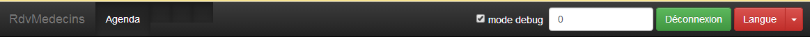
- line 6: an app logo/text:

- line 8: a title

- line 11: an error message:

- line 13: a loading message:

- line 17: debug information:

All of the above elements are controlled by a [ng-show / ng-hide] directive, which means that even if they are present, they are not necessarily visible.
3.8.4. The application views
In the master page code, we have:
<div class="container">
...
<!-- the current view -->
<ng-view></ng-view>
...
</div>
Line 4 receives the various views of the application. These are defined in module [main.js]:

The role of configuring the various routes was explained in section 3.7.15.4, page 242.
The [login.html] view is empty, meaning it does not add any elements to those already present in the master page.
The view [home.html] adds the following element to the master page:

The [agenda.html] view adds the following element to the master page:

The view [resa.html] adds the following element to the master page:

3.8.5. Application Features
The Angular client views were already presented in Section 1.3.3, on page 7. To make this new chapter easier to read, we are repeating them here. The first view is as follows:
 |
- in [6], the application’s login page. This is an appointment scheduling application for doctors;
- in [7], a checkbox that allows the user to enable or disable [debug] mode. This mode is characterized by the presence of the [8] frame, which displays the model of the current view;
- in [9], an artificial wait time in milliseconds. It defaults to 0 (no wait). If N is the value of this wait time, any user action will be executed after a wait time of N milliseconds. This allows you to see the wait management implemented by the application;
- in [10], the URL of the Spring 4 server. Following the previous explanation, this is [http://localhost:8080];
- in [11] and [12], the username and password of the user who wants to use the application. There are two users: admin/admin (login/password) with a role (ADMIN) and user/user with a role (USER). Only the role ADMIN has permission to use the application. The role USER is only there to show what the server responds with in this use case;
- in [13], the button that allows you to connect to the server;
- in [14], the application language. There are two: French (default) and English.
 |
- in [1], you log in;
 |
- Once logged in, you can choose the doctor with whom you want an appointment ([2]) and the date of the appointment ([3]);
- you request [4] to view the agenda of the selected doctor for the chosen day;
 |
- once the doctor’s schedule is obtained, you can book a time slot;
 |
- in [6], you select the patient for the appointment and confirm this selection in [7];
 |
Once the appointment has been confirmed, you are automatically redirected to agenda, where the new appointment is now listed. This appointment can be deleted later via [7].
The main features have been described. They are simple. Those not described are functions in navigation for returning to a previous view. Let’s finish with language settings:
 |
- in [1], you switch from French to English;
 |
- in [2], the view switches to English, including the calendar;
3.8.6. The [main.js] module
The [main.js] module defines the Angular module that will control the application:
 |
- line 4: the module is named [rdvmedecins];
- line 5: the module [ngRoute] is used for routing URL;
- line 6: the module [translate] is used for text internationalization;
- line 7: the [base64] module is used to Base64-encode the string 'login:password';
- line 8: the [ngLocale] module is used to internationalize the calendar;
- line 9: the [ui.bootstrap] module is used for the calendar;
- line 12: route configuration;
- line 40: message internationalization;
3.8.7. The master page controller
Recall the code HTML from the master page [app.html]:
<body ng-controller="appCtrl">
<div class="container">
...
Line 1: The entire body of the master page is controlled by the [appCtrl] controller. Due to its position, this makes it the general and main controller of the application. As explained in section 3.7.15, the model created by this controller is inherited by all views that will be inserted into the master page.
Its code is as follows:
angular.module("rdvmedecins")
.controller("appCtrl", ['$scope', 'config', 'utils', '$location', '$locale',
function ($scope, config, utils, $location, $locale) {
// debug
utils.debug("[app] init");
// ----------------------------------------initialisation page
// templates for # pages
$scope.app = {waitingTimeBeforeTask: config.waitingTimeBeforeTask};
$scope.login = {};
$scope.home = {};
$scope.agenda = {};
$scope.resa = {};
// current page template
var app = $scope.app;
...
// ---------------------------------- méthodes
// cancel current job
app.cancel = function () {
...
};
// disconnect
app.deconnecter = function () {
...
};
// this code must remain there as it references the [cancel] function which precedes it
app.waiting = {title: {text: config.msgWaitingInit, values: {}}, cancel: app.cancel, show: true};
}])
;
Lines 10–14 define the five models used in the application:
app.html | appCtrl | |
login.html | loginCtrl | |
home.html | homeCtrl | |
resa.html | resaCtrl | |
agenda.html | agendaCtrl |
It is important to understand that the object [$scope], being the model of the master page controller, is inherited by all views and controllers. Thus, the controller [loginCtrl] has access to the elements of [$scope.app, $scope.login, $scope.home, $scope.resa, $scope.agenda]. In other words, a controller has access to the models of other controllers. The application under consideration carefully avoids using this capability. Thus, for example, the controller [loginCtrl] works with only two models:
- its own, [$scope.login];
- and that of the parent controller [$scope.app];
The same applies to all other controllers. The [$scope.app] model will be used as shared memory between the various controllers. When a controller C1 needs to transmit information to controller C2, the following procedure is followed:
In [C1]:
In [C2]:
In both cases, $scope is inherited from controller [appCtrl] and is therefore identical (it is a pointer) in [C1] and [C2]. The [$scope.app] object, which serves as shared memory between controllers, will often be referred to as a "session" in the comments, mimicking the session used in traditional web applications, which refers to the shared memory between successive HTTP requests.
Let’s return to the code for the [appCtrl] controller:
// les modèles des # pages
$scope.app = {waitingTimeBeforeTask: config.waitingTimeBeforeTask};
$scope.login = {};
$scope.home = {};
$scope.agenda = {};
$scope.resa = {};
// modèle de la page courante
var app = $scope.app;
// [app.debug] et [utils.verbose] doivent toujours être synchronisés
app.debug = utils.verbose;
app.debug.on = config.debug;
// pas de titre de page pour l'instant
app.titre = {show: false};
// pas de barres de navigation
app.navbarrun = {show: false};
app.navbarstart = {show: false};
// pas d'erreurs
app.errors = {show: false};
// locale par défaut
angular.copy(config.locales['fr'], $locale);
// la vue courante
app.view = {url: undefined, model: {}, done: false};
// la tâche courante
app.task = app.view.model.task = {action: utils.waitForSomeTime(app.waitingTimeBeforeTask), isFinished: false};
- line 8: [$scope.app] will be the master page template. It will also serve as the shared memory between the various controllers. Rather than writing [$scope.app.champ=value] everywhere, the pointer [$scope.app] is assigned to the variable [app], and we will then write [app.champ=value]. You just need to remember that [app] is the model exposed to the master page;
- Line 11: [app.debug.on] is a Boolean that controls the debug mode of the application. By default, it is set to true. Its value is linked to the [debug] checkbox in the navigation toolbars;
- line 15: [app.navbarrun.show] controls the display of the following navigation bar:
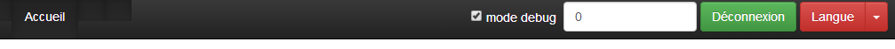
- line 16: [app.navbarstart.show] controls the display of the following navigation bar:

- line 18: [app.errors] is the error banner template;

- line 22: [app.view] will contain information about the current view, the one currently displayed by the [ng-view] tag in the master page. We will note the following information there:
- [url]: the URL of the current view, for example [/agenda];
- [model]: the template for the current view, for example [$scope.agenda];
- [done]: when true, indicates that the current view has finished its work and that we are switching to another view;
This information is used to control navigation.
- Line 24: launches an asynchronous task, a simulated wait. The asynchronous task is referenced by two pointers, [app.view.model.task.action] and [app.task];
Two methods have been factored into the [appCtrl] controller:
// cancel current job
app.cancel = function () {
...
};
// disconnect
app.deconnecter = function () {
...
};
- line 2: the [app.cancel] function is used to cancel the current task for which a waiting message is currently displayed. All views display this message, so the task will be canceled here;
- line 7: the function [app.deconnecter] returns the user to the authentication page. All views, except for the view [/login], offer this option;
The function [app.deconnecter] is as follows:
// disconnect
app.deconnecter = function () {
// we return to the login page
$location.path(config.urlLogin);
};
- line 4: return to the login page for URL [/login];
3.8.8. Asynchronous Task Management
In our application, at any given time, only one asynchronous task will be running. It is possible to have multiple tasks running. For example, when the application starts, it requests the list of doctors from the web service and then the list of clients with two successive HTTP requests. We could do the same thing with two simultaneous HTTP requests. Angular provides the tools for this. Here, we did not choose that approach.
The currently running task is canceled with the following code in the [appCtrl] controller:
// cancel current job
app.cancel = function () {
utils.debug("[app] cancel task");
// cancel the current view's asynchronous task
var task = app.view.model.task;
task.isFinished = true;
task.action.reject();
...
};
- line 5: the task is retrieved from [app.view.model.task]. Therefore, all controllers will ensure that their asynchronous tasks are referenced by this object;
- line 6: to indicate that the task is finished;
- line 7: to terminate the task with a failure. This notation differs from that used in the Angular examples studied:
- in the examples, the [task] object was a [$q.defer()] object that could be terminated;
- in the final version, the [task] object is an object with the fields [action, isFinished], where [action] is the [$q.defer()] object thatcan be completed, and [isFinished] is a Boolean that indicates that the action is complete;
Let’s examine the lifecycle of the [task] object using an example. At startup, after the [appCtrl] controller, the [loginCtrl] controller takes over to display the [views/login.html] view. Its initialization code is as follows:
// retrieve the parent model
var login = $scope.login;
var app = $scope.app;
// current view
app.view = {url: config.urlLogin, model: login, done: false};
Line 5 contains [model=login]. This means that when the [login] object is modified, the [app.view.model] object is modified, and consequently the [$scope.app.view.model] object. When we want to perform a simulated wait in the [loginCtrl] controller, we write:
// simulated waiting
var task = login.task = {action: utils.waitForSomeTime(app.waitingTimeBeforeTask), isFinished: false};
By adding the field [task] to the object [login], it was therefore added to the object [$scope.app.view.model]. If the user cancels the wait, the code in [appCtrl.cancel]:
// current page template
var app = $scope.app;
...
var task = app.view.model.task;
task.isFinished = true;
task.action.reject();
will successfully complete the simulated wait (lines 4–6).
3.8.9. Checking navigation
The navigation rules used in the application are as follows:
any | yes | |
/login | yes if the controller [loginCtrl] has indicated that they have finished their work | |
/home | yes | |
/agenda | yes | |
/home | yes if the controller [homeCtrl] has indicated that they have finished their work | |
/res | yes | |
/agenda | yes | |
/agenda | yes if the controller [homeCtrl] has indicated that it has finished its work | |
/resa | yes |
This is implemented with the following code:
For [agendaCtrl]:

- lines 11–20: implementation of the rule for navigation;
- line 26: new current view;
For [resaCtrl]:

- lines 12–20: implementation of the rule for navigation:
- line 27: new current view;
For [loginCtrl]:

- there is no check for navigation here, since the rule states that you can access URL and [/login] from anywhere. So if the user types this URL into their browser, it will work regardless of the current view;
- line 16: the new current view;
The code for the [homeCtrl] controller was provided in section 3.8.7.
Finally, for a rule such as:
/home | yes, if the controller [homeCtrl] has indicated that it has finished its work |
here is an example of code that switches from URL [/home] to URL [/agenda]:
 |
Above, we are in the [afficherAgenda] method of the [homeCtrl] controller. The user requested the agenda for a doctor.
- line 107: the promise for the HTTP task;
- Line 109: The variable [app] has been initialized with [$scope.app]. As we have seen, this latter object is used as the model for the view [app.html]. This template [$scope.app] is also used to store the information that must be shared between views;
- line 111: the error code returned by the task is analyzed;
- line 113: the result [result.data] is placed in the template [app];
- line 116: the controller [homeCtrl] will hand off to the controller [agendaCtrl]. It informs the controller that it has completed its work using the code from line 115. This code will be processed by controller [agendaCtrl] as follows:

- line 11: the [$scope.app.view] object is retrieved;
- line 15: processing of the [$scope.app.view.done] field initialized by [homeCtrl];
3.8.10. The services
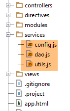 |
The [config, utils, dao] services are those already described in the Angular overview:
- the [config] service was introduced in section 3.7.4;
- Service [utils] was added to section 3.7.5;
- Service [dao] was introduced in section 3.7.6;
For the record, the structure of these services is as follows:
Service [config]
 |
- In [1]: we can see that the code is approximately 250 lines long. The bulk of this code involves externalizing the keys for the internationalized messages in [2]. We avoid hard-coding these keys directly into the code;
Service [utils]
 |
- Line 8: We haven’t encountered the variable [verbose] yet. It controls the function [debug] as follows:
 |
- lines 22–25: the function [utils.debug] does nothing if [verbose.on] evaluates to false. This variable is linked to a controller variable [appCtrl]:
 |
- line 21: [app.debug] takes the value of the pointer [utils.verbose]. Therefore, any modification made to [app.debug] will also be made to [utils.verbose];
- line 22: the initial value of [app.debug.on] is taken from the configuration file. By default, this value is true. This value may change over time. The user can change it in the navigation toolbars:
 |
- line 45: a checkbox (type=checkbox) allows you to change the value of [app.debug.on] (ng-model attribute);
Service [dao]
 |
3.8.11. Directives
 |
The directives [errors, footable, list, waiting] are those already described in the Angular overview:
- the [footable] directive was introduced in section 3.7.8.6;
- the [list] directive was introduced in section 3.7.12;
- the directives [errors] and [waiting] were introduced in section 3.7.14;
We had not encountered directive [debug]. It is as follows:
 |
The file [debug.html] referenced on line 11 is as follows:
- Line 2: The [debug] directive displays its template in JSON format within a Bootstrap banner (line 1);
This directive is used only in the master page [app.html]:
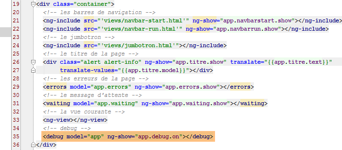 |
- The [debug] directive is used on line 35. It therefore displays the JSON version of the [$scope.app] template when in debug mode (ng-show attribute). This results in something like this:
 |
This requires a good understanding of the code to interpret, but once that is acquired, the information above becomes useful for debugging. Here, we have highlighted the elements of the displayed [$scope.app] template. Note that [$scope.app] is the memory shared by the controllers;
- [waitingBeforeTask]: the simulated wait time before any HTTP request;
- [debug]: the mode of debug—must be true if this banner is displayed;
- [navbarrun]: Boolean that controls the display of the following navigation bar:
- [navbarstart]: Boolean that controls the display of the following navigation bar:

- [errors]: template for the [errors] directive;
- [view]: encapsulates information about the currently displayed view;
- [waiting]: template for the [waiting] directive;
- [serverUrl, username, password]: Web service connection information;
- [medecins]: template for the [list] directive applied to physicians;
- [clients]: same as for clients;
- [menu]: controls the displayed menu options. These are defined in [navbar-run.html]:

The menu options are on lines 16, 23, 29, and 36.
- [formattedJour]: the day selected in the calendar in the format 'yyyy-mm-dd';
- [agenda]: the doctor's agenda. In this, there are available slots (rv==null) and reserved slots. For the latter, there is the name of the client who made the reservation;
- [selectedCreneau]: the time slot selected for making a reservation;
3.8.12. The controller [loginCtrl]
 |
Controller [loginCtrl] is associated with view [views/login.html], which, when combined with the master page, generates the following page:

The controller [loginCtrl] is as follows:

- line 13: [login] will be the template for the current view;
- line 14: [app] is the shared memory between the controllers;
- line 16: [app.view] is populated with the information from the current view;
This initialization code will be found in each controller. For controller C1 of a view V1 with model M1, we will have the following initialization code:
- line 18: you may recall that [appCtrl] initiated a simulated wait referenced by the object [app.task.action]. We use the [promise] from this task to wait for it to finish;
- line 39: the [login.setLang] method handles language switching;
- line 47: the [login.authenticate] method handles user authentication;
Let’s look at the main steps of the authentication method:

- lines 50–51: [app.waiting] is the template for the loading banner;
- line 53: [app.errors] is the error banner template;
- line 55: a simulated wait is initiated. The object [action, isFinished] is referenced by [login.task] and, consequently, since [app.view.model=login], by [app.view.model.task]. Note that this is the condition for the task to be canceled;
- line 57: after the simulated wait ends, the doctors are loaded;
- line 62: once the doctors have been obtained, this request is analyzed. If the doctors have been obtained, the clients are then requested;
- line 83: the response is analyzed and the final view is displayed. This is done with the following code:

- line 87: the Boolean [task.isFinished] is set to true in the following cases:
- the user canceled the wait;
- the doctors' request ended with an error;
- lines 91–98: the case where we had clients;
- line 93: [app.clients] is the template for the [list] directive, which will display the clients values in a drop-down list;
- lines 97–98: we prepare to switch views (line 98) but first indicate that the controller has finished its work (line 97). Recall that [$scope.app.view.done] is used to control navigation;
The important point to note here is that the doctors and the clients have been cached in the browser. They will no longer be requested from the web service.
3.8.13. The controller [homeCtrl]
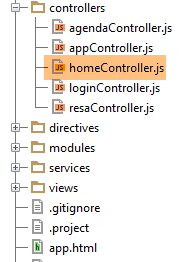 |
The [homeCtrl] controller is associated with the [views/home.html] view, which, when combined with the master page, produces the following page:

The structure of the [homeCtrl] controller is as follows:

- lines 12–20: this is the navigation control. All controllers have this except [loginCtrl] because the [/login.html] page is accessible without conditions;

- lines 25–28: here we find lines similar to those encountered in the [loginCtrl] controller. [home] is thus the view template associated with the controller;
- line 33: an attribute we haven’t encountered yet. This is the template for the view’s title bar:

- line 36: [home.datepicker] is the calendar template;
- line 38: [app.menu] is the template for the menu bar of navigation. Here, option and [Agenda] will be present. This is what allows you to request a doctor’s agenda;
Finally, the controller has two methods:
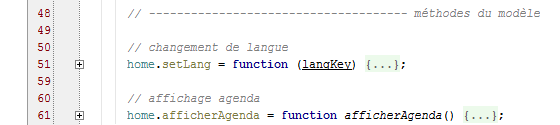
The display of the agenda (line 51) was discussed in section 3.7.8.
3.8.14. The [agendaCtrl] controller
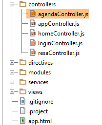 |
The [agendaCtrl] controller is associated with the [views/agenda.html] view, which, when combined with the master page, produces the following page:

The structure of controller [agendaCtrl] is as follows:

- lines 10–20 control navigation;

- Lines 23–26: [agenda] will be the template for the view associated with controller [agendaCtrl];
- lines 36-44: [app.titre] is the template for the following title bar:

- line 46: the menu will have the option [Home / Accueil]:

The controller methods are as follows:
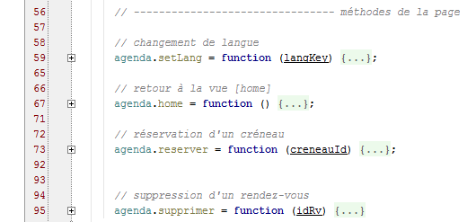
- line 95: the method [agenda.supprimer] was discussed in section 3.7.9;
The method [agenda.home] is a pure navigation method:

The [agenda.reserver] method is as follows:

- line 73: the parameter of the [reserver] function is the slot number (id);
- lines 77–86: aim to find the time slot with this identifier;
- line 82: the found time slot is placed in the shared memory [app]. The controller [resaCtrl], which will take over (line 90), will use this information to display its title banner;
- lines 89-90: navigation to [/resa.html];
3.8.15. The controller [resaCtrl]
 |
The [resaCtrl] controller is associated with the [views/resa.html] view, which, when combined with the master page, produces the following page:

The structure of controller [resaCtrl] is as follows:

- lines 12–20: the control for navigation;

- lines 24–27: [resa] will be the template for the current view;
- lines 38–45: [app.titre] is the template for the following title bar:

- line 47: two menu options are displayed:

The controller methods are as follows:

The [resa.valider] method was discussed in section 3.7.9.
3.8.16. Language Management
All controllers provide the following method: [setLang]:

It could have been factored into the [appCtrl] controller.